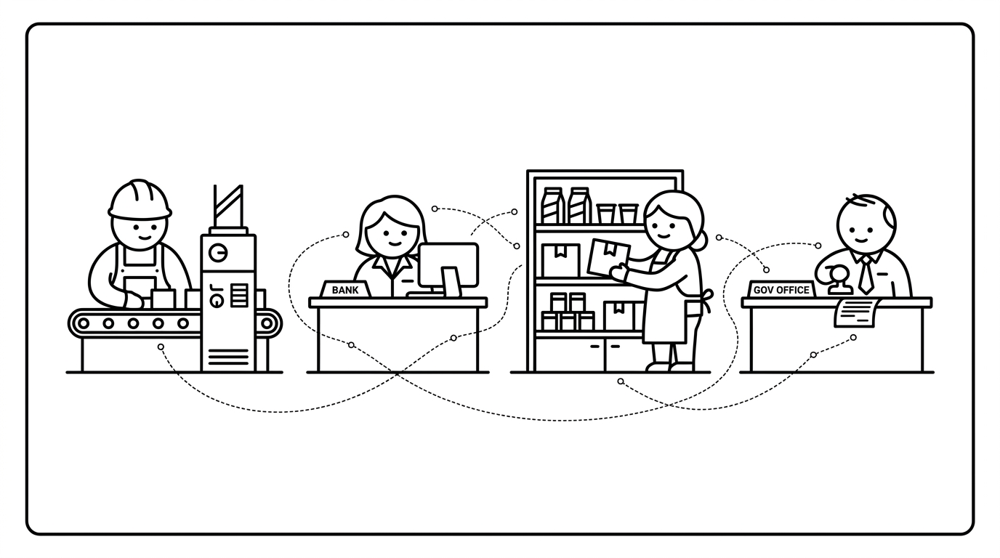
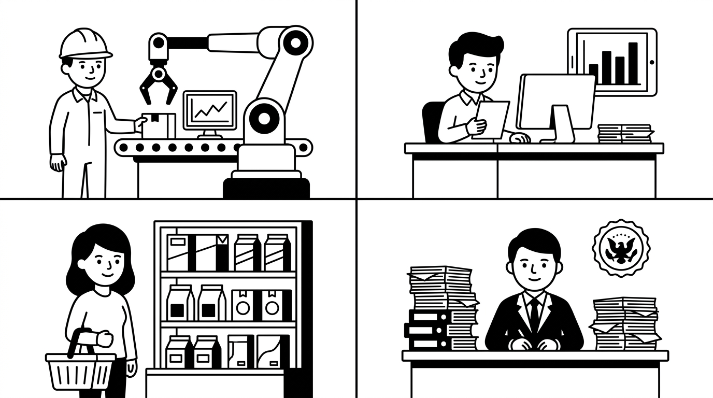
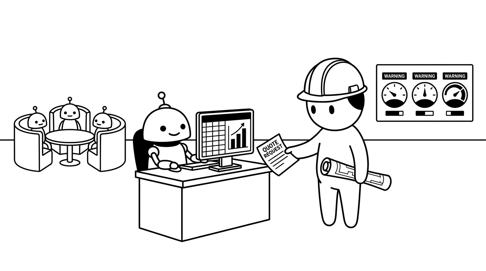
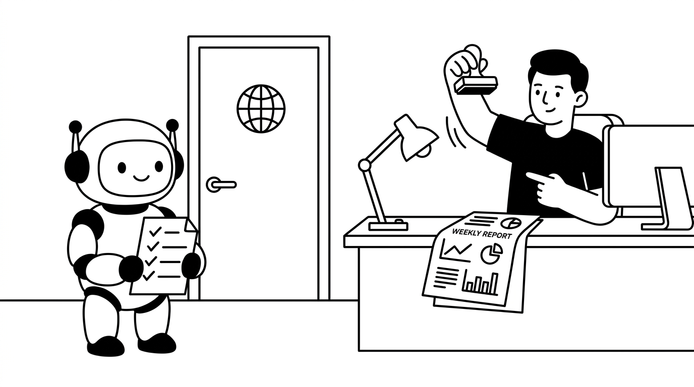
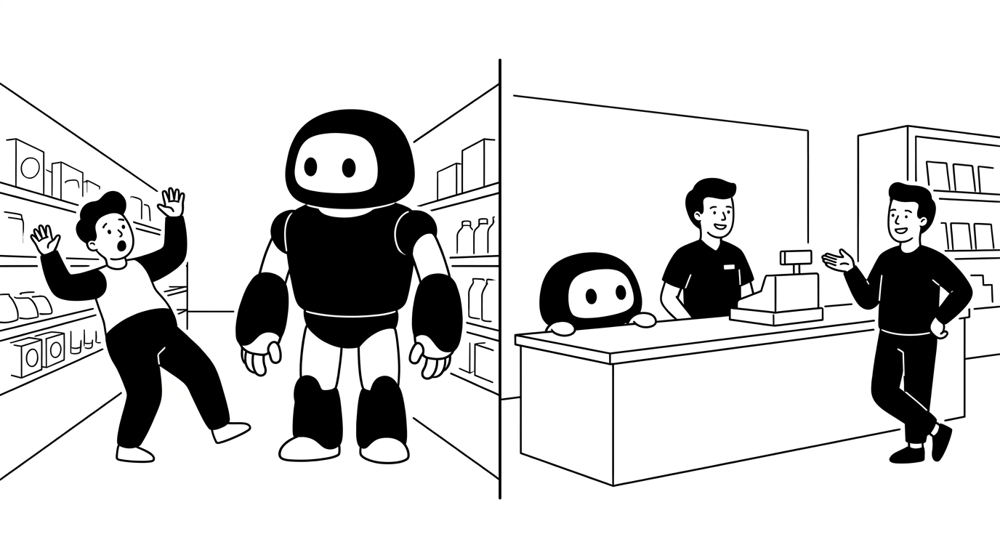
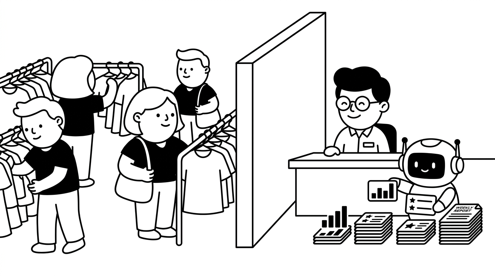
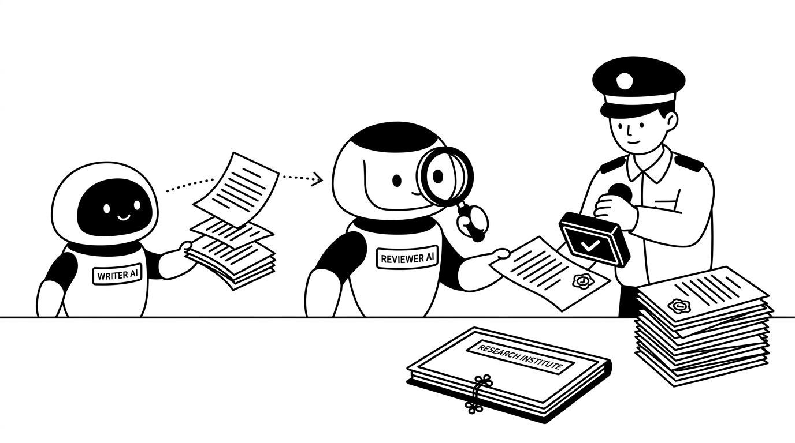
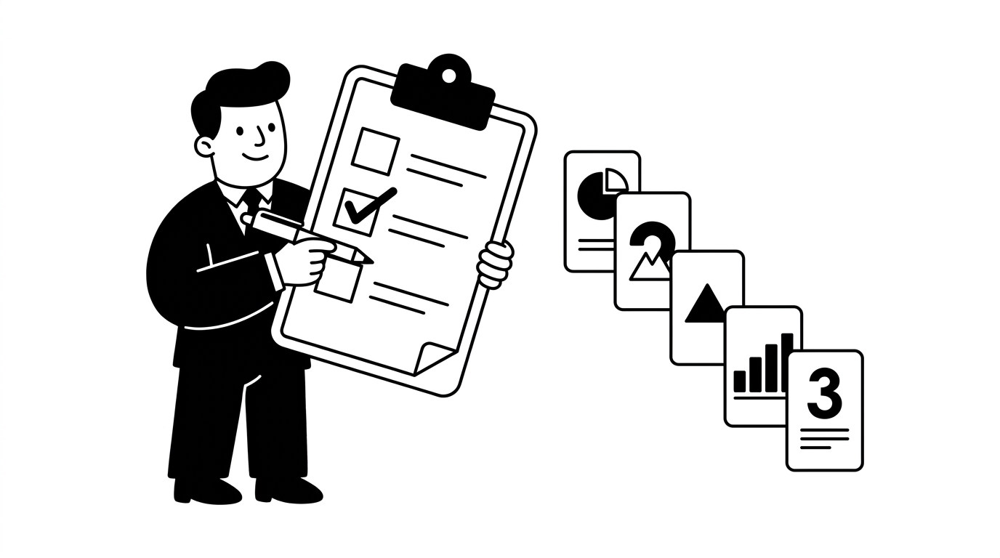

산업별 기업 AX 사례
장피엠 가이드 + 개인 취향 · 사용자 품질 평가 전
확인 필요인 퇴고본은 게시용 완성본이 아닙니다.
작성자 확인 항목 14개
- 고정 링크 제목의 줄표: 원문 보존 지시를 우선하여 AT-18 지적이 남음
- R037: 의미 변경 — 원문 150행 「"눈 가리고 손 묶고" 상태에서도 굴러가는 에이전트가 있습니다. 공통 조건은 내부 데이터만 쓰고, 밖으로 나갈 땐 사람 허락을 받는 것입니다.」 → 결과 149행 「"눈 가리고 손 묶고" 상태에서도 내부 데이터를 쓰고 외부로 나가기 전에 사람의 허락을 받는 조건으로 에이전트를 만들 수 있었습니다.」. 원문은 공통 조건을 "내부 데이터만 쓰고"로 한정했으나 결과는 "내부 데이터를 쓰고"이다. 외부로 나가기 전 사람 허락은 남지만 내부 데이터만 허용한다는 배타 조건은 빠졌다.
- R067: 의미 변경 — 원문 100행 「무슨 뜻이냐면, 금융권을 누르는 3대 규제를 이렇게 번역할 수 있다는 겁니다.」 → 결과 103행 「이 교수는 금융권의 3대 규제가 현장에서 어떤 제약으로 작용하는지를 다음과 같이 설명했습니다.」. 원문 100행은 필자가 "3대 규제를 이렇게 번역할 수 있다는 겁니다"라고 표를 풀이한다. 결과 103행은 "이 교수는 ... 다음과 같이 설명했습니다"라고 세 규제 표의 설명을 교수의 발언으로 명시했다. 앞 인용은 눈·손·발 비유만 담으므로 이 구체적 설명의 발언자를 교수로 확정할 근거가 원문에 없다.
- R073: 의미 변경 — 원문 134행 「**③ 멀티모달 RAG, 금융 문서엔 그림이 많다**」 → 결과 133행 「### ③ 멀티모달 RAG, 금융 문서엔 그림이 많다」 / 135행 「금융 문서에는 이자율 계산 흐름처럼 도표와 화살표로 표현한 내용이 많습니다. 텍스트만 학습시키면 그림으로 표현한 내용이 통째로 누락되므로, 도식까지 해석해 지식 베이스에 넣는 멀티모달 RAG가 필요해졌습니다.」. 해당 제목 자체는 같지만 절 전체 대조에서 원문 136행의 "금융 문서는 다른 산업 문서와 다릅니다"라는 산업 간 차이 주장이 결과 135행에서 사라졌다. 도표·화살표가 많고 텍스트만으로 그림 내용이 누락된다는 이유는 보존됐지만 비교 주장은 다른 문장에도 남지 않았다.
- R097: 의미 변경 — 원문 206행 「한 개발자의 설명을 덧붙이면 이해가 더 쉽습니다.」 → 결과 233행 「인간공학을 전공한 서울대 교수는 콰이어트 테크를 **"고객 주변에 자연스럽게 숨어 있어서, 몰입을 깨뜨리지 않으면서 은근히 도와주는 기술."**이라고 정의합니다. 우리말로는 "알잘딱깔센"에 해당한다고 볼 수 있겠습니다. 뷰티 유통사 대표님의 **"고객에게 기억에 남는 경험을 AI로 만들어. 근데 눈에 보이면 안 돼."**라는 지시도 콰이어트 테크를 요청한 것이었습니다. 모순된 주문이 아니었습니다. 대표님이 그 개념의 이름을 쓰지 않았을 뿐입니다. 한 개발자는 사용자가 기술에서 도움을 받고 별도로 조작할 필요가 없어야 반감 없이 쓸 수 있다고 설명했습니다.」. 원문은 "한 개발자의 설명을 덧붙이면" 뒤에서 유용성과 사용자 개입 부재가 반감 없이 작용했던 이유라는 과거 사례를 인용한다. 결과는 "별도로 조작할 필요가 없어야 반감 없이 쓸 수"로 써 일반적 필요조건으로 강화했다.
- R126: 의미 변경 — 원문 300행 「금융도 마찬가지입니다. 정형 데이터는 이미 시스템에 다 담겼고, 이제 남은 건 **사람만 할 수 있다고 여겼던 비정형 업무**입니다. 유통은 결이 조금 다른데, 재고와 프로모션이 실시간으로 바뀌니 **데이터의 신선도(freshness)**가 관건입니다.」 → 결과 337행 「그래서 공공데이터 전략에서는 **"우리가 만들고 있는 정부 문서 자체를 AI Ready로 만들자."**는 결론이 나왔습니다. 보고서의 외형을 중시하던 행정 문서 문화가 AI도 읽을 수 있는 문서를 만드는 쪽으로 바뀌고 있다는 설명입니다. 금융은 정형 데이터를 이미 시스템에 담았고 이제 사람만 할 수 있다고 여겼던 비정형 업무를 다루고 있습니다. 유통은 재고와 프로모션이 실시간으로 바뀌므로 데이터의 신선도(freshness), 즉 최신 상태를 반영했는지가 중요합니다.」. 원문 금융 문장은 "이제 남은 건 ... 비정형 업무"로 남은 과제를 말한다. 결과 "이제 ... 비정형 업무를 다루고 있습니다"는 현재 수행 중으로 단정해 단계·시제를 바꿨다. 유통 신선도의 풀이는 원래 실시간 변경 설명에 부합한다.
- R172: 의미 변경 — 원문 447행 「세 번째 질문이 특히 무거운데, 예산 배분에서 잘못된 의사결정을 내리면 그 예산이 통째로 낭비되고, 홍수 경보를 잘못 내서 대피시켰는데 아무 일도 안 일어날 수도 있기 때문입니다.」 → 결과 519행 「예산 배분을 잘못 결정하면 예산이 통째로 낭비될 수 있고, 홍수 경보로 대피시켰는데 아무 일도 일어나지 않을 수도 있습니다. 결과가 사람과 자원에 영향을 주므로 책임을 묻는 세 번째 질문을 특히 무겁게 다뤄야 합니다. 각 산업에서는 근거 표기와 최종 확인, 사람에게 제어권을 넘기는 조건, 고위험 영역 지정으로 이 질문에 답하고 있습니다.」. 원문 "잘못된 의사결정을 내리면 그 예산이 통째로 낭비되고"를 결과는 "낭비될 수 있고"로 낮췄다. 원문은 홍수 경보를 "잘못 내서"라 한정했지만 결과는 단순 "홍수 경보로"여서 잘못된 경보라는 조건도 빠졌다.
- R188: 의미 변경 — 원문 539행 「### 오늘 글 3줄 요약」 → 결과 629행 「### 내부 업무를 돕는 에이전트부터 시작해 보세요」. 수치가 들어간 원문 소제목 "오늘 글 3줄 요약"을 "내부 업무를 돕는 에이전트부터 시작해 보세요"로 대체했다. 불변식의 수치 포함 제목 문구 보존에 어긋난다. 요약 사실 자체는 본문에 남는다.
- R223: 의미 변경 — 원문 100행 「무슨 뜻이냐면, 금융권을 누르는 3대 규제를 이렇게 번역할 수 있다는 겁니다.」 → 결과 103행 「이 교수는 금융권의 3대 규제가 현장에서 어떤 제약으로 작용하는지를 다음과 같이 설명했습니다.」. 원문 100행은 필자가 "3대 규제를 이렇게 번역할 수 있다는 겁니다"라고 표를 풀이한다. 결과 103행은 "이 교수는 ... 다음과 같이 설명했습니다"라고 세 규제 표의 설명을 교수의 발언으로 명시했다. 앞 인용은 눈·손·발 비유만 담으므로 이 구체적 설명의 발언자를 교수로 확정할 근거가 원문에 없다.
- R227: 의미 변경 — 원문 134행 「**③ 멀티모달 RAG, 금융 문서엔 그림이 많다**」 → 결과 133행 「### ③ 멀티모달 RAG, 금융 문서엔 그림이 많다」. 해당 제목 자체는 같지만 절 전체 대조에서 원문 136행의 "금융 문서는 다른 산업 문서와 다릅니다"라는 산업 간 차이 주장이 결과 135행에서 사라졌다. 도표·화살표가 많고 텍스트만으로 그림 내용이 누락된다는 이유는 보존됐지만 비교 주장은 다른 문장에도 남지 않았다.
- R260: 의미 변경 — 원문 202행 「인간공학을 전공한 서울대 교수는 이걸 이렇게 정의합니다. **"고객 주변에 자연스럽게 숨어 있어서, 몰입을 깨뜨리지 않으면서 은근히 도와주는 기술."** 우리말로는 "알잘딱깔센"이 제일 가깝겠네요.」 / 204행 「이제 앞의 질문에 답할 차례입니다. **"고객에게 기억에 남는 경험을 AI로 만들어. 근데 눈에 보이면 안 돼."** 따뜻한 냉면이 아니었습니다. 그 대표님은 콰이어트 테크를 그대로 주문한 것이었어요. 개념에 이름을 붙이지 않았을 뿐이죠.」 / 206행 「한 개발자의 설명을 덧붙이면 이해가 더 쉽습니다.」 → 결과 233행 「인간공학을 전공한 서울대 교수는 콰이어트 테크를 **"고객 주변에 자연스럽게 숨어 있어서, 몰입을 깨뜨리지 않으면서 은근히 도와주는 기술."**이라고 정의합니다. 우리말로는 "알잘딱깔센"에 해당한다고 볼 수 있겠습니다. 뷰티 유통사 대표님의 **"고객에게 기억에 남는 경험을 AI로 만들어. 근데 눈에 보이면 안 돼."**라는 지시도 콰이어트 테크를 요청한 것이었습니다. 모순된 주문이 아니었습니다. 대표님이 그 개념의 이름을 쓰지 않았을 뿐입니다. 한 개발자는 사용자가 기술에서 도움을 받고 별도로 조작할 필요가 없어야 반감 없이 쓸 수 있다고 설명했습니다.」. 콰이어트 테크 정의 인용과 알잘딱깔센 비유, 대표의 지시가 같은 개념이며 명칭만 몰랐다는 해석은 그대로이다. 동일 결과 문단의 개발자 설명 강화는 별도 R260에서 판정한다. 원문은 "한 개발자의 설명을 덧붙이면" 뒤에서 유용성과 사용자 개입 부재가 반감 없이 작용했던 이유라는 과거 사례를 인용한다. 결과는 "별도로 조작할 필요가 없어야 반감 없이 쓸 수"로 써 일반적 필요조건으로 강화했다.
- R290: 의미 변경 — 원문 298행 「그래서 공공데이터 전략 차원에서 나온 결론이 이겁니다. **"우리가 만들고 있는 정부 문서 자체를 AI Ready로 만들자."** 예쁜 보고서를 만드는 게 미덕이던 행정 문서 문화가, AI가 읽을 수 있는 문서로 바뀌고 있다는 거죠.」 / 300행 「금융도 마찬가지입니다. 정형 데이터는 이미 시스템에 다 담겼고, 이제 남은 건 **사람만 할 수 있다고 여겼던 비정형 업무**입니다. 유통은 결이 조금 다른데, 재고와 프로모션이 실시간으로 바뀌니 **데이터의 신선도(freshness)**가 관건입니다.」 → 결과 337행 「그래서 공공데이터 전략에서는 **"우리가 만들고 있는 정부 문서 자체를 AI Ready로 만들자."**는 결론이 나왔습니다. 보고서의 외형을 중시하던 행정 문서 문화가 AI도 읽을 수 있는 문서를 만드는 쪽으로 바뀌고 있다는 설명입니다. 금융은 정형 데이터를 이미 시스템에 담았고 이제 사람만 할 수 있다고 여겼던 비정형 업무를 다루고 있습니다. 유통은 재고와 프로모션이 실시간으로 바뀌므로 데이터의 신선도(freshness), 즉 최신 상태를 반영했는지가 중요합니다.」. 정부 문서를 AI Ready로 만들자는 원문 인용과 행정 문화 변화의 설명을 유지했다. 원문 금융 문장은 "이제 남은 건 ... 비정형 업무"로 남은 과제를 말한다. 결과 "이제 ... 비정형 업무를 다루고 있습니다"는 현재 수행 중으로 단정해 단계·시제를 바꿨다. 유통 신선도의 풀이는 원래 실시간 변경 설명에 부합한다.
- R346: 의미 변경 — 원문 447행 「세 번째 질문이 특히 무거운데, 예산 배분에서 잘못된 의사결정을 내리면 그 예산이 통째로 낭비되고, 홍수 경보를 잘못 내서 대피시켰는데 아무 일도 안 일어날 수도 있기 때문입니다.」 / 449행 「앞서 본 장치들이 전부 이 질문의 답입니다.」 → 결과 519행 「예산 배분을 잘못 결정하면 예산이 통째로 낭비될 수 있고, 홍수 경보로 대피시켰는데 아무 일도 일어나지 않을 수도 있습니다. 결과가 사람과 자원에 영향을 주므로 책임을 묻는 세 번째 질문을 특히 무겁게 다뤄야 합니다. 각 산업에서는 근거 표기와 최종 확인, 사람에게 제어권을 넘기는 조건, 고위험 영역 지정으로 이 질문에 답하고 있습니다.」. 원문 "잘못된 의사결정을 내리면 그 예산이 통째로 낭비되고"를 결과는 "낭비될 수 있고"로 낮췄다. 원문은 홍수 경보를 "잘못 내서"라 한정했지만 결과는 단순 "홍수 경보로"여서 잘못된 경보라는 조건도 빠졌다. 네 책임 장치를 산문으로 바꿨다. 금융 출처·공공 최종 공무원·유통 제어권·금융 개인대출 고영향 지정의 대상과 기능을 유지한다.
- R359: 의미 변경 — 원문 539행 「### 오늘 글 3줄 요약」 → 결과 629행 「### 내부 업무를 돕는 에이전트부터 시작해 보세요」. 수치가 들어간 원문 소제목 "오늘 글 3줄 요약"을 "내부 업무를 돕는 에이전트부터 시작해 보세요"로 대체했다. 불변식의 수치 포함 제목 문구 보존에 어긋난다. 요약 사실 자체는 본문에 남는다.
원문 Markdown · 퇴고 Markdown · 검수 요약
원문
AI 에이전트가 산업을 어떻게 바꾸고 있는가: 산업별 기업의 AX 사례

"우리도 AI 도입했는데, 왜 아무것도 안 바뀌죠?"
지금 많은 회사가 비슷한 자리에 서 있습니다. PoC도 해봤고 파일럿도 돌려봤고 AX 전담 조직까지 만들었는데, 그 다음이 없습니다.
제조 대기업들을 만나고 다니는 한 컨설턴트가 이유를 이렇게 설명합니다.
"대부분의 고객이 PoC나 파일럿은 다 해본 상태고, AX 전담 조직까지 구성해서 확산하려고 합니다. 그런데 확산이 잘 안 돼요. 이유를 들어보면 현장의 반감이 있는데 — AI로 뭔가 기능을 만들어서 '너희 이제 써봐' 했는데 실질적으로 도움이 안 되는 겁니다."
기능은 만들었는데 일은 안 바뀐 상태입니다. 낯설지 않은 장면일 겁니다. 그렇다면 잘 굴러가는 곳들은 무엇을 다르게 했을까요?
시작하기 전에, DX와 AX는 뭐가 다른가요?
본론 전에 용어부터 맞추겠습니다. 이 구분이 없으면 뒤에 나오는 사례가 뒤섞여 읽힙니다.
한 서울대 기계공학과 교수는 이렇게 정리합니다.
DX는 아날로그 업무를 디지털로 바꾸는 것이고, 그 결과물은 '자동화'입니다. AX는 그 자동화된 산물 위에 AI를 얹어서 자동화를 '자율화'로 바꾸는 겁니다.
손으로 하던 걸 컴퓨터로 옮기면 DX입니다. ERP, MES 같은 시스템이 그 산물이죠. 그 시스템에 쌓인 데이터로 AI가 스스로 판단하기 시작하면 AX입니다.
하나 더 있습니다. 생성형 AI와 AI 에이전트도 다릅니다.
| 구분 | 하는 일 |
|---|---|
| 생성형 AI | 질의응답 시스템. 물어보면 답한다. 매번 역할을 새로 지정해야 한다 |
| AI 에이전트 | 업무 수행 주체.역할이 이미 정해져 있고, 목표를 달성하기 위해 계획을 세우고 → 실행하고 → 결과를 검증한다 |
생성형 AI가 지식 응답 시스템이라면, 에이전트는 업무 수행 주체입니다.
1부. 지금 산업 현장의 AI 에이전트는 무슨 일을 하고 있나

1) 제조: AI 에이전트끼리 대화하기 시작한 공장
제조 현장의 방향은 세 단계로 정리됩니다. 업무별 AI 모델을 만들고, 그 모델을 에이전트로 만들고, 에이전트끼리 오케스트레이션하는 순서입니다.
품질 검사, 품질 예측, 정비, 에너지 최적화, 공정 최적화, 생산 계획, SCM. 지금은 이 업무들이 디지털로 전환돼 돌아가지만 중간중간 반드시 전문가가 개입합니다. 이 판단을 AI가 하게 만드는 게 지금 진행 중인 일이고요.
그 다음 단계는 이렇습니다.
어딘가에서 품질 불량이 생겼습니다. 그러면 누군가는 "제조 현장 어디에 이슈가 있으니 빨리 정비하라"고 명령을 내려야 합니다. 그러려면 품질 AI 에이전트와 정비 AI 에이전트가 서로 소통해야 합니다. 그 위에서 각 에이전트를 오케스트레이션 해주는 상위 계층이 필요합니다.
AI 에이전트 하나를 잘 만들고 나면, 에이전트들이 서로 부르고 답하는 구조가 다음 과제로 남는다는 뜻이죠.
실제 사례들
- 현대차 싱가포르 혁신센터. 자율형 공장을 목표로 만든 곳입니다. 방문한 분의 표현으로는 "기본적으로 사람이 없어요. 사람이 제일 많은 곳이 2층 관제실인데 그것도 대부분 모니터로 관제합니다." 보스턴다이내믹스의 휴머노이드 아틀라스가 있고, 그 전에는 사족보행 로봇 스팟이 라인을 돌아다니며 체결이 제대로 됐는지 검사해 관제센터로 데이터를 보냈다고 하죠. 고객은 자기 차가 지금 어디쯤 있는지, 언제 시승할 수 있는지까지 확인합니다.
- 한 국내 패션 기업. DX를 워낙 잘해둔 덕에 상품 기획에 AX를 적용했습니다. 과거엔 디자이너가 책을 보고 혼자 학습해 트렌드를 잡았다면, 지금은 AI 도구로 글로벌 패션 트렌드를 읽어 상품 기획 단계부터 AI로 가져가겠다는 겁니다.
- 중국 제조 현장. 주문 정보가 실시간으로 생산 라인에 연결되어, 주문에 맞춰 생산 환경을 유연하게 바꾸고 필요한 수량만 만들어 재고를 최소화합니다. 라인 전체가 데이터로 연결되어 최적의 생산 흐름을 만드는 방식이죠.
🔧 제조 쪽에서 제가 직접 만들어 본 것들

위 사례는 대기업 공장 이야기입니다. 그런데 에이전트끼리 대화하는 구조는 규모가 작아도 만들 수 있습니다. 제가 제조 고객을 염두에 두고 만들어 본 것 네 가지입니다.
- 견적 에이전트 (열처리 가공). 고객의 견적요청 메일과 부품 도면 PDF를 넣으면 스펙을 추출하고, 빠진 항목을 찾아내고, 보유 장비와 규칙에 대조해 공정 루트(진공침탄·가스침탄·가스질화)를 판정하고, 원가를 계산해 엑셀 견적서와 한·중·영 회신 메일까지 만듭니다. 스킬 4개가 순서대로 물리는 구조인데, 제일 중요한 규칙은 하나입니다. "수치 계산은 반드시 스크립트, LLM 직접 산술 금지." 견적서 숫자를 AI가 어림하는 순간 이 도구는 못 씁니다.
- 가상 이사회 (전자재료 기업). 전략 안건 하나를 시장·제조·재무 세 전문 에이전트에게 서로 격리한 채 병렬로 검토시키고, 의장 역할이 종합해 Go / Conditional Go / Hold / No-Go 의사결정 메모를 냅니다. 앞서 나온 "품질 에이전트와 정비 에이전트가 소통해야 한다"는 그림의 축소판이죠. 격리하는 이유는 먼저 말한 에이전트에게 나머지가 끌려가지 않게 하려는 것이고, 소수 의견은 채택이든 기각이든 이유를 남기게 했습니다.
- 공급망 리스크 레이더 (구매·SCM). 항로 봉쇄, 수출 규제 같은 외부 리스크를 모아 Watch / Warning / Critical로 점수화하고 대시보드로 냅니다. 점수는 심각도·출처 신뢰도·공급 관련성·시간 민감도·교차검증 다섯 항목을 정해진 규칙대로 코드가 계산하고, LLM은 점수를 바꿀 수 없습니다. Warning 이상인데 출처 URL이 없으면 '확인 필요' 표시가 자동으로 달립니다.
- 설비 매뉴얼 챗봇 (현장·CS). PLC 매뉴얼 PDF 한 권을 통째로 넣고, 현장 엔지니어가 질문하면 페이지 번호가 달린 인용과 함께 답하는 RAG 챗봇입니다. 매뉴얼에 없는 내용이면 "찾지 못했습니다"라고 답하게 해뒀습니다.
네 개 모두 판단은 AI가 하고 숫자와 점수는 코드가 냅니다. 제조 현장에서 AI를 믿게 만드는 첫 조건이 이거였습니다.
그런데 왜 확산이 안 될까요
서두에 인용한 컨설턴트의 진단이 나온 자리가 바로 이 제조 현장입니다. PoC도, 파일럿도, AX 전담 조직도 다 갖췄는데 현장은 반감을 보입니다. 화려한 자율공장 사례와 '우리 공장' 사이의 거리가 여기서 벌어지죠.
원인은 두 가지였습니다. 현장에 쌓인 데이터가 AI가 먹을 수 있는 상태가 아니라는 것, 그리고 AI가 현장의 고충이 아니라 본사의 계획에서 출발했다는 것. 둘 다 2부에서 자세히 보겠습니다.
2) 금융: 규제에 묶인 채로 만들어낸 AI 에이전트 기술
금융 편은 한 서울대 산업공학과 교수의 이 말로 시작합니다.
"지금 대한민국 금융사에서 AI 한다는 건 약간 코미디예요. 눈 가리고 손 묶고 발도 묶고, 자 한번 해봐 이런 식이거든요."
무슨 뜻이냐면, 금융권을 누르는 3대 규제를 이렇게 번역할 수 있다는 겁니다.
| 규제 | 현장 번역 |
|---|---|
| 망분리(전자금융감독규정) | AI 쓰지 마라 |
| 개인정보보호법·신용정보법 | 데이터 쓰지 마라 |
| AI 기본법(올해 1월 시행) | 그런데 의사결정을 설명은 해라 |
실제로 은행 직원은 사무용 PC, 시스템 운영 PC, 인터넷 PC 세 대를 나눠 씁니다. 그리고 AI 기본법상 금융의 개인 대출 심사는 '고영향 AI'로 지정돼 투명성·안전성 의무가 따릅니다.
그런데도 만들어낸 것들이 있습니다.
① 레거시 시스템을 '툴'로 만들기 (MCP)
금융 데이터는 대부분 시스템 안 테이블에 정형으로 들어 있습니다. 그래서 순서가 이렇습니다.
- 테이블에서 데이터를 꺼내오는 기술 (Text-to-SQL 등)
- 기존 업무 처리 로직을 툴로 감싸기. 여기서 MCP가 등장합니다
- 에이전트끼리 협업하기 (A2A, AI 오케스트레이션)
MCP를 한 은행 팀장은 "AI가 서로 대화하기 위한 만국 공통어"라고 표현하더군요. 예전엔 연동할 대상마다 인터페이스를 일일이 맞춰야 했는데, 지금은 표준이 잡혀서 각 회사가 자기 시스템을 그 표준에 맞춰 열어두면 된다는 겁니다.
② 할루시네이션을 잡는 방식은 출처 표기
금융에서 AI가 잘못 안내하면 그건 고객 손해로 직결됩니다. 고객 입장에선 "그건 금융사 사정이고, 나는 안내받은 대로 판단했을 뿐"이니까요.
그래서 쓰는 방법이 RAG + 리즈닝 + 시테이션(출처 표기)입니다.
- 사내 규정·매뉴얼을 지식 베이스로 구성합니다. 모델을 다시 학습시키지 않고 참조하게 만드는 겁니다
- 최신 모델은 결론만 던지지 않고 생각하는 과정을 보여주니, 그 과정마다 "이 판단은 1번 문서에서, 저건 2번 문서에서 왔다"고 출처를 답니다
- 사람이 그 출처를 보고 한 번 더 검증합니다
한 은행 팀장의 용어 정리가 기억에 남습니다. 흔히 "내 문서를 학습시킨다"고 말하는데, 정확한 표현은 학습이 아니라 참조라는 겁니다. "옆에 백과사전을 두고 답변한다"는 설명을 내부에서 쓴다고 하더군요. 이 구분을 안 하면 "그럼 학습은 어떻게 시켜요?"라는 질문이 끝없이 돌아온다고 합니다.
③ 멀티모달 RAG, 금융 문서엔 그림이 많다
금융 문서는 다른 산업 문서와 다릅니다. 도표가 많고 화살표가 많아요. 이자율 계산 흐름 같은 게 전부 그림으로 되어 있죠. 텍스트만 학습시키면 그 내용이 통째로 누락됩니다. 그래서 도식화된 그림까지 해석해 지식 베이스에 넣는 멀티모달 RAG가 필요해졌습니다.
④ 규제와 상관없이 지금 당장 할 수 있는 것
교수의 제안이 현실적이었습니다.
"카드사에 카드가 한 50종 되나요? AI를 활용하면 개인의 니즈를 다 파악해서 100% 나만의 카드를 만들 수도 있어요. 순식간에 할 수도 있다고 봅니다. 그런 건 규제하고 별 문제가 없어요."
유튜브가 우리 다섯 명에게 전부 다른 콘텐츠를 추천하듯, 금융 상품도 개인화할 수 있다는 거죠. 그리고 이건 규제 완화를 기다릴 필요가 없는 영역입니다.
🔧 금융·보험 쪽에서 제가 직접 만들어 본 것들

"눈 가리고 손 묶고" 상태에서도 굴러가는 에이전트가 있습니다. 공통 조건은 내부 데이터만 쓰고, 밖으로 나갈 땐 사람 허락을 받는 것입니다.
- 주간 거래액 보고서 (간편결제 기업). 거래 CSV를 넣으면 KPI 집계, 차트, LLM 인사이트, 회사 양식 Word 조립까지 5단계로 돌고, 마지막에 41개 항목 검증을 통과해야 끝납니다. LLM이 하는 건 세 번째 단계의 텍스트 작성뿐이고 나머지는 스크립트입니다. 텍스트 속 숫자가 집계와 다르면 그 단계만 두 번까지 다시 씁니다. 경영진에게 가는 보고서라 이 검증 없이는 내보낼 수 없었습니다.
- 약관 가이드 작성기 (손해보험사). 약관 PDF를 읽고 상품 가이드 문서를 만드는데, 순서가 정해져 있습니다. 부족한 정보를 먼저 브리핑하고 사용자가 승인해야 공식 사이트를 조회하고, 문서를 만들기 전에 한 번 더 승인을 받습니다. 출처는 3등급(약관 원문 > 공식 페이지 > 커뮤니티)이고 3등급은 본문에 못 씁니다. 규칙 파일에는 "빈칸을 추정값으로 채우는 것을 금지한다"고 적혀 있고, 약관에 없으면 '약관 미기재'라고 씁니다.
- 타사·규제 동향 임원보고 (생명보험사). 감독당국·협회·업계지 등 허용 목록에 있는 출처만 수집해 1쪽짜리 임원보고 docx를 만듭니다. 모든 주장에 출처·발행일·신뢰도 라벨이 달리고, 별도 컨텍스트의 fact-checker 에이전트가 주장과 출처를 다시 대조해 하나라도 안 맞으면 문서 생성을 멈춥니다. 원래 주 2~3시간 걸리던 수작업이었습니다.
- 회의록 (생명보험사). 녹음을 전사해 8개 항목으로 구조화하고 양식 그대로 1쪽 docx를 만듭니다. 사람 이름이나 고유명사가 100% 확실하지 않으면 멈추고 물어봅니다.
- 주간 간담회 PPT (금융그룹 교육팀). 이번 주 한 일을 세 줄 적거나 말로 녹음하면 회사 양식 PPT 한 장이 나옵니다. 규칙은 "텍스트만 교체, 레이아웃·서식 절대 변경 금지". 강의에서 비개발자 분들 반응이 가장 좋았던 도구입니다.
금융 편이 말한 '시테이션'이 실제 구현에서는 출처 라벨과 fact-checker가 됩니다. 망분리라는 조건은 오히려 설계를 단순하게 만들었습니다. 밖에 나가는 길이 애초에 하나뿐이니까요.
3) 유통·서비스: AI 에이전트 실패 사례가 더 많은 것을 가르쳐 줍니다

먼저 한 뷰티 유통사 8년 차 과장이 남긴 사연부터 보겠습니다. 세미나를 다녀온 대표님이 이렇게 지시했다는 겁니다.
"다들 AI 할 줄 알아야 해. 고객에게 기억에 남는 경험을 AI로 만들어 봐. 근데 고객 눈에 막 보이면 안 돼."
전언은 여기서 끝났습니다. 부서장들은 무슨 소린가 싶었고, 옆자리 대리는 "따뜻한 냉면, 0칼로리 피자 만들어 오란 소리"라며 혀를 찼다고 하죠. 이 지시가 진짜 말이 안 되는 걸까요? 이 절 끝에서 답하겠습니다.
유통·서비스는 AI 도입률이 가장 높은 산업입니다. 엔비디아 발표 기준 소비재·소매 업종의 AI 도입 기업 비율이 91%, 올해 AI 예산을 더 늘리겠다는 기업도 90%입니다. 고객 만족도가 그대로 매출로 연결되니 새 도구가 나오면 어떻게든 먼저 써보는 거죠. 그만큼 성공과 실패가 가장 많이 쌓인 산업이기도 합니다.
성공한 쪽
- 스타벅스. 고객이 앱에 접속하면 과거 주문 이력 + 현재 시간대 + 날씨 + 근처 매장 재고까지 100여 가지 데이터를 AI가 분석해 메뉴를 추천합니다. 고객 만족도도 올라가고 매장은 자기 재고 기준으로 추천이 나가니 운영 효율까지 좋아집니다.
- 루이비통. 원하는 스타일의 사진을 올리면 유사한 제품을 찾아주는 비주얼 서치를 만들었습니다. 그 검색 결과를 내 취향 정보로 업데이트해두고, 나중에 그 취향의 신제품이 나오면 맞춤 알림을 보내고, 이어서 퍼스널 쇼핑 서비스까지 자연스럽게 연결합니다.
- 버라이즌. 콜센터에 AI를 넣되 고객 앞에 세우지 않았습니다. 상담원이 고객 얘기를 듣는 동안 AI가 뒤에서 "이 사람한테 무슨 답변을 해야 하는지" 알려주는 방식이죠. 상담원이 자료를 찾는 시간이 줄고 고객 데이터를 즉시 아니까 처리 속도도 매출도 함께 올라갔습니다.
- 월마트. 쇼핑 어시스턴트로 상품 선택부터 배송까지 자연스럽게 이어지게 만들어 구매 빈도를 약 35% 높였습니다. 지금은 아예 챗봇에서 대화하다 월마트로 넘어가 물건을 사는 연계까지 갑니다.
실패한 쪽, 그리고 이유
- 월마트 재고 점검 로봇. 매장 선반 재고를 확인하는 AI 로봇을 500여 매장에 투입했습니다. 로봇은 주어진 목적을 훌륭하게 달성했습니다. 그런데 매장에 온 고객들이 1.8m짜리 로봇이 매장을 휘젓고 다니는 걸 보고 위압감과 불안감을 느꼈어요. 결국 전량 회수했습니다.
- 아마존 고. 물건 들고 그냥 나가면 자동 결제되는 무인 매장. 기술적 문제를 포함한 여러 이유로 미국 내 매장을 철수 중입니다.
- 아마존 예측 배송. 구매 패턴을 보고 "이 사람 곧 이거 살 때 됐다" 싶으면 미리 배송해두는 아이디어. 발상은 좋았는데 디테일에서 무너져 성과를 못 냈습니다.
- 콜센터 AI 전면 배치. 사연을 그대로 옮깁니다.
"AI인가 뭔가로 시간만 버리고, 물어보는 거에 헛소리나 하던데. 그냥 바로 상담원으로 연결해 주면 안 돼요?" AI 상담원 절차를 도입한 이후 절반 이상의 고객이 이런 불만으로 통화를 시작합니다. 직원들 근무 질이 더 나빠졌고, 관두는 주기도 훨씬 빨라졌습니다.
한 유통 전문 매체 센터장은 원인을 이렇게 봅니다.
"아직 사람하고 대화를 해야 할 만큼의 기술이 올라와 있지 않은데 이걸 너무 전면에 세워버린 거죠. 콜센터에 전화할 때는 이미 기분 좋은 상태가 아니잖아요. 그런데 받아주는 게 사람이 아니야."
같은 기술, 같은 시점입니다. 버라이즌은 뒤에 놨고, 다른 곳들은 앞에 놨습니다. 결과는 정반대였습니다.
그래서 나온 개념, 콰이어트 테크(Quiet Tech)
"기술이 사람들 앞에 크고 화려하게 나타날 때보다, 조용하면서도 자기 역할을 해서 사람들의 효용을 올려줄 때 더 강력하고 빛나는 것 아닐까 싶습니다."
인간공학을 전공한 서울대 교수는 이걸 이렇게 정의합니다. "고객 주변에 자연스럽게 숨어 있어서, 몰입을 깨뜨리지 않으면서 은근히 도와주는 기술." 우리말로는 "알잘딱깔센"이 제일 가깝겠네요.
이제 앞의 질문에 답할 차례입니다. "고객에게 기억에 남는 경험을 AI로 만들어. 근데 눈에 보이면 안 돼." 따뜻한 냉면이 아니었습니다. 그 대표님은 콰이어트 테크를 그대로 주문한 것이었어요. 개념에 이름을 붙이지 않았을 뿐이죠.
한 개발자의 설명을 덧붙이면 이해가 더 쉽습니다.
"기술이 반감 없이 작용할 수 있었던 이유는, 첫째 그 기술이 유용했고, 둘째 사용자 개입이 없었기 때문입니다. OTT 추천을 생각해보세요. 나는 그냥 시청만 했는데 새 콘텐츠를 추천해줍니다. 내가 별점을 누르거나 좋아요를 체크하는 액션이 별도로 없었는데도요."
🔧 유통·리테일 쪽에서 제가 직접 만들어 본 것들

제가 유통 쪽에 만든 에이전트는 전부 고객 눈에 안 보이는 곳에 있습니다. MD·마케터·영업 담당자 뒤에서 도는 것들이죠. 의도한 건 아니었는데, 돌아보니 콰이어트 테크의 원칙과 같았습니다.
- 재고·수요 예측 (패션 리테일). 주간 POS·재고·상품 마스터를 넣으면 SKU×매장 단위로 8주 수요를 P10/P50/P90으로 예측하고, 재고주수를 계산해 발주 경보·매장 재배분·아울렛 전환 액션을 냅니다. 제일 먼저 하는 일이 '패널 복원'입니다. 원본 4만 4천 행이 복원 후 10만 행이 되고 그중 56%가 0이에요. 판매가 없었던 주는 POS 원본에 행 자체가 없기 때문인데, 이걸 건너뛰면 수요가 2배 넘게 부풀려집니다. 그래서 규칙 파일에 "예측값·임계값·판정을 LLM이 만들지 않는다"고 적었습니다. 다섯 개 검증 게이트를 전부 통과해야 리포트가 나오고, 백테스트에서 단순 계절 기준선을 못 이기면 거기서 멈춥니다. 실측으로는 기준선 대비 27.8% 개선이었습니다.
- 브랜드샵 리뷰 분석 (패션 브랜드). 쿠팡 브랜드샵의 상품을 찾아 리뷰를 증분 수집하고, 엑셀 원본과 HTML 인사이트 대시보드를 만듭니다. 수집 에이전트와 분석 에이전트를 분리했고, 수집 결과 매니페스트가 fail이면 분석은 시작도 안 합니다. 인사이트와 카피 문구마다 실제 리뷰 ID가 연결되어 있어 "이 말 어디서 나왔어?"에 바로 답할 수 있습니다. CAPTCHA가 뜨면 우회하지 않고 멈춥니다.
- 주간 판매채널 보고서 (패션 브랜드). 7일치 판매 데이터를 회사 양식 docx로 만드는데, 8개의 비협상 게이트가 있습니다. 렌더링한 PNG를 육안으로 전수 검사하는 단계까지 워크플로우에 넣었어요. 규칙 파일 문구를 옮기면 "구조 검사만으로 시각 QA를 했다고 말하지 말 것"입니다. 결측을 0으로 바꾸는 것, 원인이나 담당자를 지어내는 것은 금지입니다. 같은 계열로 주방가전 브랜드, 오픈마켓, 가전사 온라인몰용 변형이 있습니다.
세 개 모두 담당자의 월요일 아침을 바꾸는 도구입니다. 고객은 이런 게 있는지도 모릅니다. 유통에서 AI를 시작한다면 저는 여기부터 권합니다. 고객 접점은 그 다음입니다.
4) 공공: 가장 제약이 많은 곳에서 나온 가장 구체적인 AI 에이전트 사례
공공은 태생부터 다릅니다. 한 연세대 행정학과 교수의 설명입니다.
"공공 조직은 태생적으로 위험을 회피합니다. 신뢰와 안정성이 중요하니까요. 신뢰는 한번 깨지면 회복하는 데 너무 오래 걸리잖아요. 반면 민간은 경쟁에서 살아남아야 하니 엄청나게 빨리 변해야 하고요."
삼성SDS 공공사업 담당자의 말도 같은 방향입니다. "AI를 도입해서 실패하면 그게 행정 신뢰의 추락으로 이어집니다. 그래서 섣불리 도입하기가 어려운 거죠."
그런데 이 제약 많은 곳에서 오히려 에이전트 활용 사례가 가장 구체적으로 나옵니다.
① 국민 의견 처리, 에이전트가 역할을 나눠 맡습니다
정부 소통 플랫폼에 접수된 국민 의견을 처리하는 방식입니다.
접수 → 취합 → 분류 → 요약 → 소관 부처 매칭 → 공약 매칭 → 딜리버리
└── 각 단계에 역할을 부여받은 에이전트가 배치됨
└── 마지막에 공무원이 "이게 맞는지" 확인 (책임 확인)
에이전트 분업의 교과서 같은 형태입니다. 거대한 AI 하나에 다 맡기는 대신, 역할이 명확한 에이전트들이 파이프라인을 이루고 끝단에 사람이 있습니다.
② 국회 AI 플랫폼. 정책 질의 응대 챗봇, 방대한 회의록·법률 자료 검색, 정책 입안 초안 추천. "자료가 어디 있는지 찾기 힘든" 문제를 정면으로 겨냥했습니다.
③ 경기도교육청 협업 플랫폼. 회의가 끝나면 회의록을 작성하지 않습니다. 타 국가와의 회의에는 실시간 통번역이 붙어서 제3국어를 몰라도 회의가 됩니다. 일정 관리는 메신저에서 처리하고요.
④ 위기가구 선제 발굴. 개인적으로 가장 오래 남은 사례입니다.
과거엔 데이터로 위기가구를 찾아내도 담당자가 직접 문을 두드려야 했습니다. "혹시 돈 못 내고 계시죠? 요즘 좀 어렵지 않으세요?" 도움을 주려는 건데도 받는 분 입장에서는 부담스러웠죠. 그래서 실제 현장 도입이 어려웠습니다.
지금은 체납 과태료, 수도요금, 전기요금 같은 데이터로 AI가 먼저 진단하고 AI가 먼저 전화를 겁니다. "이러이러한 상황인데 혹시 어려움에 처해 계시지 않나요? 저희가 도움을 드리고자 합니다." 묻는 쪽이 기계이니 감정적 부담이 훨씬 덜하다는 겁니다.
⑤ 해외 사례
- 경찰 보고서 초안 (Draft One). 바디캠 영상과 음성을 바탕으로 AI가 보고서 초안을 씁니다. 문서 작성 시간이 크게 줄었고, 경찰관들의 직업 만족도도 크게 올라갔습니다. 자기 본연의 업무에 집중할 수 있게 됐으니까요.
- 재해 피해 조사. 허리케인으로 100만 채가 부서졌다면 원래는 일일이 사람이 가서 안전을 판단해야 합니다. 인공위성 사진을 AI로 분석해 실제 문제가 있을 만한 곳에만 사람을 보내면 10% 미만의 인력으로 끝납니다.
- 에스토니아 뷰로크라트. 여러 부처가 데이터를 연결해 함께 업무를 수행하는 시스템. 내가 아파서 휴직하고 보조금을 신청해야 할 때, 내 병원 기록이 이미 데이터에 있으니 무슨 병 때문에 어떻게 신청해야 하는지를 알아서 찾아줍니다.
- 영국. 정부 부문에 에이전틱 AI를 도입할 때의 가이드라인을 만들어 배포 중입니다.
⑥ 국내 홍수 예측. 큰 하천만이 아니라 220여 개 지류까지 데이터를 분석해 10분 단위로 경보를 냅니다. 자연 데이터는 비정형에 변칙이 많아 예측이 어려운 영역인데, 정확도가 과거보다 크게 올라갔습니다.
🔧 공공·연구 쪽에서 제가 직접 만들어 본 것들

공공 쪽 제 고객은 정부출연연구기관과 특허 실무자였습니다. 여기서 배운 것은 판단은 사람 몫으로 남기고 에이전트는 근거를 정리한다는 원칙입니다.
- 부서 내부 보고서와 한글 배포본 (정부출연연구기관). 회의록·진행현황표·메모 같은 비정형 원자료를 넣으면 작성자 에이전트가 초안을 쓰고, 쓰기 권한이 없는 리뷰어 에이전트가 검토 기준 7개 항목을 전수 판정합니다. 결함이 남으면 한 번만 수정하고, 그래도 남으면 '배포 불가'로 보고합니다. 정본은 마크다운이고, 한글(HWPX) 배포본은 마지막에 양식에 얹어 뽑는 선택 단계입니다. 앞에서 "정부 문서 자체를 AI Ready로 만들자"는 얘기가 나왔죠. 정본을 AI가 읽을 수 있는 형식으로 두고 한글 파일은 산출물로 취급하는 것이 제가 택한 방법이었습니다.
- 국제표준 동향 브리핑 (연구기관 R&D 기획). 주제 한 줄을 주면 조사설계, 사용자 승인, 4갈래 병렬 수집, 근거표, 브리핑, 역검토 순서로 돕니다. 다섯 단계가 전부 별도 서브에이전트이고, 서로는 파일로만 소통합니다. 역검토 에이전트는 수정 권한이 없고 판정만 합니다. 그 에이전트에게 준 지시문은 "너의 일은 통과시키는 것이 아니라 틀린 곳을 찾는 것이다"였고, 불일치가 한 건이라도 있으면 반려입니다.
- 특허 선행기술 조사 / 신규 특허 모니터링 (특허 실무). 발명 요약과 청구항 요소를 넣으면 KIPRIS에서 선행문헌을 모아 요소별로 근거 문장을 원문 그대로 추적하고 근거 강도(강/중/약/없음)를 매긴 증거 매트릭스를 냅니다. 법적 판단은 하지 않습니다. 모니터링 쪽은 관심기술 분류표 하나로 매주 신규 공개특허를 분류해 검토 큐를 만들고, 저신뢰·상충 건은 자동 알림에서 빼서 '사람 검토 필요'로 따로 모읍니다.
- 영문 논문 번역 (연구자). 논문 PDF를 구조 파싱하고 번역 워커 여러 개를 병렬로 띄운 뒤 원문과 비슷한 레이아웃의 한국어 PDF를 만듭니다. 사람 검토 게이트가 두 번(그림 추출 후, 최종) 들어 있습니다.
공공 편에 나온 국민 의견 처리 파이프라인과 구조가 같습니다. 역할이 명확한 에이전트가 줄을 서고, 끝단에 사람이 있습니다.
2부. 네 산업이 똑같이 부딪힌 다섯 개의 벽
산업도 다르고 규제도 다르고 고객도 다른데, 네 편의 대화가 계속 같은 지점으로 수렴합니다.
벽 1. AI 에이전트는 데이터를 먹고 삽니다. "AI Ready"가 먼저입니다
가장 자주 반복된 말입니다.
"현장에 가면 데이터 많다고 하세요. 근데 막상 그 데이터로 AI 모델을 태우려고 하면 쓸 만한 데이터는 별로 없습니다."
ERP, MES, PLC에서 올라오는 데이터는 형태가 제각각이고 시간이 동기화돼 있지 않고 노이즈가 많습니다. 같은 업종이어도 라인 구성이 다르고, 같은 라인이어도 데이터가 다르게 읽힙니다. 그래서 정제하고 정합하고 맥락을 더해서 AI가 알아먹을 수 있는 형태로 바꾸는 작업이 먼저입니다. 이걸 AI Ready 데이터라고 부릅니다.
공공에서도 똑같은 얘기가 나오는데, 대상이 문서입니다.
공공 문서는 스캔 PDF가 많고, 한글 파일에는 표가 깨진 문서가 많습니다. 일반적으로는 4행 5열 같은 반듯한 표를 쓰는데, 공공 문서는 두 번째 열과 첫 번째 열을 합쳐서 이상하게 병합된 표를 만듭니다. 부처마다 문서 포맷도 제각각이고요. 이걸 생성형 AI가 한꺼번에 읽으면 주제 인식에 혼선이 옵니다.
그래서 공공데이터 전략 차원에서 나온 결론이 이겁니다. "우리가 만들고 있는 정부 문서 자체를 AI Ready로 만들자." 예쁜 보고서를 만드는 게 미덕이던 행정 문서 문화가, AI가 읽을 수 있는 문서로 바뀌고 있다는 거죠.
금융도 마찬가지입니다. 정형 데이터는 이미 시스템에 다 담겼고, 이제 남은 건 사람만 할 수 있다고 여겼던 비정형 업무입니다. 유통은 결이 조금 다른데, 재고와 프로모션이 실시간으로 바뀌니 데이터의 신선도(freshness)가 관건입니다.
🔧 이 벽을 제가 넘어본 방법
데이터를 먹을 수 있게 만드는 작업이 제 에이전트마다 한 단계씩 들어 있습니다.
- 없는 행을 먼저 채운다. 재고 예측 에이전트는 모델을 돌리기 전에 '패널 복원'부터 합니다. 판매가 없던 주는 원본에 행이 없다는 사실을 코드로 처리하지 않으면, 그 뒤의 어떤 모델도 2배 부풀린 수요를 봅니다. 데이터가 많다는 말과 AI가 읽을 수 있다는 말은 다릅니다.
- 정본과 배포본을 분리한다. 연구기관 보고서는 마크다운을 정본으로 두고 한글 파일은 마지막에 뽑습니다. 한글 파일을 정본으로 두면 다음 에이전트가 그 파일을 못 읽습니다.
- 양식은 건드리지 않고 값만 넣는다. 회사 양식(docx·pptx·xlsx·hwpx)의 디자인은 읽기 전용으로 두고 텍스트 노드만 바꾸는 범용 채우기 엔진을 따로 만들었습니다. 파일이 만들어져도 필수 게이트 5개를 통과하기 전엔 완료로 치지 않습니다.
- 도면은 읽는 규칙부터 정한다. 철거 도면에서 수량을 뽑을 때 첫 원칙이 "범례 먼저 읽기", 둘째가 "도면에 적힌 구적값을 직접 읽고 수식으로 산출하지 않기"였습니다. Vision 판독 정확도에 의존하는 항목은 사용자 확인을 거치게 했습니다.
💡 한 줄 정리: 모델이나 솔루션을 고르는 건 그다음입니다. 지금 우리 조직의 데이터가 AI가 읽을 수 있는 상태인지부터 확인하세요.
👉 데이터를 AI에게 "어떻게 물려줄 것인가"는 그 자체로 하나의 설계 영역입니다. AI 에이전트 설계의 핵심: 컨텍스트 엔지니어링 3가지 원칙에서 더 자세히 다뤘어요.
벽 2. 도입 여부보다 배치가 승부처입니다
이 벽이 이 글에서 제가 가장 하고 싶은 이야기입니다. 앞에서 본 유통 사례를 나란히 놓아보세요.
| 배치 | 결과 | |
|---|---|---|
| 월마트 재고 로봇 | 고객 앞 (매장 통로) | 500여 매장 전량 회수 |
| 콜센터 AI 상담원 | 고객 앞 (첫 응대) | 고객 분노 + 상담원 이탈 |
| 버라이즌 콜센터 AI | 상담원 뒤 (보조) | 처리 속도↑ 매출↑ |
| 스타벅스 추천 | 고객이 인지하지 못하는 뒤 | 만족도↑ 운영 효율↑ |
기술 수준은 같았습니다. 달랐던 건 놓은 자리뿐입니다.
그래서 나온 원칙이 휴먼 인 더 루프(Human in the loop)입니다. 인간공학 교수는 이걸 자율주행의 제어권 전환에 비유합니다.
자율주행차에도 제어권 전환이 있습니다. 비상 상황이나 AI가 감당할 수 없을 때는 사람 운전자에게 제어권을 넘기죠. AI 상담도 똑같습니다. 시스템이 다루기 곤란하거나, 너무 복잡하거나, 고객이 너무 화를 낼 때는 재빨리 사람에게 넘겨야 합니다.
기술적으로도 이미 가능합니다. 음성의 고저를 분석해 감정 상태를 판정하고, 화가 난 상태로 판단되면 바로 상담원에게 연결하는 멀티모달 전처리가 그거죠.
이 교수가 강조한 개념이 하나 더 있습니다. '공진화(co-evolution)'입니다.
"AI는 네 할 일 하고 인간은 인간 할 일 하고, 서로 나누자가 아닙니다. 같이 팀이 돼서 AI가 잘하는 부분은 백엔드에서 돕고, 고객 대면이나 불만 해결처럼 감정적 터치가 필요한 접점에서는 인간이 담당하는, 일종의 팀 전략이 필요합니다."
한 가지 덧붙이자면, 책임지는 의사결정은 인간이 해야 합니다. 이렇게 할까 저렇게 할까를 정할 때는 반드시 사람이 결정하고, 그럴 수 있는 여건을 만들어주는 게 조직의 몫입니다.
🔧 이 벽을 제가 넘어본 방법
제어권 전환은 말로 정해두면 안 되고, 멈추는 조건이 규칙 파일에 적혀 있어야 합니다. 제가 만든 에이전트들은 이렇게 멈춥니다.
- 발행 전 승인. 세금계산서 에이전트는 발행 요약을 보여주고 명시적 승인을 받기 전엔 발행 명령을 실행하지 않습니다. 승인 표식이 있어야 실제 발행 스크립트가 돕니다. 라이브 키라서 발행하면 국세청으로 바로 가기 때문입니다.
- 밖으로 나가기 전 승인. 약관 가이드 에이전트는 웹 조회 전에 한 번, 문서 생성 전에 한 번 허락을 받습니다.
- 모르면 멈추고 묻기. 회의록·1on1 면담 기록·사건 진행 보고서 에이전트는 사람 이름, 사건번호, 금액이 100% 확실하지 않으면 렌더링 전에 멈추고 확인을 요청합니다. 손글씨 메모에서 "김O수인지 김O주인지" 헷갈리면 되묻는 식이죠.
- 위험 신호는 다른 길로. 1on1 코치는 안전·법규·괴롭힘 신호가 보이면 일반 피드백 흐름에서 빼서 에스컬레이션 항목으로 분기합니다. 사람에게 넘기는 조건이 처음부터 설계에 있습니다.
💡 한 줄 정리: "AI를 도입할까 말까"는 이제 틀린 질문입니다. "이 AI 에이전트를 프로세스의 어디에 놓을까"가 맞는 질문입니다.
벽 3. 칸막이를 못 넘으면 AI 에이전트는 한 부서짜리로 끝납니다
AI 에이전트의 본질은 호출과 연결입니다. 목표를 받아 계획을 세우고, 필요한 시스템과 데이터를 불러다 실행합니다. 그런데 부를 게 없으면 어떻게 될까요?
네 산업이 전부 같은 문제를 안고 있습니다.
- 제조. 생산·구매·품질이 각각 레거시 시스템에 데이터를 쌓아두고 서로 교류하지 않습니다. 가장 큰 이유는 보안과 기술 유출 우려입니다. 그래서 온프레미스를 못 버립니다.
- 금융. 회사 간 눈치싸움입니다. "우리도 규제받고 옆집도 규제받고, 우리도 하고 싶고 저기도 하고 싶은데 다 못 하는" 상황이죠. 아무도 총대를 안 멥니다.
- 공공. 부처 칸막이, 데이터 칸막이, 서비스 칸막이. 소상공인이 창업 신고를 하려면 행정기관을 아홉 번에서 열 번 다녀야 한다는 조사 결과가 있었습니다.
넘으려는 시도들은 이미 있습니다.
- 카테나-X(Catena-X). 독일이 주도한 자동차 산업 데이터 공유 협의체입니다. BMW, 벤츠 같은 완성차가 최상단에 있고 1·2·3차 협력사가 들어옵니다. 한국 업체도 들어갑니다. 그 안의 데이터 표준을 지켜야 받아주는데, 들어가면 영업이 저절로 됩니다. 창원의 부품 업체가 로컬에 머물다 글로벌로 뻗어나갈 수 있는 통로가 되는 거죠.
- 우라노스-X(Ouranos-X). 일본판입니다. 도요타, 덴소 등이 품질과 탄소발자국 관점에서 활용 중입니다.
- KMX. 한국의 제조 데이터 공유 플랫폼. 올해 사업이 시작됐습니다.
- 제조 데이터 가치평가 + 거래소. 중소기업이 자기 데이터를 올리면 가치를 평가해주고, 그 데이터가 필요한 업체가 다운로드해 쓸 수 있게 하는 구조를 준비 중입니다. "데이터만 가지고도 비즈니스를 할 수 있다"는 인식을 만들려는 거죠.
- 공공 통합민원. 국민이 한 곳만 가도 모든 민원을 처리할 수 있게 하는 과제가 추진 중입니다.
- 탑 100 프로그램. 민간이 가장 필요로 하는 데이터 100개를 파악해 개방하는 프로그램입니다.
MCP나 A2A는 기술 문제라기보다 합의 문제입니다. 프로토콜은 이미 표준이 잡혔습니다. 남은 문제는 "우리 데이터를 열어줄 것인가"를 결정하는 일이죠.
기업들이 데이터 공유를 꺼리는 이유를 한 교수가 셋으로 정리했는데, 그대로 옮길 만합니다.
- 공유해서 효과를 본 선례가 없어서 불신이 있다
- 내 데이터로 누가 파생 상품을 만들었을 때 권리 구조가 정의되지 않았다
- 리버스 엔지니어링으로 영업 비밀이 새어나갈 수 있다
해법도 여기에 하나씩 대응합니다. 성공 사례를 빠르게 발굴해 알리고, 데이터의 현물 가치를 평가할 도구를 만들고, 데이터를 민감도에 따라 등급제로 나눠 차등 관리하는 것.
🔧 이 벽을 제가 넘어본 방법
산업 데이터 협의체는 큰 얘기지만, 팀 단위 칸막이는 지금 넘을 수 있습니다.
한 IT 서비스 기업에서는 지정한 Slack 채널과 Notion 페이지의 최근 7일치를 MCP로 모아 4개 섹션 브리핑을 만들고 다시 Slack에 게시하는 에이전트를 만들었습니다. 입력도 출력도 MCP입니다. 규칙은 "외부 접근은 MCP로만, ID는 코드에 하드코딩하지 말 것"이고, 수집이 0건이면 게시하지 않습니다.
제 회사에서는 기업 강의 문의 메일을 Gmail에서 모아 Notion 고객 DB와 유사도로 매칭하고 Slack으로 알리는 에이전트를 씁니다. 매칭 점수가 0.8 이상이면 자동으로 연결하고, 0.5~0.7이면 사람이 고르고, 그 아래면 신규로 만듭니다. 세 시스템이 각자 칸막이였는데, 에이전트가 부를 수 있게 되자 하나의 흐름이 됐습니다.
에이전트 사이의 칸막이도 같은 방식으로 넘습니다. 크롤링 에이전트가 만든 엑셀을 리서치 에이전트가 받아 사실 검증된 docx를 내고, 그걸 PPT 에이전트가 받아 발표자료로 만드는 릴레이를 만들어 봤습니다. 폴더 세 개가 각각 독립 에이전트고, 넘겨받는 건 파일뿐입니다. 제조 편의 "에이전트 간 오케스트레이션"을 가장 값싸게 시작하는 방법입니다.
💡 한 줄 정리: AI 에이전트를 잘 만드는 것보다, 그 에이전트가 부를 수 있는 것을 늘리는 쪽이 효과가 큽니다.
👉 에이전트 여러 개를 엮어 일하게 만드는 방법이 궁금하시다면 AI 오케스트레이션 구축 가이드: 혼자서 AI 에이전트 연합 만드는 3단계를 참고하세요.
벽 4. 탑다운 지시로는 절대 안 퍼집니다
앞에서 미뤄뒀던 이야기입니다. PoC도 했고 전담 조직도 만들었는데 왜 확산이 안 될까요?
"탑다운 방식으로 '뭐 AI 이런 거 써' 이게 아니라, 정말 바텀업 방식으로 현장 직원들이 겪고 있는 고충에서 출발해야 됩니다. 그걸 다시 한번 강조드리고 싶습니다."
반감을 줄이는 방법은 하나뿐이라고 합니다. 일이 실제로 편해지는 경험입니다.
작업 일지나 품질 기록 작성을 AI가 자동화해주거나, 설비 고장을 예측해 미리 점검할 수 있게 해주거나. 그래서 야근이 없어지면 AI에 대한 인식이 바뀌고 거부감이 자연스럽게 낮아집니다. "삶이 나아져야 확산이 빨라진다"는 거죠.
네 편에서 나온 사람 얘기들을 모아보면 이렇습니다.
| 산업 | 사람에 관한 결론 |
|---|---|
| 제조 | "AI형 인간이 아니라 AI를 잘 활용하는 AX형 인간"이 필요하다. 예전엔 창의적인 사람, 열심히 일하는 사람이 필요했다면 이제는AI 툴링을 잘하는 사람, AI에게 커맨딩을 잘하는 사람이다. 인재상 자체를 바꿔야 한다 |
| 금융 | DX 시대에 디지털 리터러시를 말했듯, 이제는AI 리터러시다. 나온 답변이 맞는지 틀린지 판별하고, 내 업무에 AI를 어떻게 적용할지 설계할 수 있어야 한다 |
| 유통 | 대표가 먼저 써봐야 한다. 회사에 뭐가 도움이 되는지, 고객이 뭘 불편해하는지는 대표가 제일 잘 안다. 직원은 전사 관점에서 생각할 수 없다 |
| 공공 | 전산직도 아닌 공무원이 독학으로 바이브 코딩을 익혀 법제처 에이전트와 범정부 오피스를 개발했고,40여 개 기관이 쓰고 있다. 비전공자도 직접 만들 수 있는 시대가 왔다 |
금융 편의 한 팀장이 남긴 말이 이 벽을 가장 잘 요약합니다.
"안 된다고 하면 안 되는 이유만 보이고, 하려고 하면 어떻게든 하려는 생각을 갖게 되잖아요. 결국 '어떻게 하면 될까'라는 태도의 전환이 먼저 필요합니다."
🔧 이 벽을 제가 넘어본 방법
강의를 다니며 현장의 반감이 풀리는 순간을 여러 번 봤는데, 대개 이런 때였습니다.
- 세 줄이 PPT 한 장이 될 때. "이번 주 한 일: 신입 교육, 자료 정리, 워크숍 준비" 세 줄을 넣거나 말로 녹음하면 회사 양식 그대로 간담회 PPT가 나옵니다. 기능은 단순한데 반응이 가장 컸습니다. 매주 그 PPT를 만들던 사람의 고충 하나가 사라졌기 때문입니다.
- 제 본업부터 자동화했을 때. 기업 AI 교육의 실습 설계는 제 일입니다. 고객사·산업·직무·수강생 수준을 넣으면 여섯 개 서브에이전트가 과제 분석, 커리큘럼, 자료 탐색·데이터 생성·프롬프트 설계(병렬), 통합 검수를 거쳐 실습 10~13개짜리 패키지를 냅니다. 남에게 권하기 전에 제 야근부터 줄인 겁니다.
- 에이전트 없이 기본기만으로 될 때. 영수증 사진을 엑셀로 바꾸는 것 같은 비개발자 기초 실습 7종을 before/after로 묶어 둡니다. AI를 잘 활용하는 사람은 이런 데서 시작됩니다.
💡 한 줄 정리: 도구를 나눠주는 것만으로는 도입이 되지 않습니다. 현장의 고충 하나를 실제로 없애줘야 도입입니다.
👉 조직과 일하는 방식이 실제로 어떻게 바뀌는지는 AI Native 조직이 온다 — AI는 조직과 일하는 방식을 어떻게 바꾸고 있는가?에서 정리했습니다.
벽 5. 책임의 경계를 미리 그어야 합니다
AI 에이전트가 스스로 결정하기 시작하면 새로운 질문이 따라옵니다. 공공 편에서 나온 세 가지 질문이 산업을 가리지 않습니다.
- 범위. 어디까지를 AI가 하고 어디부터 인간이 하나? 그 기준은 누가 정하나?
- 검증. 에이전트가 내린 결정이 잘한 건지 잘못한 건지 어떻게 아나? 검증은 인간이 하나, 다른 에이전트가 하나?
- 책임. 에이전트가 오버해서 잘못된 결과를 냈고 피해가 크다면 누가 책임지나?
세 번째 질문이 특히 무거운데, 예산 배분에서 잘못된 의사결정을 내리면 그 예산이 통째로 낭비되고, 홍수 경보를 잘못 내서 대피시켰는데 아무 일도 안 일어날 수도 있기 때문입니다.
앞서 본 장치들이 전부 이 질문의 답입니다.
- 금융의 시테이션(출처 표기): 사람이 검증할 수 있게 근거를 남깁니다
- 공공 의견 처리 파이프라인의 마지막 공무원 확인: 책임 주체를 명시합니다
- 유통의 제어권 전환: 감당 못 할 상황을 사람에게 넘깁니다
- 금융권의 개인 대출 심사 = 고영향 AI 지정: 위험이 큰 영역을 미리 구분합니다
편향 문제도 있습니다. 미국 LA 경찰은 범죄 예측 시스템을 도입했다가 중단했습니다. 예측 정확도는 문제가 없었습니다. 예측되는 지역이 주로 특정 인종이 사는 동네, 가난한 동네여서 편견을 강화하는 사회 문제가 됐기 때문입니다.
🔧 이 벽을 제가 넘어본 방법
세 질문(범위·검증·책임)에 대한 제 답은 전부 에이전트 규칙 파일의 첫 몇 줄에 있습니다.
범위는 하지 않는 일을 먼저 적는 것으로 정합니다. 1on1 코치의 첫 규칙은 "이 에이전트는 사람을 평가·채점·심리진단하지 않는다"이고, 특허 에이전트는 "너는 관찰과 정리를 담당하고, 판단은 사람이 한다"입니다. 사건 진행 보고서는 승패나 결과 예측 표현을 금지하고, 도면 QA는 오류를 탐지하고 수정안을 제시하되 도면 자체는 절대 수정하지 않습니다. 불법복제 채증은 로그인·CAPTCHA 우회와 파일 다운로드를 금지합니다.
검증은 쓰는 쪽과 검사하는 쪽을 가르는 것으로 해결합니다. 송무 서면 에이전트는 초안의 법령·판례 인용을 새 컨텍스트의 별도 에이전트가 전수 재조회하고, 하나라도 ❌면 그 서면은 '제출 금지' 상태가 됩니다. 보험 동향 보고서의 fact-checker, 연구기관 보고서의 리뷰어도 같은 구조이고, 검사하는 에이전트에게는 쓰기 권한을 주지 않습니다.
책임은 근거를 남겨야 사람에게 갈 수 있습니다. 특허 증거 매트릭스는 모든 셀에 문헌번호·URL·인용 위치를 달고 원문 문장을 말줄임 없이 그대로 옮깁니다. 리스크 레이더는 Warning 이상에 출처 URL을 강제합니다. 사람이 최종 판단할 때 볼 것이 남아 있어야 합니다.
💡 한 줄 정리: "누가 책임지나"를 나중에 정하면, 아무도 에이전트를 못 씁니다.
👉 "이 에이전트가 잘 돌아가는가"를 감이 아니라 기준으로 판단하는 방법은 AI 에이전트, "감"으로 고치고 계신가요? — 비개발자를 위한 평가/개선 가이드에 있습니다.
3부. 그래서 당장 뭘 하면 되나

다섯 개의 벽을 그대로 뒤집으면 실천 순서가 나옵니다.
✅ 1단계. 데이터 상태부터 진단하세요
- 우리 팀의 핵심 문서가 AI가 읽을 수 있는 형태인가요? (병합된 표, 스캔 PDF, 부서마다 다른 포맷)
- 지금부터 만드는 문서만이라도 AI Ready 규칙을 정해보세요. 표는 반듯하게, 이미지 안에 텍스트를 넣지 않기, 포맷 통일하기
- 사내에 흩어진 매뉴얼·FAQ·규정을 한곳에 모으는 것이 RAG의 시작입니다
- 🔧 제 재고 예측 에이전트는 모델보다 '없는 행 채우기'를 먼저 합니다. 데이터 진단이 곧 첫 작업입니다
✅ 2단계. 첫 AI 에이전트는 반드시 '뒤'에 놓으세요
- 고객 접점 전면 배치는 마지막에 하세요. 버라이즌 모델로 시작하는 겁니다
- 내부 직원을 돕는 것부터: 보고서 초안, 회의록, 자료 검색, 일지 작성
- 넘기는 조건을 처음부터 설계하세요. "이런 경우엔 사람에게 넘긴다"가 없으면 콜센터 사연의 재현입니다
- 🔧 첫 승인 게이트로는 세금계산서 발행처럼 되돌리기 어려운 액션 하나를 고르세요. 거기서 '멈추는 조건'을 배웁니다
✅ 3단계. 현장의 고충 하나를 골라 없애세요
- 새 기능을 만들어 배포하기 전에 "뭐가 제일 짜증나세요?"를 먼저 물어보세요
- 야근을 실제로 줄여주는 것 하나면 충분합니다. 그게 다음 확산의 연료가 됩니다
- 대표나 팀장이 먼저 써보고 자기 사례를 보여주는 게 어떤 교육보다 빠릅니다
- 🔧 세 줄 입력이 양식 PPT 한 장이 되는 정도면 첫 도구로 충분합니다
✅ 4단계. 부를 수 있는 것을 늘리세요
- 우리 시스템 중 툴로 감쌀 수 있는 것이 뭔지 목록을 만들어 보세요
- 다른 부서 데이터 중 지금 당장 못 봐서 답답한 것을 적어보세요. 그게 다음 과제입니다
- 데이터는 전부 공개/전부 비공개가 아닙니다. 등급을 나누세요
- 🔧 Slack·Notion·Gmail처럼 이미 쓰는 도구부터 MCP로 연결해 보세요. 왕복 하나가 완결되면 다음이 보입니다
✅ 5단계. 책임 경계를 문서로 남기세요
- 어디까지 자동, 어디부터 사람 확인인지 한 장으로 정리
- 에이전트가 참조한 근거를 남기는 구조로 만들 것
- 검증은 누가, 얼마나 자주 하는지 정해둘 것
- 🔧 규칙 파일 첫 줄에 '하지 않는 일'을 적으세요. 검사하는 에이전트에게는 쓰기 권한을 주지 마세요
마무리. 어려운 주문이지만 중요한 주문입니다
네 산업을 훑으며 가장 오래 남은 두 마디를 적어두겠습니다.
하나는 기술 부채입니다.
"돈이 모자라면 은행에서 빌리죠. 그걸 금융 부채라고 합니다. 기술에도 기술 부채라는 게 있습니다. 최고의 기술과 내 기술의 격차죠. 부채가 어느 정도 있는 건 괜찮습니다. 그런데 격차가 너무 벌어지면 문제인 거죠."
다른 하나는 골든타임입니다. 제조 현장의 고령화로 20~30년 쌓인 암묵지가 은퇴와 함께 휘발되고 있습니다. 미국은 이미 그 시기를 지나쳤다고 합니다. 1980년대 후반에 미국 방산 기업에 갔을 땐 모르는 게 있으면 주변 엔지니어에게 물어봐 답을 얻었는데, 2018년에 다시 가보니 물어볼 사람이 없더라는 겁니다.
우리는 아직 그 사람들이 현장에 있습니다. 지금 형식지로 바꾸면 국가 자산이 되고, 놓치면 그냥 사라집니다.
그래서 이 모든 게 "빨리, 그리고 안전하게"라는 모순된 주문으로 수렴합니다. 운전할 때 급한데 옆에서 "빨리 안전하게 가"라고 하면 제일 짜증나죠. 그런데 한 교수는 아인슈타인을 빌려 이렇게 답합니다.
"인생은 자전거 타는 것과 같다. 균형을 잡아야 하는데, 균형만 잡으려고 가만히 있으면 넘어집니다. 계속 페달을 밟으면서 앞으로 나가면서 균형을 고민해야 합니다."
오늘 글 3줄 요약
- AI 에이전트는 이미 네 산업에서 일하고 있습니다. 제조는 에이전트끼리 대화하기 시작했고, 금융은 레거시를 툴로 감쌌고, 유통은 고객 뒤로 숨겼고, 공공은 민원 처리를 역할별로 분업했습니다.
- 네 산업이 부딪힌 벽은 똑같습니다. ① AI Ready 데이터 ② 배치 ③ 칸막이 ④ 탑다운 ⑤ 책임 경계.
- "도입할까 말까"는 틀린 질문입니다. 맞는 질문은 "어디에 놓을까"입니다. 첫 자리는 언제나 사람 뒤입니다. 이 글에 적은 제 에이전트 서른 개도 예외가 없었습니다.
작게 시작하셔도 됩니다. 데이터 하나 정리하고, 에이전트 하나를 뒤에 놓고, 야근 한 시간을 줄이는 것. 제가 만든 것들도 하나같이 보고서 한 장, 견적서 한 장에서 시작했습니다. 그 한 번의 경험이 조직 전체를 움직입니다. 페달만 멈추지 마세요.
함께 읽으면 좋은 글
- AI 오케스트레이션 구축 가이드: 혼자서 AI 에이전트 연합 만드는 3단계: 에이전트끼리 부르고 답하는 구조를 직접 만들어 보고 싶다면
- AI 에이전트 설계의 핵심: 컨텍스트 엔지니어링 3가지 원칙: "AI Ready 데이터"를 개인 업무 단위로 옮기면 이 이야기가 됩니다
- AI 에이전트 만들기: 비개발자도 시작할 수 있는 3단계 확장 전략: 첫 에이전트를 작게 시작하는 법
- AI 에이전트, "감"으로 고치고 계신가요? — 비개발자를 위한 평가/개선 가이드: 검증과 책임 경계를 기준으로 만들기
- AI Native 조직이 온다 — AI는 조직과 일하는 방식을 어떻게 바꾸고 있는가?: 탑다운이 아니라 조직이 바뀌는 이야기
참고한 영상
이 글은 아래 다섯 편을 학습해 재구성했습니다.
| 편 | 제목 | 링크 |
|---|---|---|
| 제조 | 제조업 AX의 골든 타임 — 중요한 것은 AI 도입보다 이것?! | https://youtu.be/iAbE9YXnbqA |
| 금융 | AI 활용을 두고 눈치싸움이 치열한 금융 업계 — AX 대응 현황과 기술은? | https://youtu.be/uYJCDJz_AMw |
| 유통·서비스 | 고객은 AI가 불편하다?! — 고객 경험을 이끄는 보이지 않는 AI 기술이란 | https://youtu.be/nI1bFWSr07c |
| 공공 Part.1 | 공공 AI 전환이 어려운 진짜 이유 — AI 기본사회는 가능할까? | https://youtu.be/HteH-GUk8Qg |
| 공공 Part.2 | 한국의 AI 3강은 가능할까? — 공공 AX 전문가들이 말하는 경우의 수 | https://youtu.be/qOmYBwNMXsc |
출처: 삼성SDS 유튜브 채널 산업별 AX 토크 콘텐츠. 인용문은 자막 기준으로 옮기며 읽기 쉽게 다듬었습니다.
🔧 직접 만든 사례 출처: 본문의 '제가 직접 만들어 본 것들'과 '이 벽을 제가 넘어본 방법'에 적은 에이전트 30건은 제가 고객 프로젝트, 강의 실습, 자체 업무용으로 만든 것들입니다. 고객사와 브랜드는 전부 익명으로 적었고, 단계 수·검증 항목 수·성능 수치는 각 프로젝트 문서에 기록된 실측값입니다. (2026-09-03 개정)
퇴고본
AI 에이전트가 산업을 어떻게 바꾸고 있는가: 산업별 기업의 AX 사례
"우리도 AI 도입했는데, 왜 아무것도 안 바뀌죠?"
많은 회사가 PoC와 파일럿을 마치고 AX 전담 조직까지 만들었지만 현장으로 확산하지 못하고 있습니다. 제조 대기업들을 만나고 다니는 한 컨설턴트는 기능을 만들어 배포해도 현장에 실질적인 도움이 되지 않는다는 이유를 들었습니다.
"대부분의 고객이 PoC나 파일럿은 다 해본 상태고, AX 전담 조직까지 구성해서 확산하려고 합니다. 그런데 확산이 잘 안 돼요. 이유를 들어보면 현장의 반감이 있는데 — AI로 뭔가 기능을 만들어서 '너희 이제 써봐' 했는데 실질적으로 도움이 안 되는 겁니다."
기능을 만드는 데까지는 갔지만 현장의 일은 안 바뀐 상태입니다. AI를 도입한 뒤 업무가 달라진 기업들은 무엇을 다르게 했을까요?
자동화한 업무에서 AI가 판단하기 시작하면 AX입니다
한 서울대 기계공학과 교수는 DX와 AX를 자동화와 자율화로 구분합니다.
DX는 아날로그 업무를 디지털로 바꾸는 것이고, 그 결과물은 '자동화'입니다. AX는 그 자동화된 산물 위에 AI를 얹어서 자동화를 '자율화'로 바꾸는 겁니다.
손으로 하던 일을 컴퓨터로 옮기는 DX의 결과가 ERP, MES 같은 시스템입니다. 이 시스템에 쌓인 데이터를 바탕으로 AI가 스스로 판단하기 시작하면 AX입니다. 생성형 AI와 AI 에이전트도 하는 일을 구분해서 봐야 합니다.
| 구분 | 하는 일 |
|---|---|
| 생성형 AI | 질의응답 시스템. 물어보면 답한다. 매번 역할을 새로 지정해야 한다 |
| AI 에이전트 | 업무 수행 주체.역할이 이미 정해져 있고, 목표를 달성하기 위해 계획을 세우고 → 실행하고 → 결과를 검증한다 |
1부. 지금 산업 현장의 AI 에이전트는 무슨 일을 하고 있나
1) 제조: AI 에이전트끼리 대화하기 시작한 공장
제조 현장에서는 업무별 AI 모델을 만든 뒤 각 모델을 에이전트로 만들고, 에이전트들이 서로 작업을 요청하고 결과를 주고받게 하는 오케스트레이션으로 나아가고 있습니다. 품질 검사와 품질 예측, 정비와 에너지 최적화, 공정 최적화와 생산 계획, SCM은 이미 디지털로 전환된 업무입니다. 다만 이 업무들 사이에서는 반드시 전문가가 판단하고 개입해야 합니다. 지금은 그 판단을 AI가 맡게 하는 작업이 진행 중입니다. 품질 문제를 발견한 AI와 정비를 맡은 AI가 협업하려면 다음과 같은 구조가 필요합니다.
어딘가에서 품질 불량이 생겼습니다. 그러면 누군가는 "제조 현장 어디에 이슈가 있으니 빨리 정비하라"고 명령을 내려야 합니다. 그러려면 품질 AI 에이전트와 정비 AI 에이전트가 서로 소통해야 합니다. 그 위에서 각 에이전트를 오케스트레이션 해주는 상위 계층이 필요합니다.
AI 에이전트 하나를 만든 뒤에는 다른 에이전트를 호출하고 응답을 받을 수 있는 구조를 만들어야 한다는 뜻입니다.
실제 사례들
현대차 싱가포르 혁신센터
자율형 공장을 목표로 만든 곳입니다. 방문한 분의 표현으로는 "기본적으로 사람이 없어요. 사람이 제일 많은 곳이 2층 관제실인데 그것도 대부분 모니터로 관제합니다." 보스턴다이내믹스의 휴머노이드 아틀라스가 있고, 그 전에는 사족보행 로봇 스팟이 라인을 돌아다니며 체결이 제대로 됐는지 검사해 관제센터로 데이터를 보냈다고 하죠. 고객은 자기 차가 지금 어디쯤 있는지, 언제 시승할 수 있는지까지 확인합니다.
한 국내 패션 기업
DX를 워낙 잘해둔 덕에 상품 기획에 AX를 적용했습니다. 과거엔 디자이너가 책을 보고 혼자 학습해 트렌드를 잡았다면, 지금은 AI 도구로 글로벌 패션 트렌드를 읽어 상품 기획 단계부터 AI로 가져가겠다는 겁니다.
중국 제조 현장
주문 정보가 실시간으로 생산 라인에 연결되어, 주문에 맞춰 생산 환경을 유연하게 바꾸고 필요한 수량만 만들어 재고를 최소화합니다. 라인 전체가 데이터로 연결되어 최적의 생산 흐름을 만드는 방식이죠.
제조 쪽에서 제가 직접 만들어 본 것들
대기업 공장에서 쓰는 에이전트 간 협업 구조는 규모가 작은 업무에도 적용할 수 있습니다. 저도 제조 고객을 염두에 두고 견적, 전략 검토, 공급망 위험 확인, 설비 매뉴얼 검색을 맡는 에이전트를 만들어 봤습니다.
견적 에이전트 (열처리 가공)
고객의 견적요청 메일과 부품 도면 PDF를 넣으면 스펙을 추출하고, 빠진 항목을 찾아내고, 보유 장비와 규칙에 대조해 공정 루트(진공침탄·가스침탄·가스질화)를 판정하고, 원가를 계산해 엑셀 견적서와 한·중·영 회신 메일까지 만듭니다. 스킬 4개가 순서대로 물리는 구조인데, 제일 중요한 규칙은 하나입니다. "수치 계산은 반드시 스크립트, LLM 직접 산술 금지." 견적서 숫자를 AI가 어림하는 순간 이 도구는 못 씁니다.
가상 이사회 (전자재료 기업)
전략 안건 하나를 시장·제조·재무 세 전문 에이전트에게 서로 격리한 채 병렬로 검토시키고, 의장 역할이 종합해 Go / Conditional Go / Hold / No-Go 의사결정 메모를 냅니다. 앞서 나온 "품질 에이전트와 정비 에이전트가 소통해야 한다"는 그림의 축소판이죠. 격리하는 이유는 먼저 말한 에이전트에게 나머지가 끌려가지 않게 하려는 것이고, 소수 의견은 채택이든 기각이든 이유를 남기게 했습니다.
공급망 리스크 레이더 (구매·SCM)
항로 봉쇄, 수출 규제 같은 외부 리스크를 모아 Watch / Warning / Critical로 점수화하고 대시보드로 냅니다. 점수는 심각도·출처 신뢰도·공급 관련성·시간 민감도·교차검증 다섯 항목을 정해진 규칙대로 코드가 계산하고, LLM은 점수를 바꿀 수 없습니다. Warning 이상인데 출처 URL이 없으면 '확인 필요' 표시가 자동으로 달립니다.
설비 매뉴얼 챗봇 (현장·CS)
PLC 매뉴얼 PDF 한 권을 통째로 넣고, 현장 엔지니어가 질문하면 페이지 번호가 달린 인용과 함께 답하는 RAG 챗봇입니다. 매뉴얼에 없는 내용이면 "찾지 못했습니다"라고 답하게 해뒀습니다. 제가 만든 네 개의 에이전트는 판단을 AI가 맡고 숫자와 점수는 코드로 계산하도록 했습니다. 제조 현장에서 AI의 결과를 믿고 쓰게 만드는 첫 조건이었습니다.
그런데 왜 확산이 안 될까요
제조 현장에서는 PoC와 파일럿을 거치고 AX 전담 조직까지 갖췄는데도 직원들이 반감을 보였습니다. 서두에 인용한 컨설턴트가 짚은 문제도 자율공장의 사례를 아는 것과 '우리 공장'에서 AI를 쓰는 것 사이의 차이였습니다. 현장 데이터가 AI가 활용할 수 있는 상태가 아니라는 점이 한 원인이었습니다. AI 도입이 현장의 고충을 해결하려는 요구보다 본사의 계획에서 출발했다는 점도 확산을 막았습니다.
2) 금융: 규제에 묶인 채로 만들어낸 AI 에이전트 기술
한 서울대 산업공학과 교수는 금융권의 AI 활용을 가로막는 규제를 이렇게 표현했습니다.
"지금 대한민국 금융사에서 AI 한다는 건 약간 코미디예요. 눈 가리고 손 묶고 발도 묶고, 자 한번 해봐 이런 식이거든요."
이 교수는 금융권의 3대 규제가 현장에서 어떤 제약으로 작용하는지를 다음과 같이 설명했습니다.
| 규제 | 현장 번역 |
|---|---|
| 망분리(전자금융감독규정) | AI 쓰지 마라 |
| 개인정보보호법·신용정보법 | 데이터 쓰지 마라 |
| AI 기본법(올해 1월 시행) | 그런데 의사결정을 설명은 해라 |
실제로 은행 직원은 사무용 PC, 시스템 운영 PC, 인터넷 PC 세 대를 나눠 씁니다. 그리고 AI 기본법상 금융의 개인 대출 심사는 '고영향 AI'로 지정돼 투명성·안전성 의무가 따릅니다. 하지만 금융사들은 이런 제약 안에서 기존 시스템과 사내 문서를 활용하는 방법을 만들었습니다.
① 레거시 시스템을 '툴'로 만들기 (MCP)
금융 데이터는 대부분 기존 시스템의 테이블에 정형 데이터로 저장되어 있습니다. 에이전트가 이 데이터를 꺼내 업무에 쓰게 하려면 기존 처리 로직을 호출할 수 있도록 연결해야 합니다.
- 테이블에서 데이터를 꺼내오는 기술 (Text-to-SQL 등)
- 기존 업무 처리 로직을 툴로 감싸기. 여기서 MCP가 등장합니다
- 에이전트끼리 협업하기 (A2A, AI 오케스트레이션)
MCP를 한 은행 팀장은 "AI가 서로 대화하기 위한 만국 공통어"라고 표현하더군요. 예전엔 연동할 대상마다 인터페이스를 일일이 맞춰야 했는데, 지금은 표준이 잡혀서 각 회사가 자기 시스템을 그 표준에 맞춰 열어두면 된다는 겁니다.
② 할루시네이션을 잡는 방식은 출처 표기
금융에서 AI가 잘못 안내하면 고객의 손해로 이어집니다. 고객은 "그건 금융사 사정이고, 나는 안내받은 대로 판단했을 뿐"이라고 생각하기 때문입니다. 이를 검증하기 위해 쓰는 방법이 RAG + 리즈닝 + 시테이션(출처 표기)입니다.
- 사내 규정·매뉴얼을 지식 베이스로 구성합니다. 모델을 다시 학습시키지 않고 참조하게 만드는 겁니다
- 최신 모델은 결론만 던지지 않고 생각하는 과정을 보여주니, 그 과정마다 "이 판단은 1번 문서에서, 저건 2번 문서에서 왔다"고 출처를 답니다
- 사람이 그 출처를 보고 한 번 더 검증합니다
한 은행 팀장의 용어 정리가 기억에 남습니다. 흔히 "내 문서를 학습시킨다"고 말하는데, 정확한 표현은 학습이 아니라 참조라는 겁니다. "옆에 백과사전을 두고 답변한다"는 설명을 내부에서 쓴다고 하더군요. 이 구분을 안 하면 "그럼 학습은 어떻게 시켜요?"라는 질문이 끝없이 돌아온다고 합니다.
③ 멀티모달 RAG, 금융 문서엔 그림이 많다
금융 문서에는 이자율 계산 흐름처럼 도표와 화살표로 표현한 내용이 많습니다. 텍스트만 학습시키면 그림으로 표현한 내용이 통째로 누락되므로, 도식까지 해석해 지식 베이스에 넣는 멀티모달 RAG가 필요해졌습니다.
④ 규제와 상관없이 지금 당장 할 수 있는 것
이 교수는 규제 완화를 기다리지 않고도 할 수 있는 일로 금융 상품의 개인화를 제안했습니다.
"카드사에 카드가 한 50종 되나요? AI를 활용하면 개인의 니즈를 다 파악해서 100% 나만의 카드를 만들 수도 있어요. 순식간에 할 수도 있다고 봅니다. 그런 건 규제하고 별 문제가 없어요."
유튜브가 다섯 명에게 각각 다른 콘텐츠를 추천하듯 금융 상품도 개인화할 수 있다는 제안입니다. 이런 영역은 규제 완화를 기다릴 필요가 없습니다.
금융·보험 쪽에서 제가 직접 만들어 본 것들
"눈 가리고 손 묶고" 상태에서도 내부 데이터를 쓰고 외부로 나가기 전에 사람의 허락을 받는 조건으로 에이전트를 만들 수 있었습니다.
주간 거래액 보고서 (간편결제 기업)
거래 CSV를 넣으면 KPI 집계, 차트, LLM 인사이트, 회사 양식 Word 조립까지 5단계로 돌고, 마지막에 41개 항목 검증을 통과해야 끝납니다. LLM이 하는 건 세 번째 단계의 텍스트 작성뿐이고 나머지는 스크립트입니다. 텍스트 속 숫자가 집계와 다르면 그 단계만 두 번까지 다시 씁니다. 경영진에게 가는 보고서라 이 검증 없이는 내보낼 수 없었습니다.
약관 가이드 작성기 (손해보험사)
약관 PDF를 읽고 상품 가이드 문서를 만드는데, 순서가 정해져 있습니다. 부족한 정보를 먼저 브리핑하고 사용자가 승인해야 공식 사이트를 조회하고, 문서를 만들기 전에 한 번 더 승인을 받습니다. 출처는 3등급(약관 원문 > 공식 페이지 > 커뮤니티)이고 3등급은 본문에 못 씁니다. 규칙 파일에는 "빈칸을 추정값으로 채우는 것을 금지한다"고 적혀 있고, 약관에 없으면 '약관 미기재'라고 씁니다.
타사·규제 동향 임원보고 (생명보험사)
감독당국·협회·업계지 등 허용 목록에 있는 출처만 수집해 1쪽짜리 임원보고 docx를 만듭니다. 모든 주장에 출처·발행일·신뢰도 라벨이 달리고, 별도 컨텍스트의 fact-checker 에이전트가 주장과 출처를 다시 대조해 하나라도 안 맞으면 문서 생성을 멈춥니다. 원래 주 2~3시간 걸리던 수작업이었습니다.
회의록 (생명보험사)
녹음을 전사해 8개 항목으로 구조화하고 양식 그대로 1쪽 docx를 만듭니다. 사람 이름이나 고유명사가 100% 확실하지 않으면 멈추고 물어봅니다.
주간 간담회 PPT (금융그룹 교육팀)
이번 주 한 일을 세 줄 적거나 말로 녹음하면 회사 양식 PPT 한 장이 나옵니다. 규칙은 "텍스트만 교체, 레이아웃·서식 절대 변경 금지". 강의에서 비개발자 분들 반응이 가장 좋았던 도구입니다. 금융권에서 강조한 '시테이션'을 저는 출처 라벨과 fact-checker의 대조 작업으로 구현했습니다. 망분리 조건에서는 밖으로 나가는 경로가 애초에 하나뿐이어서 설계가 오히려 단순해졌습니다.
3) 유통·서비스: AI 에이전트 실패 사례가 더 많은 것을 가르쳐 줍니다
한 뷰티 유통사의 8년 차 과장은 세미나를 다녀온 대표님에게 다음과 같은 지시를 받았다고 합니다.
"다들 AI 할 줄 알아야 해. 고객에게 기억에 남는 경험을 AI로 만들어 봐. 근데 고객 눈에 막 보이면 안 돼."
전언은 그 지시에서 끝났고 부서장들은 무슨 뜻인지 이해하지 못했습니다. 옆자리 대리는 "따뜻한 냉면, 0칼로리 피자 만들어 오란 소리"라며 혀를 찼다고 합니다. 고객이 AI를 의식하지 않으면서도 도움을 받게 하라는 주문은 정말 말이 안 되는 것이었을까요? 실제로 유통·서비스는 AI 도입률이 가장 높은 산업입니다. 엔비디아 발표 기준 소비재·소매 업종의 AI 도입 기업 비율이 91%, 올해 AI 예산을 더 늘리겠다는 기업도 90%입니다. 고객 만족도가 그대로 매출로 연결되니 새 도구가 나오면 어떻게든 먼저 써보는 거죠. 그만큼 성공과 실패가 가장 많이 쌓인 산업이기도 합니다.
성공한 쪽
스타벅스
고객이 앱에 접속하면 과거 주문 이력 + 현재 시간대 + 날씨 + 근처 매장 재고까지 100여 가지 데이터를 AI가 분석해 메뉴를 추천합니다. 고객 만족도도 올라가고 매장은 자기 재고 기준으로 추천이 나가니 운영 효율까지 좋아집니다.
루이비통
원하는 스타일의 사진을 올리면 유사한 제품을 찾아주는 비주얼 서치를 만들었습니다. 그 검색 결과를 내 취향 정보로 업데이트해두고, 나중에 그 취향의 신제품이 나오면 맞춤 알림을 보내고, 이어서 퍼스널 쇼핑 서비스까지 자연스럽게 연결합니다.
버라이즌
콜센터에 AI를 넣되 고객 앞에 세우지 않았습니다. 상담원이 고객 얘기를 듣는 동안 AI가 뒤에서 "이 사람한테 무슨 답변을 해야 하는지" 알려주는 방식이죠. 상담원이 자료를 찾는 시간이 줄고 고객 데이터를 즉시 아니까 처리 속도도 매출도 함께 올라갔습니다.
월마트
쇼핑 어시스턴트로 상품 선택부터 배송까지 자연스럽게 이어지게 만들어 구매 빈도를 약 35% 높였습니다. 지금은 아예 챗봇에서 대화하다 월마트로 넘어가 물건을 사는 연계까지 갑니다.
실패한 쪽, 그리고 이유
월마트 재고 점검 로봇
매장 선반 재고를 확인하는 AI 로봇을 500여 매장에 투입했습니다. 로봇은 주어진 목적을 훌륭하게 달성했습니다. 그런데 매장에 온 고객들이 1.8m짜리 로봇이 매장을 휘젓고 다니는 걸 보고 위압감과 불안감을 느꼈어요. 결국 전량 회수했습니다.
아마존 고
물건 들고 그냥 나가면 자동 결제되는 무인 매장. 기술적 문제를 포함한 여러 이유로 미국 내 매장을 철수 중입니다.
아마존 예측 배송
구매 패턴을 보고 "이 사람 곧 이거 살 때 됐다" 싶으면 미리 배송해두는 아이디어. 발상은 좋았는데 디테일에서 무너져 성과를 못 냈습니다.
콜센터 AI 전면 배치
사연을 그대로 옮깁니다.
"AI인가 뭔가로 시간만 버리고, 물어보는 거에 헛소리나 하던데. 그냥 바로 상담원으로 연결해 주면 안 돼요?" AI 상담원 절차를 도입한 이후 절반 이상의 고객이 이런 불만으로 통화를 시작합니다. 직원들 근무 질이 더 나빠졌고, 관두는 주기도 훨씬 빨라졌습니다.
한 유통 전문 매체 센터장은 원인을 이렇게 봅니다.
"아직 사람하고 대화를 해야 할 만큼의 기술이 올라와 있지 않은데 이걸 너무 전면에 세워버린 거죠. 콜센터에 전화할 때는 이미 기분 좋은 상태가 아니잖아요. 그런데 받아주는 게 사람이 아니야."
같은 기술을 같은 시점에 도입했지만 버라이즌은 상담원을 보조하도록 배치했고, 다른 곳들은 고객을 직접 응대하도록 배치했습니다. AI를 배치한 위치에 따라 결과는 정반대였습니다.
그래서 나온 개념, 콰이어트 테크(Quiet Tech)
"기술이 사람들 앞에 크고 화려하게 나타날 때보다, 조용하면서도 자기 역할을 해서 사람들의 효용을 올려줄 때 더 강력하고 빛나는 것 아닐까 싶습니다."
인간공학을 전공한 서울대 교수는 콰이어트 테크를 "고객 주변에 자연스럽게 숨어 있어서, 몰입을 깨뜨리지 않으면서 은근히 도와주는 기술."이라고 정의합니다. 우리말로는 "알잘딱깔센"에 해당한다고 볼 수 있겠습니다. 뷰티 유통사 대표님의 "고객에게 기억에 남는 경험을 AI로 만들어. 근데 눈에 보이면 안 돼."라는 지시도 콰이어트 테크를 요청한 것이었습니다. 모순된 주문이 아니었습니다. 대표님이 그 개념의 이름을 쓰지 않았을 뿐입니다. 한 개발자는 사용자가 기술에서 도움을 받고 별도로 조작할 필요가 없어야 반감 없이 쓸 수 있다고 설명했습니다.
"기술이 반감 없이 작용할 수 있었던 이유는, 첫째 그 기술이 유용했고, 둘째 사용자 개입이 없었기 때문입니다. OTT 추천을 생각해보세요. 나는 그냥 시청만 했는데 새 콘텐츠를 추천해줍니다. 내가 별점을 누르거나 좋아요를 체크하는 액션이 별도로 없었는데도요."
유통·리테일 쪽에서 제가 직접 만들어 본 것들
제가 유통 쪽에 만든 에이전트도 전부 고객에게 보이지 않는 곳에서 MD·마케터·영업 담당자의 업무를 돕습니다. 콰이어트 테크를 의도한 건 아니었지만 결과적으로 그 원칙에 맞는 배치였습니다.
재고·수요 예측 (패션 리테일)
주간 POS·재고·상품 마스터를 넣으면 SKU×매장 단위로 8주 수요를 P10/P50/P90으로 예측하고, 재고주수를 계산해 발주 경보·매장 재배분·아울렛 전환 액션을 냅니다. 제일 먼저 하는 일이 '패널 복원'입니다. 원본 4만 4천 행이 복원 후 10만 행이 되고 그중 56%가 0이에요. 판매가 없었던 주는 POS 원본에 행 자체가 없기 때문인데, 이걸 건너뛰면 수요가 2배 넘게 부풀려집니다. 그래서 규칙 파일에 "예측값·임계값·판정을 LLM이 만들지 않는다"고 적었습니다. 다섯 개 검증 게이트를 전부 통과해야 리포트가 나오고, 백테스트에서 단순 계절 기준선을 못 이기면 거기서 멈춥니다. 실측으로는 기준선 대비 27.8% 개선이었습니다.
브랜드샵 리뷰 분석 (패션 브랜드)
쿠팡 브랜드샵의 상품을 찾아 리뷰를 증분 수집하고, 엑셀 원본과 HTML 인사이트 대시보드를 만듭니다. 수집 에이전트와 분석 에이전트를 분리했고, 수집 결과 매니페스트가 fail이면 분석은 시작도 안 합니다. 인사이트와 카피 문구마다 실제 리뷰 ID가 연결되어 있어 "이 말 어디서 나왔어?"에 바로 답할 수 있습니다. CAPTCHA가 뜨면 우회하지 않고 멈춥니다.
주간 판매채널 보고서 (패션 브랜드)
7일치 판매 데이터를 회사 양식 docx로 만드는데, 8개의 비협상 게이트가 있습니다. 렌더링한 PNG를 육안으로 전수 검사하는 단계까지 워크플로우에 넣었어요. 규칙 파일 문구를 옮기면 "구조 검사만으로 시각 QA를 했다고 말하지 말 것"입니다. 결측을 0으로 바꾸는 것, 원인이나 담당자를 지어내는 것은 금지입니다. 같은 계열로 주방가전 브랜드, 오픈마켓, 가전사 온라인몰용 변형이 있습니다. 재고 예측, 리뷰 분석, 판매채널 보고서를 맡은 세 개의 에이전트는 담당자의 월요일 업무를 돕고 고객은 이런 도구가 있는지도 모릅니다. 유통에서 AI를 시작한다면 내부 담당자를 돕는 업무부터 권합니다. 고객 접점에 배치하는 일은 그 다음입니다.
4) 공공: 가장 제약이 많은 곳에서 나온 가장 구체적인 AI 에이전트 사례
공공 조직이 민간보다 위험을 피하는 이유를 한 연세대 행정학과 교수는 신뢰와 안정성에서 찾았습니다.
"공공 조직은 태생적으로 위험을 회피합니다. 신뢰와 안정성이 중요하니까요. 신뢰는 한번 깨지면 회복하는 데 너무 오래 걸리잖아요. 반면 민간은 경쟁에서 살아남아야 하니 엄청나게 빨리 변해야 하고요."
삼성SDS 공공사업 담당자의 말도 같은 방향입니다. "AI를 도입해서 실패하면 그게 행정 신뢰의 추락으로 이어집니다. 그래서 섣불리 도입하기가 어려운 거죠." 하지만 공공은 AI 도입에 제약이 많지만 에이전트가 맡은 일을 구체적으로 확인할 수 있는 사례도 나옵니다.
① 국민 의견 처리, 에이전트가 역할을 나눠 맡습니다
정부 소통 플랫폼은 접수된 국민 의견을 처리할 때 단계마다 역할이 다른 에이전트를 배치합니다.
접수 → 취합 → 분류 → 요약 → 소관 부처 매칭 → 공약 매칭 → 딜리버리
└── 각 단계에 역할을 부여받은 에이전트가 배치됨
└── 마지막에 공무원이 "이게 맞는지" 확인 (책임 확인)
국민 의견 처리에서는 역할이 명확한 에이전트들이 순서대로 일하고 마지막에 사람이 결과를 확인합니다. 거대한 AI 하나에 모든 처리를 맡기는 대신 역할을 나눈 구조입니다. ② 국회 AI 플랫폼. 정책 질의 응대 챗봇, 방대한 회의록·법률 자료 검색, 정책 입안 초안 추천. "자료가 어디 있는지 찾기 힘든" 문제를 정면으로 겨냥했습니다. ③ 경기도교육청 협업 플랫폼. 회의가 끝나면 회의록을 작성하지 않습니다. 타 국가와의 회의에는 실시간 통번역이 붙어서 제3국어를 몰라도 회의가 됩니다. 일정 관리는 메신저에서 처리하고요. ④ 위기가구 선제 발굴. 개인적으로 가장 오래 남은 사례입니다. 과거엔 데이터로 위기가구를 찾아내도 담당자가 직접 문을 두드려야 했습니다. "혹시 돈 못 내고 계시죠? 요즘 좀 어렵지 않으세요?" 도움을 주려는 건데도 받는 분 입장에서는 부담스러웠죠. 그래서 실제 현장 도입이 어려웠습니다.
지금은 체납 과태료, 수도요금, 전기요금 같은 데이터로 AI가 먼저 진단하고 AI가 먼저 전화를 겁니다. "이러이러한 상황인데 혹시 어려움에 처해 계시지 않나요? 저희가 도움을 드리고자 합니다." 묻는 쪽이 기계이니 감정적 부담이 훨씬 덜하다는 겁니다.
⑤ 해외 사례
경찰 보고서 초안 (Draft One)
바디캠 영상과 음성을 바탕으로 AI가 보고서 초안을 씁니다. 문서 작성 시간이 크게 줄었고, 경찰관들의 직업 만족도도 크게 올라갔습니다. 자기 본연의 업무에 집중할 수 있게 됐으니까요.
재해 피해 조사
허리케인으로 100만 채가 부서졌다면 원래는 일일이 사람이 가서 안전을 판단해야 합니다. 인공위성 사진을 AI로 분석해 실제 문제가 있을 만한 곳에만 사람을 보내면 10% 미만의 인력으로 끝납니다.
에스토니아 뷰로크라트
여러 부처가 데이터를 연결해 함께 업무를 수행하는 시스템. 내가 아파서 휴직하고 보조금을 신청해야 할 때, 내 병원 기록이 이미 데이터에 있으니 무슨 병 때문에 어떻게 신청해야 하는지를 알아서 찾아줍니다.
영국
정부 부문에 에이전틱 AI를 도입할 때의 가이드라인을 만들어 배포 중입니다. ⑥ 국내 홍수 예측. 큰 하천만이 아니라 220여 개 지류까지 데이터를 분석해 10분 단위로 경보를 냅니다. 자연 데이터는 비정형에 변칙이 많아 예측이 어려운 영역인데, 정확도가 과거보다 크게 올라갔습니다.
공공·연구 쪽에서 제가 직접 만들어 본 것들
그리고 제 공공 분야 고객은 정부출연연구기관과 특허 실무자였습니다. 그 업무를 에이전트로 만들면서 판단은 사람에게 남기고 에이전트에는 근거 정리를 맡겨야 한다는 원칙을 배웠습니다.
부서 내부 보고서와 한글 배포본 (정부출연연구기관)
회의록·진행현황표·메모 같은 비정형 원자료를 넣으면 작성자 에이전트가 초안을 쓰고, 쓰기 권한이 없는 리뷰어 에이전트가 검토 기준 7개 항목을 전수 판정합니다. 결함이 남으면 한 번만 수정하고, 그래도 남으면 '배포 불가'로 보고합니다. 정본은 마크다운이고, 한글(HWPX) 배포본은 마지막에 양식에 얹어 뽑는 선택 단계입니다. 앞에서 "정부 문서 자체를 AI Ready로 만들자"는 얘기가 나왔죠. 정본을 AI가 읽을 수 있는 형식으로 두고 한글 파일은 산출물로 취급하는 것이 제가 택한 방법이었습니다.
국제표준 동향 브리핑 (연구기관 R&D 기획)
주제 한 줄을 주면 조사설계, 사용자 승인, 4갈래 병렬 수집, 근거표, 브리핑, 역검토 순서로 돕니다. 다섯 단계가 전부 별도 서브에이전트이고, 서로는 파일로만 소통합니다. 역검토 에이전트는 수정 권한이 없고 판정만 합니다. 그 에이전트에게 준 지시문은 "너의 일은 통과시키는 것이 아니라 틀린 곳을 찾는 것이다"였고, 불일치가 한 건이라도 있으면 반려입니다.
특허 선행기술 조사 / 신규 특허 모니터링 (특허 실무)
발명 요약과 청구항 요소를 넣으면 KIPRIS에서 선행문헌을 모아 요소별로 근거 문장을 원문 그대로 추적하고 근거 강도(강/중/약/없음)를 매긴 증거 매트릭스를 냅니다. 법적 판단은 하지 않습니다. 모니터링 쪽은 관심기술 분류표 하나로 매주 신규 공개특허를 분류해 검토 큐를 만들고, 저신뢰·상충 건은 자동 알림에서 빼서 '사람 검토 필요'로 따로 모읍니다.
영문 논문 번역 (연구자)
논문 PDF를 구조 파싱하고 번역 워커 여러 개를 병렬로 띄운 뒤 원문과 비슷한 레이아웃의 한국어 PDF를 만듭니다. 사람 검토 게이트가 두 번(그림 추출 후, 최종) 들어 있습니다. 제가 만든 공공 분야 에이전트도 국민 의견 처리와 마찬가지로 담당 역할에 따라 순서대로 작업하고 마지막에는 사람이 결과를 확인합니다.
2부. 네 산업이 똑같이 부딪힌 다섯 개의 벽
제조·금융·유통·공공은 규제와 고객이 다르지만 데이터 정리, AI 배치, 시스템 연결, 현장 확산, 책임 범위에서 같은 문제를 겪고 있었습니다.
벽 1. AI가 활용할 데이터, "AI Ready"가 먼저입니다
현장의 데이터가 많아도 그대로 AI 모델에 쓸 수 있는 것은 아니라는 지적이 반복됐습니다.
"현장에 가면 데이터 많다고 하세요. 근데 막상 그 데이터로 AI 모델을 태우려고 하면 쓸 만한 데이터는 별로 없습니다."
ERP, MES, PLC에서 올라오는 데이터는 형태가 제각각이고 시간이 동기화돼 있지 않은 데다 노이즈도 많습니다. 같은 업종이라도 라인 구성이 다르고 같은 라인에서도 데이터가 다르게 읽힙니다. 그래서 데이터를 정제하고 서로 맞춘 뒤 맥락을 더해 AI가 활용할 수 있게 만든 상태를 AI Ready 데이터라고 부릅니다. 또한 공공에서도 문서 형태가 AI의 데이터 활용을 어렵게 한다는 지적이 나왔습니다.
공공 문서는 스캔 PDF가 많고, 한글 파일에는 표가 깨진 문서가 많습니다. 일반적으로는 4행 5열 같은 반듯한 표를 쓰는데, 공공 문서는 두 번째 열과 첫 번째 열을 합쳐서 이상하게 병합된 표를 만듭니다. 부처마다 문서 포맷도 제각각이고요. 이걸 생성형 AI가 한꺼번에 읽으면 주제 인식에 혼선이 옵니다.
그래서 공공데이터 전략에서는 "우리가 만들고 있는 정부 문서 자체를 AI Ready로 만들자."는 결론이 나왔습니다. 보고서의 외형을 중시하던 행정 문서 문화가 AI도 읽을 수 있는 문서를 만드는 쪽으로 바뀌고 있다는 설명입니다. 금융은 정형 데이터를 이미 시스템에 담았고 이제 사람만 할 수 있다고 여겼던 비정형 업무를 다루고 있습니다. 유통은 재고와 프로모션이 실시간으로 바뀌므로 데이터의 신선도(freshness), 즉 최신 상태를 반영했는지가 중요합니다.
이 벽을 제가 넘어본 방법
그래서 제가 만든 에이전트에도 데이터를 AI가 활용할 수 있는 형태로 바꾸는 단계가 들어 있습니다.
없는 행을 먼저 채운다
재고 예측 에이전트는 모델을 돌리기 전에 '패널 복원'부터 합니다. 판매가 없던 주는 원본에 행이 없다는 사실을 코드로 처리하지 않으면, 그 뒤의 어떤 모델도 2배 부풀린 수요를 봅니다. 데이터가 많다는 말과 AI가 읽을 수 있다는 말은 다릅니다.
정본과 배포본을 분리한다
연구기관 보고서는 마크다운을 정본으로 두고 한글 파일은 마지막에 뽑습니다. 한글 파일을 정본으로 두면 다음 에이전트가 그 파일을 못 읽습니다.
양식은 건드리지 않고 값만 넣는다
회사 양식(docx·pptx·xlsx·hwpx)의 디자인은 읽기 전용으로 두고 텍스트 노드만 바꾸는 범용 채우기 엔진을 따로 만들었습니다. 파일이 만들어져도 필수 게이트 5개를 통과하기 전엔 완료로 치지 않습니다.
도면은 읽는 규칙부터 정한다
철거 도면에서 수량을 뽑을 때 첫 원칙이 "범례 먼저 읽기", 둘째가 "도면에 적힌 구적값을 직접 읽고 수식으로 산출하지 않기"였습니다. Vision 판독 정확도에 의존하는 항목은 사용자 확인을 거치게 했습니다.
💡 한 줄 정리: 모델이나 솔루션을 고르는 건 그다음입니다. 지금 우리 조직의 데이터가 AI가 읽을 수 있는 상태인지부터 확인하세요.
데이터를 AI에게 "어떻게 물려줄 것인가"는 그 자체로 하나의 설계 영역입니다. AI 에이전트 설계의 핵심: 컨텍스트 엔지니어링 3가지 원칙에서 더 자세히 다뤘어요.
벽 2. AI를 어디에 배치하느냐에 따라 결과가 달랐습니다
유통 사례를 비교하면 고객을 직접 응대하게 했을 때와 직원의 업무를 돕게 했을 때의 차이가 드러납니다.
| 배치 | 결과 | |
|---|---|---|
| 월마트 재고 로봇 | 고객 앞 (매장 통로) | 500여 매장 전량 회수 |
| 콜센터 AI 상담원 | 고객 앞 (첫 응대) | 고객 분노 + 상담원 이탈 |
| 버라이즌 콜센터 AI | 상담원 뒤 (보조) | 처리 속도↑ 매출↑ |
| 스타벅스 추천 | 고객이 인지하지 못하는 뒤 | 만족도↑ 운영 효율↑ |
비교한 사례들의 기술 수준은 같았고 AI를 배치한 자리만 달랐습니다. AI가 수행하는 과정에 사람이 참여하는 휴먼 인 더 루프(Human in the loop) 원칙이 나온 이유입니다. 인간공학 교수는 AI가 감당하지 못하는 상황에서 사람에게 제어권을 넘기는 자율주행차의 방식을 예로 들었습니다.
자율주행차에도 제어권 전환이 있습니다. 비상 상황이나 AI가 감당할 수 없을 때는 사람 운전자에게 제어권을 넘기죠. AI 상담도 똑같습니다. 시스템이 다루기 곤란하거나, 너무 복잡하거나, 고객이 너무 화를 낼 때는 재빨리 사람에게 넘겨야 합니다.
음성의 고저를 분석해 고객의 감정 상태를 판정하고 화가 난 상태로 판단되면 바로 상담원에게 연결하는 멀티모달 전처리는 기술적으로 이미 가능합니다. 이 교수는 AI와 사람이 각자의 일을 따로 하는 데 그치지 않고 팀으로 협력하는 '공진화(co-evolution)'도 강조했습니다.
"AI는 네 할 일 하고 인간은 인간 할 일 하고, 서로 나누자가 아닙니다. 같이 팀이 돼서 AI가 잘하는 부분은 백엔드에서 돕고, 고객 대면이나 불만 해결처럼 감정적 터치가 필요한 접점에서는 인간이 담당하는, 일종의 팀 전략이 필요합니다."
다만, 책임지는 의사결정은 반드시 인간이 해야 합니다. 조직은 사람이 선택을 결정할 수 있는 여건을 마련해야 합니다.
이 벽을 제가 넘어본 방법
제어권 전환을 말로만 정해두면 안 됩니다. 제가 만든 에이전트에는 어느 조건에서 작업을 멈추고 사람에게 확인받아야 하는지를 규칙 파일에 적었습니다.
발행 전 승인
세금계산서 에이전트는 발행 요약을 보여주고 명시적 승인을 받기 전엔 발행 명령을 실행하지 않습니다. 승인 표식이 있어야 실제 발행 스크립트가 돕니다. 라이브 키라서 발행하면 국세청으로 바로 가기 때문입니다.
밖으로 나가기 전 승인
약관 가이드 에이전트는 웹 조회 전에 한 번, 문서 생성 전에 한 번 허락을 받습니다.
모르면 멈추고 묻기
회의록·1on1 면담 기록·사건 진행 보고서 에이전트는 사람 이름, 사건번호, 금액이 100% 확실하지 않으면 렌더링 전에 멈추고 확인을 요청합니다. 손글씨 메모에서 "김O수인지 김O주인지" 헷갈리면 되묻는 식이죠.
위험 신호는 다른 길로
1on1 코치는 안전·법규·괴롭힘 신호가 보이면 일반 피드백 흐름에서 빼서 에스컬레이션 항목으로 분기합니다. 사람에게 넘기는 조건이 처음부터 설계에 있습니다.
💡 한 줄 정리: "AI를 도입할까 말까"는 이제 틀린 질문입니다. "이 AI 에이전트를 프로세스의 어디에 놓을까"가 맞는 질문입니다.
벽 3. 칸막이를 못 넘으면 AI 에이전트는 한 부서짜리로 끝납니다
AI 에이전트는 목표를 받아 계획을 세운 뒤 필요한 시스템과 데이터를 호출해 작업을 실행합니다. 하지만 시스템이나 데이터에 접근할 수 없으면 에이전트가 수행할 수 있는 일도 제한됩니다. 네 산업 모두 부서나 기관 사이에서 데이터를 연결하는 데 어려움을 겪고 있습니다.
제조
생산·구매·품질이 각각 레거시 시스템에 데이터를 쌓아두고 서로 교류하지 않습니다. 가장 큰 이유는 보안과 기술 유출 우려입니다. 그래서 온프레미스를 못 버립니다.
금융
회사 간 눈치싸움입니다. "우리도 규제받고 옆집도 규제받고, 우리도 하고 싶고 저기도 하고 싶은데 다 못 하는" 상황이죠. 아무도 총대를 안 멥니다.
공공
부처 칸막이, 데이터 칸막이, 서비스 칸막이. 소상공인이 창업 신고를 하려면 행정기관을 아홉 번에서 열 번 다녀야 한다는 조사 결과가 있었습니다. 하지만 산업과 기관 사이에서 데이터를 공유하려는 시도도 이미 시작됐습니다.
카테나-X(Catena-X)
독일이 주도한 자동차 산업 데이터 공유 협의체입니다. BMW, 벤츠 같은 완성차가 최상단에 있고 1·2·3차 협력사가 들어옵니다. 한국 업체도 들어갑니다. 그 안의 데이터 표준을 지켜야 받아주는데, 들어가면 영업이 저절로 됩니다. 창원의 부품 업체가 로컬에 머물다 글로벌로 뻗어나갈 수 있는 통로가 되는 거죠.
우라노스-X(Ouranos-X)
일본판입니다. 도요타, 덴소 등이 품질과 탄소발자국 관점에서 활용 중입니다.
KMX
한국의 제조 데이터 공유 플랫폼. 올해 사업이 시작됐습니다.
제조 데이터 가치평가 + 거래소
중소기업이 자기 데이터를 올리면 가치를 평가해주고, 그 데이터가 필요한 업체가 다운로드해 쓸 수 있게 하는 구조를 준비 중입니다. "데이터만 가지고도 비즈니스를 할 수 있다"는 인식을 만들려는 거죠.
공공 통합민원
국민이 한 곳만 가도 모든 민원을 처리할 수 있게 하는 과제가 추진 중입니다.
탑 100 프로그램
민간이 가장 필요로 하는 데이터 100개를 파악해 개방하는 프로그램입니다. MCP나 A2A의 프로토콜은 이미 표준이 잡혔고 이제는 데이터 공유에 합의하는 일이 남았습니다. 각 기업이 "우리 데이터를 열어줄 것인가"를 결정해야 한다는 뜻입니다. 한 교수는 기업이 데이터를 공유하지 않는 이유로 선례 부족, 권리 구조의 부재, 영업 비밀 유출 가능성을 들었습니다.
- 공유해서 효과를 본 선례가 없어서 불신이 있다
- 내 데이터로 누가 파생 상품을 만들었을 때 권리 구조가 정의되지 않았다
- 리버스 엔지니어링으로 영업 비밀이 새어나갈 수 있다
성공 사례를 빠르게 발굴해 알리면 데이터 공유의 효과를 보여줄 수 있습니다. 데이터의 현물 가치를 평가할 도구를 만들고 민감도에 따라 등급을 나눠 차등 관리하는 방법도 제안됐습니다.
이 벽을 제가 넘어본 방법
산업 전체가 참여하는 데이터 협의체를 기다리지 않아도 팀 안에서 쓰는 도구들을 연결할 수 있습니다. 한 IT 서비스 기업에서는 지정한 Slack 채널과 Notion 페이지의 최근 7일치를 MCP로 모아 4개 섹션 브리핑을 만들고 다시 Slack에 게시하는 에이전트를 만들었습니다. 입력도 출력도 MCP입니다. 규칙은 "외부 접근은 MCP로만, ID는 코드에 하드코딩하지 말 것"이고, 수집이 0건이면 게시하지 않습니다. 그리고 제 회사에서는 기업 강의 문의 메일을 Gmail에서 모아 Notion 고객 DB와 유사도로 매칭하고 Slack으로 알리는 에이전트를 씁니다. 매칭 점수가 0.8 이상이면 자동으로 연결하고, 0.5~0.7이면 사람이 고르고, 그 아래면 신규로 만듭니다. 세 시스템이 각자 칸막이였는데, 에이전트가 부를 수 있게 되자 하나의 흐름이 됐습니다.
에이전트 사이에서는 파일을 주고받게 했습니다. 크롤링 에이전트가 만든 엑셀을 리서치 에이전트가 받아 사실을 검증한 docx를 만들고, PPT 에이전트가 그 문서로 발표자료를 만드는 구조입니다. 폴더 세 개가 각각 독립 에이전트이며 주고받는 것은 파일뿐입니다. 제조 분야의 "에이전트 간 오케스트레이션"을 가장 적은 비용으로 시작하는 방법입니다.
💡 한 줄 정리: AI 에이전트를 잘 만드는 것보다, 그 에이전트가 부를 수 있는 것을 늘리는 쪽이 효과가 큽니다.
에이전트 여러 개를 엮어 일하게 만드는 방법이 궁금하시다면 AI 오케스트레이션 구축 가이드: 혼자서 AI 에이전트 연합 만드는 3단계를 참고하세요.
벽 4. 탑다운 지시로는 절대 안 퍼집니다
PoC와 전담 조직까지 갖춘 기업에서도 현장으로 AI를 확산하는 일은 여전히 어려웠습니다.
"탑다운 방식으로 '뭐 AI 이런 거 써' 이게 아니라, 정말 바텀업 방식으로 현장 직원들이 겪고 있는 고충에서 출발해야 됩니다. 그걸 다시 한번 강조드리고 싶습니다."
현장의 반감을 줄이는 방법은 일이 실제로 편해지는 경험을 만드는 것 하나뿐이라고 합니다. 작업 일지와 품질 기록 작성을 자동화하거나 설비 고장을 예측해 미리 점검하도록 도울 수 있습니다. 그 결과로 야근이 없어지면 AI에 대한 인식이 바뀌고 거부감도 자연스럽게 낮아집니다. "삶이 나아져야 확산이 빨라진다"는 설명입니다. 네 편의 대화에서는 AI를 쓰는 사람과 조직이 어떻게 달라져야 하는지도 다뤘습니다.
| 산업 | 사람에 관한 결론 |
|---|---|
| 제조 | "AI형 인간이 아니라 AI를 잘 활용하는 AX형 인간"이 필요하다. 예전엔 창의적인 사람, 열심히 일하는 사람이 필요했다면 이제는AI 툴링을 잘하는 사람, AI에게 커맨딩을 잘하는 사람이다. 인재상 자체를 바꿔야 한다 |
| 금융 | DX 시대에 디지털 리터러시를 말했듯, 이제는AI 리터러시다. 나온 답변이 맞는지 틀린지 판별하고, 내 업무에 AI를 어떻게 적용할지 설계할 수 있어야 한다 |
| 유통 | 대표가 먼저 써봐야 한다. 회사에 뭐가 도움이 되는지, 고객이 뭘 불편해하는지는 대표가 제일 잘 안다. 직원은 전사 관점에서 생각할 수 없다 |
| 공공 | 전산직도 아닌 공무원이 독학으로 바이브 코딩을 익혀 법제처 에이전트와 범정부 오피스를 개발했고,40여 개 기관이 쓰고 있다. 비전공자도 직접 만들 수 있는 시대가 왔다 |
금융권의 한 팀장은 AI 활용을 시도하는 태도가 먼저 달라져야 한다고 말했습니다.
"안 된다고 하면 안 되는 이유만 보이고, 하려고 하면 어떻게든 하려는 생각을 갖게 되잖아요. 결국 '어떻게 하면 될까'라는 태도의 전환이 먼저 필요합니다."
이 벽을 제가 넘어본 방법
강의 현장에서는 매주 반복하던 일이 줄어들거나 당장 자기 업무에 적용할 수 있을 때 AI에 대한 반감이 풀렸습니다.
세 줄이 PPT 한 장이 될 때
"이번 주 한 일: 신입 교육, 자료 정리, 워크숍 준비" 세 줄을 넣거나 말로 녹음하면 회사 양식 그대로 간담회 PPT가 나옵니다. 기능은 단순한데 반응이 가장 컸습니다. 매주 그 PPT를 만들던 사람의 고충 하나가 사라졌기 때문입니다.
제 본업부터 자동화했을 때
기업 AI 교육의 실습 설계는 제 일입니다. 고객사·산업·직무·수강생 수준을 넣으면 여섯 개 서브에이전트가 과제 분석, 커리큘럼, 자료 탐색·데이터 생성·프롬프트 설계(병렬), 통합 검수를 거쳐 실습 10~13개짜리 패키지를 냅니다. 남에게 권하기 전에 제 야근부터 줄인 겁니다.
에이전트 없이 기본기만으로 될 때
영수증 사진을 엑셀로 바꾸는 것 같은 비개발자 기초 실습 7종을 before/after로 묶어 둡니다. AI를 잘 활용하는 사람은 이런 데서 시작됩니다.
💡 한 줄 정리: 도구를 나눠주는 것만으로는 도입이 되지 않습니다. 현장의 고충 하나를 실제로 없애줘야 도입입니다.
조직과 일하는 방식이 실제로 어떻게 바뀌는지는 AI Native 조직이 온다 — AI는 조직과 일하는 방식을 어떻게 바꾸고 있는가?에서 정리했습니다.
벽 5. 책임의 경계를 미리 그어야 합니다
AI 에이전트가 스스로 결정하기 시작하면 사람이 맡을 범위와 검증 방법, 결과에 대한 책임을 정해야 합니다. 공공 분야에서 나온 세 가지 질문은 다른 산업에도 해당합니다.
- 범위. 어디까지를 AI가 하고 어디부터 인간이 하나? 그 기준은 누가 정하나?
- 검증. 에이전트가 내린 결정이 잘한 건지 잘못한 건지 어떻게 아나? 검증은 인간이 하나, 다른 에이전트가 하나?
- 책임. 에이전트가 오버해서 잘못된 결과를 냈고 피해가 크다면 누가 책임지나?
예산 배분을 잘못 결정하면 예산이 통째로 낭비될 수 있고, 홍수 경보로 대피시켰는데 아무 일도 일어나지 않을 수도 있습니다. 결과가 사람과 자원에 영향을 주므로 책임을 묻는 세 번째 질문을 특히 무겁게 다뤄야 합니다. 각 산업에서는 근거 표기와 최종 확인, 사람에게 제어권을 넘기는 조건, 고위험 영역 지정으로 이 질문에 답하고 있습니다.
금융의 시테이션(출처 표기)은 사람이 검증할 수 있게 근거를 남기는 장치이고, 공공 의견 처리 파이프라인은 마지막에 공무원이 확인하도록 책임 주체를 명시합니다. 유통에서는 AI가 감당 못 할 상황에 사람에게 제어권을 넘기고, 금융권의 개인 대출 심사는 고영향 AI로 지정해 위험이 큰 영역을 미리 구분합니다.
또한 편향 문제도 있습니다. 미국 LA 경찰은 범죄 예측 시스템을 도입했다가 중단했습니다. 예측 정확도는 문제가 없었습니다. 예측되는 지역이 주로 특정 인종이 사는 동네, 가난한 동네여서 편견을 강화하는 사회 문제가 됐기 때문입니다.
이 벽을 제가 넘어본 방법
제가 만든 에이전트는 범위·검증·책임에 관한 규칙을 규칙 파일의 첫 몇 줄에 적었습니다. 범위는 하지 않는 일을 먼저 적는 것으로 정합니다. 1on1 코치의 첫 규칙은 "이 에이전트는 사람을 평가·채점·심리진단하지 않는다"이고, 특허 에이전트는 "너는 관찰과 정리를 담당하고, 판단은 사람이 한다"입니다. 사건 진행 보고서는 승패나 결과 예측 표현을 금지하고, 도면 QA는 오류를 탐지하고 수정안을 제시하되 도면 자체는 절대 수정하지 않습니다. 불법복제 채증은 로그인·CAPTCHA 우회와 파일 다운로드를 금지합니다. 검증은 쓰는 쪽과 검사하는 쪽을 가르는 것으로 해결합니다. 송무 서면 에이전트는 초안의 법령·판례 인용을 새 컨텍스트의 별도 에이전트가 전수 재조회하고, 하나라도 ❌면 그 서면은 '제출 금지' 상태가 됩니다. 보험 동향 보고서의 fact-checker, 연구기관 보고서의 리뷰어도 같은 구조이고, 검사하는 에이전트에게는 쓰기 권한을 주지 않습니다.
그리고 책임은 근거를 남겨야 사람에게 갈 수 있습니다. 특허 증거 매트릭스는 모든 셀에 문헌번호·URL·인용 위치를 달고 원문 문장을 말줄임 없이 그대로 옮깁니다. 리스크 레이더는 Warning 이상에 출처 URL을 강제합니다. 사람이 최종 판단할 때 볼 것이 남아 있어야 합니다.
💡 한 줄 정리: "누가 책임지나"를 나중에 정하면, 아무도 에이전트를 못 씁니다.
"이 에이전트가 잘 돌아가는가"를 감이 아니라 기준으로 판단하는 방법은 AI 에이전트, "감"으로 고치고 계신가요? — 비개발자를 위한 평가/개선 가이드에 있습니다.
3부. 그래서 당장 뭘 하면 되나
데이터를 점검하고 내부 업무에 AI를 배치하는 일부터 시작해 보세요. 현장의 고충을 줄이는지 확인하면서 시스템을 연결하고 책임 범위를 정하는 순서입니다.
1단계. 데이터 상태부터 진단하세요
- 우리 팀의 핵심 문서가 AI가 읽을 수 있는 형태인가요? (병합된 표, 스캔 PDF, 부서마다 다른 포맷)
- 지금부터 만드는 문서만이라도 AI Ready 규칙을 정해보세요. 표는 반듯하게, 이미지 안에 텍스트를 넣지 않기, 포맷 통일하기
- 사내에 흩어진 매뉴얼·FAQ·규정을 한곳에 모으는 것이 RAG의 시작입니다
- 제 재고 예측 에이전트는 모델보다 '없는 행 채우기'를 먼저 합니다. 데이터 진단이 곧 첫 작업입니다
2단계. 첫 AI 에이전트는 반드시 '뒤'에 놓으세요
- 고객 접점 전면 배치는 마지막에 하세요. 버라이즌 모델로 시작하는 겁니다
- 보고서 초안, 회의록, 자료 검색, 일지 작성처럼 내부 직원을 돕는 일부터 맡겨보세요
- 넘기는 조건을 처음부터 설계하세요. "이런 경우엔 사람에게 넘긴다"가 없으면 콜센터 사연의 재현입니다
- 첫 승인 게이트로는 세금계산서 발행처럼 되돌리기 어려운 액션 하나를 고르세요. 거기서 '멈추는 조건'을 배웁니다
3단계. 현장의 고충 하나를 골라 없애세요
- 새 기능을 만들어 배포하기 전에 "뭐가 제일 짜증나세요?"를 먼저 물어보세요
- 야근을 실제로 줄여주는 것 하나면 충분합니다. 그게 다음 확산의 연료가 됩니다
- 대표나 팀장이 먼저 써보고 자기 사례를 보여주는 게 어떤 교육보다 빠릅니다
- 세 줄 입력이 양식 PPT 한 장이 되는 정도면 첫 도구로 충분합니다
4단계. 부를 수 있는 것을 늘리세요
- 우리 시스템 중 툴로 감쌀 수 있는 것이 뭔지 목록을 만들어 보세요
- 다른 부서 데이터 중 지금 당장 못 봐서 답답한 것을 적어보세요. 그게 다음 과제입니다
- 데이터는 전부 공개/전부 비공개가 아닙니다. 등급을 나누세요
- Slack·Notion·Gmail처럼 이미 쓰는 도구부터 MCP로 연결해 보세요. 왕복 하나가 완결되면 다음이 보입니다
5단계. 책임 경계를 문서로 남기세요
- 어디까지 자동, 어디부터 사람 확인인지 한 장으로 정리
- 에이전트가 참조한 근거를 남기는 구조로 만들 것
- 검증은 누가, 얼마나 자주 하는지 정해둘 것
- 규칙 파일 첫 줄에 '하지 않는 일'을 적으세요. 검사하는 에이전트에게는 쓰기 권한을 주지 마세요
함께 읽으면 좋은 글
AI 오케스트레이션 구축 가이드: 혼자서 AI 에이전트 연합 만드는 3단계: 에이전트끼리 부르고 답하는 구조를 직접 만들어 보고 싶다면
AI 에이전트 설계의 핵심: 컨텍스트 엔지니어링 3가지 원칙: "AI Ready 데이터"를 개인 업무 단위로 옮기면 이 이야기가 됩니다
AI 에이전트 만들기: 비개발자도 시작할 수 있는 3단계 확장 전략: 첫 에이전트를 작게 시작하는 법
AI 에이전트, "감"으로 고치고 계신가요? — 비개발자를 위한 평가/개선 가이드: 검증과 책임 경계를 기준으로 만들기
AI Native 조직이 온다 — AI는 조직과 일하는 방식을 어떻게 바꾸고 있는가?: 탑다운이 아니라 조직이 바뀌는 이야기
참고한 영상
다섯 편의 영상 내용을 학습해 재구성한 글이며, 원자료는 다음 링크에서 확인하실 수 있습니다.
| 편 | 제목 | 링크 |
|---|---|---|
| 제조 | 제조업 AX의 골든 타임 — 중요한 것은 AI 도입보다 이것?! | https://youtu.be/iAbE9YXnbqA |
| 금융 | AI 활용을 두고 눈치싸움이 치열한 금융 업계 — AX 대응 현황과 기술은? | https://youtu.be/uYJCDJz_AMw |
| 유통·서비스 | 고객은 AI가 불편하다?! — 고객 경험을 이끄는 보이지 않는 AI 기술이란 | https://youtu.be/nI1bFWSr07c |
| 공공 Part.1 | 공공 AI 전환이 어려운 진짜 이유 — AI 기본사회는 가능할까? | https://youtu.be/HteH-GUk8Qg |
| 공공 Part.2 | 한국의 AI 3강은 가능할까? — 공공 AX 전문가들이 말하는 경우의 수 | https://youtu.be/qOmYBwNMXsc |
출처: 삼성SDS 유튜브 채널 산업별 AX 토크 콘텐츠. 인용문은 자막 기준으로 옮기며 읽기 쉽게 다듬었습니다.
🔧 직접 만든 사례 출처: 본문의 '제가 직접 만들어 본 것들'과 '이 벽을 제가 넘어본 방법'에 적은 에이전트 30건은 제가 고객 프로젝트, 강의 실습, 자체 업무용으로 만든 것들입니다. 고객사와 브랜드는 전부 익명으로 적었고, 단계 수·검증 항목 수·성능 수치는 각 프로젝트 문서에 기록된 실측값입니다. (2026-09-03 개정)
현장의 경험이 사라지기 전에 기록해야 합니다
산업별 사례를 보면서 특히 마음에 남은 것은 기술 부채에 관한 다음 설명이었습니다.
"돈이 모자라면 은행에서 빌리죠. 그걸 금융 부채라고 합니다. 기술에도 기술 부채라는 게 있습니다. 최고의 기술과 내 기술의 격차죠. 부채가 어느 정도 있는 건 괜찮습니다. 그런데 격차가 너무 벌어지면 문제인 거죠."
그리고 제조 현장에서는 고령화로 20~30년 동안 쌓인 암묵지가 은퇴와 함께 사라지고 있습니다. 경험을 기록으로 남길 골든타임을 미국은 이미 놓쳤다고 합니다. 1980년대 후반에 미국 방산 기업을 방문했을 때는 주변 엔지니어에게 물어 답을 얻었지만, 2018년에 다시 갔을 때는 물어볼 사람이 없었다는 경험담입니다. 하지만 우리는 아직 그 경험을 가진 사람들이 현장에 있으므로 지금 지식을 기록으로 남기면 국가 자산이 됩니다. 그 기회를 놓치면 경험은 사람들의 은퇴와 함께 사라집니다. AI 도입을 늦추지 않으면서도 안전하게 쓰라는 "빨리, 그리고 안전하게"라는 주문을 받아들이기는 쉽지 않습니다. 운전할 때 급한데 옆에서 "빨리 안전하게 가"라고 하면 짜증이 나는 것과 같습니다. 한 교수는 아인슈타인을 인용해 이런 주문에 답했습니다.
"인생은 자전거 타는 것과 같다. 균형을 잡아야 하는데, 균형만 잡으려고 가만히 있으면 넘어집니다. 계속 페달을 밟으면서 앞으로 나가면서 균형을 고민해야 합니다."
내부 업무를 돕는 에이전트부터 시작해 보세요
"도입할까 말까"보다 "어디에 놓을까"를 물어야 합니다. 첫 에이전트는 사람의 업무를 돕도록 배치해야 하고, 이 글에 적은 제 에이전트 서른 개도 예외가 없었습니다. 제가 만든 에이전트도 하나같이 보고서 한 장과 견적서 한 장에서 시작했습니다. 데이터 하나를 정리하고 사람의 업무를 돕는 에이전트 하나로 야근 한 시간을 줄이는 것부터 시작해 보세요.
전체 변경 줄 확인
--- 원문 +++ 퇴고본 @@ -13,37 +13,29 @@ ### "우리도 AI 도입했는데, 왜 아무것도 안 바뀌죠?" -지금 많은 회사가 비슷한 자리에 서 있습니다. PoC도 해봤고 파일럿도 돌려봤고 AX 전담 조직까지 만들었는데, 그 다음이 없습니다. - -제조 대기업들을 만나고 다니는 한 컨설턴트가 이유를 이렇게 설명합니다. +많은 회사가 PoC와 파일럿을 마치고 AX 전담 조직까지 만들었지만 현장으로 확산하지 못하고 있습니다. 제조 대기업들을 만나고 다니는 한 컨설턴트는 기능을 만들어 배포해도 현장에 실질적인 도움이 되지 않는다는 이유를 들었습니다. > "대부분의 고객이 PoC나 파일럿은 다 해본 상태고, AX 전담 조직까지 구성해서 확산하려고 합니다. **그런데 확산이 잘 안 돼요.** > 이유를 들어보면 현장의 반감이 있는데 — AI로 뭔가 기능을 만들어서 '너희 이제 써봐' 했는데 **실질적으로 도움이 안 되는 겁니다.**" -기능은 만들었는데 일은 안 바뀐 상태입니다. 낯설지 않은 장면일 겁니다. 그렇다면 잘 굴러가는 곳들은 무엇을 다르게 했을까요? - ---- - -## 시작하기 전에, DX와 AX는 뭐가 다른가요? - -본론 전에 용어부터 맞추겠습니다. 이 구분이 없으면 뒤에 나오는 사례가 뒤섞여 읽힙니다. - -한 서울대 기계공학과 교수는 이렇게 정리합니다. +기능을 만드는 데까지는 갔지만 현장의 일은 안 바뀐 상태입니다. AI를 도입한 뒤 업무가 달라진 기업들은 무엇을 다르게 했을까요? + +--- + +## 자동화한 업무에서 AI가 판단하기 시작하면 AX입니다 + +한 서울대 기계공학과 교수는 DX와 AX를 자동화와 자율화로 구분합니다. > **DX는 아날로그 업무를 디지털로 바꾸는 것이고, 그 결과물은 '자동화'입니다. > AX는 그 자동화된 산물 위에 AI를 얹어서 자동화를 '자율화'로 바꾸는 겁니다.** -손으로 하던 걸 컴퓨터로 옮기면 DX입니다. ERP, MES 같은 시스템이 그 산물이죠. 그 시스템에 쌓인 데이터로 AI가 스스로 판단하기 시작하면 AX입니다. - -하나 더 있습니다. 생성형 AI와 AI 에이전트도 다릅니다. +손으로 하던 일을 컴퓨터로 옮기는 DX의 결과가 ERP, MES 같은 시스템입니다. 이 시스템에 쌓인 데이터를 바탕으로 AI가 스스로 판단하기 시작하면 AX입니다. 생성형 AI와 AI 에이전트도 하는 일을 구분해서 봐야 합니다. | 구분 | 하는 일 | | --------------------- | ------------------------------------------------------------------------------------------------------------------- | | **생성형 AI** | 질의응답 시스템. 물어보면 답한다. 매번 역할을 새로 지정해야 한다 | | **AI 에이전트** | 업무 수행 주체.**역할이 이미 정해져 있고**, 목표를 달성하기 위해 계획을 세우고 → 실행하고 → 결과를 검증한다 | -생성형 AI가 지식 응답 시스템이라면, 에이전트는 **업무 수행 주체**입니다. - --- # 1부. 지금 산업 현장의 AI 에이전트는 무슨 일을 하고 있나 @@ -52,52 +44,63 @@ ## 1) 제조: AI 에이전트끼리 대화하기 시작한 공장 -제조 현장의 방향은 세 단계로 정리됩니다. 업무별 AI 모델을 만들고, 그 모델을 에이전트로 만들고, 에이전트끼리 오케스트레이션하는 순서입니다. - -품질 검사, 품질 예측, 정비, 에너지 최적화, 공정 최적화, 생산 계획, SCM. 지금은 이 업무들이 디지털로 전환돼 돌아가지만 **중간중간 반드시 전문가가 개입**합니다. 이 판단을 AI가 하게 만드는 게 지금 진행 중인 일이고요. - -그 다음 단계는 이렇습니다. +제조 현장에서는 업무별 AI 모델을 만든 뒤 각 모델을 에이전트로 만들고, 에이전트들이 서로 작업을 요청하고 결과를 주고받게 하는 오케스트레이션으로 나아가고 있습니다. 품질 검사와 품질 예측, 정비와 에너지 최적화, 공정 최적화와 생산 계획, SCM은 이미 디지털로 전환된 업무입니다. 다만 이 업무들 사이에서는 반드시 전문가가 판단하고 개입해야 합니다. 지금은 그 판단을 AI가 맡게 하는 작업이 진행 중입니다. 품질 문제를 발견한 AI와 정비를 맡은 AI가 협업하려면 다음과 같은 구조가 필요합니다. > 어딘가에서 품질 불량이 생겼습니다. 그러면 누군가는 "제조 현장 어디에 이슈가 있으니 빨리 정비하라"고 명령을 내려야 합니다. > 그러려면 **품질 AI 에이전트와 정비 AI 에이전트가 서로 소통해야 합니다.** > 그 위에서 각 에이전트를 오케스트레이션 해주는 상위 계층이 필요합니다. -AI 에이전트 하나를 잘 만들고 나면, **에이전트들이 서로 부르고 답하는 구조**가 다음 과제로 남는다는 뜻이죠. - -**실제 사례들** - -- **현대차 싱가포르 혁신센터.** 자율형 공장을 목표로 만든 곳입니다. 방문한 분의 표현으로는 "기본적으로 사람이 없어요. 사람이 제일 많은 곳이 2층 관제실인데 그것도 대부분 모니터로 관제합니다." 보스턴다이내믹스의 휴머노이드 아틀라스가 있고, 그 전에는 사족보행 로봇 스팟이 라인을 돌아다니며 체결이 제대로 됐는지 검사해 관제센터로 데이터를 보냈다고 하죠. 고객은 자기 차가 지금 어디쯤 있는지, 언제 시승할 수 있는지까지 확인합니다. -- **한 국내 패션 기업.** DX를 워낙 잘해둔 덕에 상품 기획에 AX를 적용했습니다. 과거엔 디자이너가 책을 보고 혼자 학습해 트렌드를 잡았다면, 지금은 AI 도구로 글로벌 패션 트렌드를 읽어 **상품 기획 단계부터 AI로** 가져가겠다는 겁니다. -- **중국 제조 현장.** 주문 정보가 실시간으로 생산 라인에 연결되어, 주문에 맞춰 생산 환경을 유연하게 바꾸고 필요한 수량만 만들어 재고를 최소화합니다. 라인 전체가 데이터로 연결되어 최적의 생산 흐름을 만드는 방식이죠. - -**🔧 제조 쪽에서 제가 직접 만들어 본 것들** +AI 에이전트 하나를 만든 뒤에는 다른 에이전트를 호출하고 응답을 받을 수 있는 구조를 만들어야 한다는 뜻입니다. + +### 실제 사례들 + +#### 현대차 싱가포르 혁신센터 + +자율형 공장을 목표로 만든 곳입니다. 방문한 분의 표현으로는 "기본적으로 사람이 없어요. 사람이 제일 많은 곳이 2층 관제실인데 그것도 대부분 모니터로 관제합니다." 보스턴다이내믹스의 휴머노이드 아틀라스가 있고, 그 전에는 사족보행 로봇 스팟이 라인을 돌아다니며 체결이 제대로 됐는지 검사해 관제센터로 데이터를 보냈다고 하죠. 고객은 자기 차가 지금 어디쯤 있는지, 언제 시승할 수 있는지까지 확인합니다. + +#### 한 국내 패션 기업 + +DX를 워낙 잘해둔 덕에 상품 기획에 AX를 적용했습니다. 과거엔 디자이너가 책을 보고 혼자 학습해 트렌드를 잡았다면, 지금은 AI 도구로 글로벌 패션 트렌드를 읽어 **상품 기획 단계부터 AI로** 가져가겠다는 겁니다. + +#### 중국 제조 현장 + +주문 정보가 실시간으로 생산 라인에 연결되어, 주문에 맞춰 생산 환경을 유연하게 바꾸고 필요한 수량만 만들어 재고를 최소화합니다. 라인 전체가 데이터로 연결되어 최적의 생산 흐름을 만드는 방식이죠. + +### 제조 쪽에서 제가 직접 만들어 본 것들  -위 사례는 대기업 공장 이야기입니다. 그런데 에이전트끼리 대화하는 구조는 규모가 작아도 만들 수 있습니다. 제가 제조 고객을 염두에 두고 만들어 본 것 네 가지입니다. - -- **견적 에이전트 (열처리 가공).** 고객의 견적요청 메일과 부품 도면 PDF를 넣으면 스펙을 추출하고, 빠진 항목을 찾아내고, 보유 장비와 규칙에 대조해 공정 루트(진공침탄·가스침탄·가스질화)를 판정하고, 원가를 계산해 엑셀 견적서와 한·중·영 회신 메일까지 만듭니다. 스킬 4개가 순서대로 물리는 구조인데, 제일 중요한 규칙은 하나입니다. "수치 계산은 반드시 스크립트, LLM 직접 산술 금지." 견적서 숫자를 AI가 어림하는 순간 이 도구는 못 씁니다. -- **가상 이사회 (전자재료 기업).** 전략 안건 하나를 시장·제조·재무 세 전문 에이전트에게 서로 격리한 채 병렬로 검토시키고, 의장 역할이 종합해 Go / Conditional Go / Hold / No-Go 의사결정 메모를 냅니다. 앞서 나온 "품질 에이전트와 정비 에이전트가 소통해야 한다"는 그림의 축소판이죠. 격리하는 이유는 먼저 말한 에이전트에게 나머지가 끌려가지 않게 하려는 것이고, 소수 의견은 채택이든 기각이든 이유를 남기게 했습니다. -- **공급망 리스크 레이더 (구매·SCM).** 항로 봉쇄, 수출 규제 같은 외부 리스크를 모아 Watch / Warning / Critical로 점수화하고 대시보드로 냅니다. 점수는 심각도·출처 신뢰도·공급 관련성·시간 민감도·교차검증 다섯 항목을 정해진 규칙대로 코드가 계산하고, LLM은 점수를 바꿀 수 없습니다. Warning 이상인데 출처 URL이 없으면 '확인 필요' 표시가 자동으로 달립니다. -- **설비 매뉴얼 챗봇 (현장·CS).** PLC 매뉴얼 PDF 한 권을 통째로 넣고, 현장 엔지니어가 질문하면 페이지 번호가 달린 인용과 함께 답하는 RAG 챗봇입니다. 매뉴얼에 없는 내용이면 "찾지 못했습니다"라고 답하게 해뒀습니다. - -네 개 모두 판단은 AI가 하고 숫자와 점수는 코드가 냅니다. 제조 현장에서 AI를 믿게 만드는 첫 조건이 이거였습니다. - -**그런데 왜 확산이 안 될까요** - -서두에 인용한 컨설턴트의 진단이 나온 자리가 바로 이 제조 현장입니다. PoC도, 파일럿도, AX 전담 조직도 다 갖췄는데 현장은 반감을 보입니다. 화려한 자율공장 사례와 '우리 공장' 사이의 거리가 여기서 벌어지죠. - -원인은 두 가지였습니다. **현장에 쌓인 데이터가 AI가 먹을 수 있는 상태가 아니라는 것**, 그리고 **AI가 현장의 고충이 아니라 본사의 계획에서 출발했다는 것.** 둘 다 2부에서 자세히 보겠습니다. +대기업 공장에서 쓰는 에이전트 간 협업 구조는 규모가 작은 업무에도 적용할 수 있습니다. 저도 제조 고객을 염두에 두고 견적, 전략 검토, 공급망 위험 확인, 설비 매뉴얼 검색을 맡는 에이전트를 만들어 봤습니다. + +#### 견적 에이전트 (열처리 가공) + +고객의 견적요청 메일과 부품 도면 PDF를 넣으면 스펙을 추출하고, 빠진 항목을 찾아내고, 보유 장비와 규칙에 대조해 공정 루트(진공침탄·가스침탄·가스질화)를 판정하고, 원가를 계산해 엑셀 견적서와 한·중·영 회신 메일까지 만듭니다. 스킬 4개가 순서대로 물리는 구조인데, 제일 중요한 규칙은 하나입니다. "수치 계산은 반드시 스크립트, LLM 직접 산술 금지." 견적서 숫자를 AI가 어림하는 순간 이 도구는 못 씁니다. + +#### 가상 이사회 (전자재료 기업) + +전략 안건 하나를 시장·제조·재무 세 전문 에이전트에게 서로 격리한 채 병렬로 검토시키고, 의장 역할이 종합해 Go / Conditional Go / Hold / No-Go 의사결정 메모를 냅니다. 앞서 나온 "품질 에이전트와 정비 에이전트가 소통해야 한다"는 그림의 축소판이죠. 격리하는 이유는 먼저 말한 에이전트에게 나머지가 끌려가지 않게 하려는 것이고, 소수 의견은 채택이든 기각이든 이유를 남기게 했습니다. + +#### 공급망 리스크 레이더 (구매·SCM) + +항로 봉쇄, 수출 규제 같은 외부 리스크를 모아 Watch / Warning / Critical로 점수화하고 대시보드로 냅니다. 점수는 심각도·출처 신뢰도·공급 관련성·시간 민감도·교차검증 다섯 항목을 정해진 규칙대로 코드가 계산하고, LLM은 점수를 바꿀 수 없습니다. Warning 이상인데 출처 URL이 없으면 '확인 필요' 표시가 자동으로 달립니다. + +#### 설비 매뉴얼 챗봇 (현장·CS) + +PLC 매뉴얼 PDF 한 권을 통째로 넣고, 현장 엔지니어가 질문하면 페이지 번호가 달린 인용과 함께 답하는 RAG 챗봇입니다. 매뉴얼에 없는 내용이면 "찾지 못했습니다"라고 답하게 해뒀습니다. 제가 만든 네 개의 에이전트는 판단을 AI가 맡고 숫자와 점수는 코드로 계산하도록 했습니다. 제조 현장에서 AI의 결과를 믿고 쓰게 만드는 첫 조건이었습니다. + +### 그런데 왜 확산이 안 될까요 + +제조 현장에서는 PoC와 파일럿을 거치고 AX 전담 조직까지 갖췄는데도 직원들이 반감을 보였습니다. 서두에 인용한 컨설턴트가 짚은 문제도 자율공장의 사례를 아는 것과 '우리 공장'에서 AI를 쓰는 것 사이의 차이였습니다. 현장 데이터가 AI가 활용할 수 있는 상태가 아니라는 점이 한 원인이었습니다. AI 도입이 현장의 고충을 해결하려는 요구보다 본사의 계획에서 출발했다는 점도 확산을 막았습니다. --- ## 2) 금융: 규제에 묶인 채로 만들어낸 AI 에이전트 기술 -금융 편은 한 서울대 산업공학과 교수의 이 말로 시작합니다. +한 서울대 산업공학과 교수는 금융권의 AI 활용을 가로막는 규제를 이렇게 표현했습니다. > "지금 대한민국 금융사에서 AI 한다는 건 약간 코미디예요. **눈 가리고 손 묶고 발도 묶고, 자 한번 해봐** 이런 식이거든요." -무슨 뜻이냐면, 금융권을 누르는 3대 규제를 이렇게 번역할 수 있다는 겁니다. +이 교수는 금융권의 3대 규제가 현장에서 어떤 제약으로 작용하는지를 다음과 같이 설명했습니다. | 규제 | 현장 번역 | | ------------------------------------ | ----------------------------- | @@ -105,57 +108,65 @@ | **개인정보보호법·신용정보법** | 데이터 쓰지 마라 | | **AI 기본법**(올해 1월 시행) | 그런데 의사결정을 설명은 해라 | -실제로 은행 직원은 사무용 PC, 시스템 운영 PC, 인터넷 PC **세 대**를 나눠 씁니다. 그리고 AI 기본법상 금융의 **개인 대출 심사는 '고영향 AI'**로 지정돼 투명성·안전성 의무가 따릅니다. - -그런데도 만들어낸 것들이 있습니다. - -**① 레거시 시스템을 '툴'로 만들기 (MCP)** - -금융 데이터는 대부분 시스템 안 테이블에 정형으로 들어 있습니다. 그래서 순서가 이렇습니다. +실제로 은행 직원은 사무용 PC, 시스템 운영 PC, 인터넷 PC **세 대**를 나눠 씁니다. 그리고 AI 기본법상 금융의 **개인 대출 심사는 '고영향 AI'**로 지정돼 투명성·안전성 의무가 따릅니다. 하지만 금융사들은 이런 제약 안에서 기존 시스템과 사내 문서를 활용하는 방법을 만들었습니다. + +### ① 레거시 시스템을 '툴'로 만들기 (MCP) + +금융 데이터는 대부분 기존 시스템의 테이블에 정형 데이터로 저장되어 있습니다. 에이전트가 이 데이터를 꺼내 업무에 쓰게 하려면 기존 처리 로직을 호출할 수 있도록 연결해야 합니다. 1. 테이블에서 데이터를 꺼내오는 기술 (Text-to-SQL 등) -2. 기존 업무 처리 로직을 **툴로 감싸기.** 여기서 MCP가 등장합니다 +2. 기존 업무 처리 로직을 툴로 감싸기. 여기서 MCP가 등장합니다 3. 에이전트끼리 협업하기 (A2A, AI 오케스트레이션) MCP를 한 은행 팀장은 **"AI가 서로 대화하기 위한 만국 공통어"**라고 표현하더군요. 예전엔 연동할 대상마다 인터페이스를 일일이 맞춰야 했는데, 지금은 표준이 잡혀서 각 회사가 자기 시스템을 그 표준에 맞춰 열어두면 된다는 겁니다. -**② 할루시네이션을 잡는 방식은 출처 표기** - -금융에서 AI가 잘못 안내하면 그건 고객 손해로 직결됩니다. 고객 입장에선 "그건 금융사 사정이고, 나는 안내받은 대로 판단했을 뿐"이니까요. - -그래서 쓰는 방법이 **RAG + 리즈닝 + 시테이션(출처 표기)**입니다. - -- 사내 규정·매뉴얼을 지식 베이스로 구성합니다. 모델을 다시 학습시키지 않고 **참조**하게 만드는 겁니다 -- 최신 모델은 결론만 던지지 않고 생각하는 과정을 보여주니, 그 과정마다 **"이 판단은 1번 문서에서, 저건 2번 문서에서 왔다"**고 출처를 답니다 +### ② 할루시네이션을 잡는 방식은 출처 표기 + +금융에서 AI가 잘못 안내하면 고객의 손해로 이어집니다. 고객은 "그건 금융사 사정이고, 나는 안내받은 대로 판단했을 뿐"이라고 생각하기 때문입니다. 이를 검증하기 위해 쓰는 방법이 RAG + 리즈닝 + 시테이션(출처 표기)입니다. + +- 사내 규정·매뉴얼을 지식 베이스로 구성합니다. 모델을 다시 학습시키지 않고 참조하게 만드는 겁니다 +- 최신 모델은 결론만 던지지 않고 생각하는 과정을 보여주니, 그 과정마다 "이 판단은 1번 문서에서, 저건 2번 문서에서 왔다"고 출처를 답니다 - 사람이 그 출처를 보고 한 번 더 검증합니다 한 은행 팀장의 용어 정리가 기억에 남습니다. 흔히 "내 문서를 학습시킨다"고 말하는데, 정확한 표현은 **학습이 아니라 참조**라는 겁니다. *"옆에 백과사전을 두고 답변한다"*는 설명을 내부에서 쓴다고 하더군요. 이 구분을 안 하면 "그럼 학습은 어떻게 시켜요?"라는 질문이 끝없이 돌아온다고 합니다. -**③ 멀티모달 RAG, 금융 문서엔 그림이 많다** - -금융 문서는 다른 산업 문서와 다릅니다. **도표가 많고 화살표가 많아요.** 이자율 계산 흐름 같은 게 전부 그림으로 되어 있죠. 텍스트만 학습시키면 그 내용이 통째로 누락됩니다. 그래서 도식화된 그림까지 해석해 지식 베이스에 넣는 멀티모달 RAG가 필요해졌습니다. - -**④ 규제와 상관없이 지금 당장 할 수 있는 것** - -교수의 제안이 현실적이었습니다. +### ③ 멀티모달 RAG, 금융 문서엔 그림이 많다 + +금융 문서에는 이자율 계산 흐름처럼 도표와 화살표로 표현한 내용이 많습니다. 텍스트만 학습시키면 그림으로 표현한 내용이 통째로 누락되므로, 도식까지 해석해 지식 베이스에 넣는 멀티모달 RAG가 필요해졌습니다. + +### ④ 규제와 상관없이 지금 당장 할 수 있는 것 + +이 교수는 규제 완화를 기다리지 않고도 할 수 있는 일로 금융 상품의 개인화를 제안했습니다. > "카드사에 카드가 한 50종 되나요? AI를 활용하면 개인의 니즈를 다 파악해서 **100% 나만의 카드**를 만들 수도 있어요. 순식간에 할 수도 있다고 봅니다. 그런 건 규제하고 별 문제가 없어요." -유튜브가 우리 다섯 명에게 전부 다른 콘텐츠를 추천하듯, 금융 상품도 개인화할 수 있다는 거죠. 그리고 이건 **규제 완화를 기다릴 필요가 없는 영역**입니다. - -**🔧 금융·보험 쪽에서 제가 직접 만들어 본 것들** +유튜브가 다섯 명에게 각각 다른 콘텐츠를 추천하듯 금융 상품도 개인화할 수 있다는 제안입니다. 이런 영역은 규제 완화를 기다릴 필요가 없습니다. + +### 금융·보험 쪽에서 제가 직접 만들어 본 것들  -"눈 가리고 손 묶고" 상태에서도 굴러가는 에이전트가 있습니다. 공통 조건은 내부 데이터만 쓰고, 밖으로 나갈 땐 사람 허락을 받는 것입니다. - -- **주간 거래액 보고서 (간편결제 기업).** 거래 CSV를 넣으면 KPI 집계, 차트, LLM 인사이트, 회사 양식 Word 조립까지 5단계로 돌고, 마지막에 41개 항목 검증을 통과해야 끝납니다. LLM이 하는 건 세 번째 단계의 텍스트 작성뿐이고 나머지는 스크립트입니다. 텍스트 속 숫자가 집계와 다르면 그 단계만 두 번까지 다시 씁니다. 경영진에게 가는 보고서라 이 검증 없이는 내보낼 수 없었습니다. -- **약관 가이드 작성기 (손해보험사).** 약관 PDF를 읽고 상품 가이드 문서를 만드는데, 순서가 정해져 있습니다. 부족한 정보를 먼저 브리핑하고 사용자가 승인해야 공식 사이트를 조회하고, 문서를 만들기 전에 한 번 더 승인을 받습니다. 출처는 3등급(약관 원문 > 공식 페이지 > 커뮤니티)이고 3등급은 본문에 못 씁니다. 규칙 파일에는 "빈칸을 추정값으로 채우는 것을 금지한다"고 적혀 있고, 약관에 없으면 '약관 미기재'라고 씁니다. -- **타사·규제 동향 임원보고 (생명보험사).** 감독당국·협회·업계지 등 허용 목록에 있는 출처만 수집해 1쪽짜리 임원보고 docx를 만듭니다. 모든 주장에 출처·발행일·신뢰도 라벨이 달리고, 별도 컨텍스트의 fact-checker 에이전트가 주장과 출처를 다시 대조해 하나라도 안 맞으면 문서 생성을 멈춥니다. 원래 주 2~3시간 걸리던 수작업이었습니다. -- **회의록 (생명보험사).** 녹음을 전사해 8개 항목으로 구조화하고 양식 그대로 1쪽 docx를 만듭니다. 사람 이름이나 고유명사가 100% 확실하지 않으면 멈추고 물어봅니다. -- **주간 간담회 PPT (금융그룹 교육팀).** 이번 주 한 일을 세 줄 적거나 말로 녹음하면 회사 양식 PPT 한 장이 나옵니다. 규칙은 "텍스트만 교체, 레이아웃·서식 절대 변경 금지". 강의에서 비개발자 분들 반응이 가장 좋았던 도구입니다. - -금융 편이 말한 '시테이션'이 실제 구현에서는 출처 라벨과 fact-checker가 됩니다. 망분리라는 조건은 오히려 설계를 단순하게 만들었습니다. 밖에 나가는 길이 애초에 하나뿐이니까요. +"눈 가리고 손 묶고" 상태에서도 내부 데이터를 쓰고 외부로 나가기 전에 사람의 허락을 받는 조건으로 에이전트를 만들 수 있었습니다. + +#### 주간 거래액 보고서 (간편결제 기업) + +거래 CSV를 넣으면 KPI 집계, 차트, LLM 인사이트, 회사 양식 Word 조립까지 5단계로 돌고, 마지막에 41개 항목 검증을 통과해야 끝납니다. LLM이 하는 건 세 번째 단계의 텍스트 작성뿐이고 나머지는 스크립트입니다. 텍스트 속 숫자가 집계와 다르면 그 단계만 두 번까지 다시 씁니다. 경영진에게 가는 보고서라 이 검증 없이는 내보낼 수 없었습니다. + +#### 약관 가이드 작성기 (손해보험사) + +약관 PDF를 읽고 상품 가이드 문서를 만드는데, 순서가 정해져 있습니다. 부족한 정보를 먼저 브리핑하고 사용자가 승인해야 공식 사이트를 조회하고, 문서를 만들기 전에 한 번 더 승인을 받습니다. 출처는 3등급(약관 원문 > 공식 페이지 > 커뮤니티)이고 3등급은 본문에 못 씁니다. 규칙 파일에는 "빈칸을 추정값으로 채우는 것을 금지한다"고 적혀 있고, 약관에 없으면 '약관 미기재'라고 씁니다. + +#### 타사·규제 동향 임원보고 (생명보험사) + +감독당국·협회·업계지 등 허용 목록에 있는 출처만 수집해 1쪽짜리 임원보고 docx를 만듭니다. 모든 주장에 출처·발행일·신뢰도 라벨이 달리고, 별도 컨텍스트의 fact-checker 에이전트가 주장과 출처를 다시 대조해 하나라도 안 맞으면 문서 생성을 멈춥니다. 원래 주 2~3시간 걸리던 수작업이었습니다. + +#### 회의록 (생명보험사) + +녹음을 전사해 8개 항목으로 구조화하고 양식 그대로 1쪽 docx를 만듭니다. 사람 이름이나 고유명사가 100% 확실하지 않으면 멈추고 물어봅니다. + +#### 주간 간담회 PPT (금융그룹 교육팀) + +이번 주 한 일을 세 줄 적거나 말로 녹음하면 회사 양식 PPT 한 장이 나옵니다. 규칙은 "텍스트만 교체, 레이아웃·서식 절대 변경 금지". 강의에서 비개발자 분들 반응이 가장 좋았던 도구입니다. 금융권에서 강조한 '시테이션'을 저는 출처 라벨과 fact-checker의 대조 작업으로 구현했습니다. 망분리 조건에서는 밖으로 나가는 경로가 애초에 하나뿐이어서 설계가 오히려 단순해졌습니다. --- @@ -163,27 +174,47 @@  -먼저 한 뷰티 유통사 8년 차 과장이 남긴 사연부터 보겠습니다. 세미나를 다녀온 대표님이 이렇게 지시했다는 겁니다. +한 뷰티 유통사의 8년 차 과장은 세미나를 다녀온 대표님에게 다음과 같은 지시를 받았다고 합니다. > "다들 AI 할 줄 알아야 해. 고객에게 기억에 남는 경험을 AI로 만들어 봐. **근데 고객 눈에 막 보이면 안 돼.**" -전언은 여기서 끝났습니다. 부서장들은 무슨 소린가 싶었고, 옆자리 대리는 "따뜻한 냉면, 0칼로리 피자 만들어 오란 소리"라며 혀를 찼다고 하죠. 이 지시가 진짜 말이 안 되는 걸까요? 이 절 끝에서 답하겠습니다. - -유통·서비스는 AI 도입률이 가장 높은 산업입니다. 엔비디아 발표 기준 소비재·소매 업종의 **AI 도입 기업 비율이 91%**, 올해 AI 예산을 더 늘리겠다는 기업도 **90%**입니다. 고객 만족도가 그대로 매출로 연결되니 새 도구가 나오면 어떻게든 먼저 써보는 거죠. 그만큼 성공과 실패가 가장 많이 쌓인 산업이기도 합니다. - -**성공한 쪽** - -- **스타벅스.** 고객이 앱에 접속하면 과거 주문 이력 + 현재 시간대 + 날씨 + 근처 매장 재고까지 **100여 가지 데이터**를 AI가 분석해 메뉴를 추천합니다. 고객 만족도도 올라가고 매장은 자기 재고 기준으로 추천이 나가니 운영 효율까지 좋아집니다. -- **루이비통.** 원하는 스타일의 사진을 올리면 유사한 제품을 찾아주는 비주얼 서치를 만들었습니다. 그 검색 결과를 **내 취향 정보로 업데이트**해두고, 나중에 그 취향의 신제품이 나오면 맞춤 알림을 보내고, 이어서 퍼스널 쇼핑 서비스까지 자연스럽게 연결합니다. -- **버라이즌.** 콜센터에 AI를 넣되 **고객 앞에 세우지 않았습니다.** 상담원이 고객 얘기를 듣는 동안 AI가 뒤에서 "이 사람한테 무슨 답변을 해야 하는지" 알려주는 방식이죠. 상담원이 자료를 찾는 시간이 줄고 고객 데이터를 즉시 아니까 처리 속도도 매출도 함께 올라갔습니다. -- **월마트.** 쇼핑 어시스턴트로 상품 선택부터 배송까지 자연스럽게 이어지게 만들어 **구매 빈도를 약 35% 높였습니다.** 지금은 아예 챗봇에서 대화하다 월마트로 넘어가 물건을 사는 연계까지 갑니다. - -**실패한 쪽, 그리고 이유** - -- **월마트 재고 점검 로봇.** 매장 선반 재고를 확인하는 AI 로봇을 500여 매장에 투입했습니다. 로봇은 **주어진 목적을 훌륭하게 달성했습니다.** 그런데 매장에 온 고객들이 1.8m짜리 로봇이 매장을 휘젓고 다니는 걸 보고 위압감과 불안감을 느꼈어요. 결국 전량 회수했습니다. -- **아마존 고.** 물건 들고 그냥 나가면 자동 결제되는 무인 매장. 기술적 문제를 포함한 여러 이유로 미국 내 매장을 철수 중입니다. -- **아마존 예측 배송.** 구매 패턴을 보고 "이 사람 곧 이거 살 때 됐다" 싶으면 미리 배송해두는 아이디어. 발상은 좋았는데 디테일에서 무너져 성과를 못 냈습니다. -- **콜센터 AI 전면 배치.** 사연을 그대로 옮깁니다. +전언은 그 지시에서 끝났고 부서장들은 무슨 뜻인지 이해하지 못했습니다. 옆자리 대리는 "따뜻한 냉면, 0칼로리 피자 만들어 오란 소리"라며 혀를 찼다고 합니다. 고객이 AI를 의식하지 않으면서도 도움을 받게 하라는 주문은 정말 말이 안 되는 것이었을까요? 실제로 유통·서비스는 AI 도입률이 가장 높은 산업입니다. 엔비디아 발표 기준 소비재·소매 업종의 **AI 도입 기업 비율이 91%**, 올해 AI 예산을 더 늘리겠다는 기업도 **90%**입니다. 고객 만족도가 그대로 매출로 연결되니 새 도구가 나오면 어떻게든 먼저 써보는 거죠. 그만큼 성공과 실패가 가장 많이 쌓인 산업이기도 합니다. + +### 성공한 쪽 + +#### 스타벅스 + +고객이 앱에 접속하면 과거 주문 이력 + 현재 시간대 + 날씨 + 근처 매장 재고까지 **100여 가지 데이터**를 AI가 분석해 메뉴를 추천합니다. 고객 만족도도 올라가고 매장은 자기 재고 기준으로 추천이 나가니 운영 효율까지 좋아집니다. + +#### 루이비통 + +원하는 스타일의 사진을 올리면 유사한 제품을 찾아주는 비주얼 서치를 만들었습니다. 그 검색 결과를 **내 취향 정보로 업데이트**해두고, 나중에 그 취향의 신제품이 나오면 맞춤 알림을 보내고, 이어서 퍼스널 쇼핑 서비스까지 자연스럽게 연결합니다. + +#### 버라이즌 + +콜센터에 AI를 넣되 **고객 앞에 세우지 않았습니다.** 상담원이 고객 얘기를 듣는 동안 AI가 뒤에서 "이 사람한테 무슨 답변을 해야 하는지" 알려주는 방식이죠. 상담원이 자료를 찾는 시간이 줄고 고객 데이터를 즉시 아니까 처리 속도도 매출도 함께 올라갔습니다. + +#### 월마트 + +쇼핑 어시스턴트로 상품 선택부터 배송까지 자연스럽게 이어지게 만들어 **구매 빈도를 약 35% 높였습니다.** 지금은 아예 챗봇에서 대화하다 월마트로 넘어가 물건을 사는 연계까지 갑니다. + +### 실패한 쪽, 그리고 이유 + +#### 월마트 재고 점검 로봇 + +매장 선반 재고를 확인하는 AI 로봇을 500여 매장에 투입했습니다. 로봇은 **주어진 목적을 훌륭하게 달성했습니다.** 그런데 매장에 온 고객들이 1.8m짜리 로봇이 매장을 휘젓고 다니는 걸 보고 위압감과 불안감을 느꼈어요. 결국 전량 회수했습니다. + +#### 아마존 고 + +물건 들고 그냥 나가면 자동 결제되는 무인 매장. 기술적 문제를 포함한 여러 이유로 미국 내 매장을 철수 중입니다. + +#### 아마존 예측 배송 + +구매 패턴을 보고 "이 사람 곧 이거 살 때 됐다" 싶으면 미리 배송해두는 아이디어. 발상은 좋았는데 디테일에서 무너져 성과를 못 냈습니다. + +#### 콜센터 AI 전면 배치 + +사연을 그대로 옮깁니다. > "AI인가 뭔가로 시간만 버리고, 물어보는 거에 헛소리나 하던데. **그냥 바로 상담원으로 연결해 주면 안 돼요?**" > AI 상담원 절차를 도입한 이후 절반 이상의 고객이 이런 불만으로 통화를 시작합니다. 직원들 근무 질이 더 나빠졌고, 관두는 주기도 훨씬 빨라졌습니다. @@ -193,49 +224,49 @@ > "아직 사람하고 대화를 해야 할 만큼의 기술이 올라와 있지 않은데 **이걸 너무 전면에 세워버린 거죠.** > 콜센터에 전화할 때는 이미 기분 좋은 상태가 아니잖아요. 그런데 받아주는 게 사람이 아니야." -같은 기술, 같은 시점입니다. 버라이즌은 **뒤에** 놨고, 다른 곳들은 **앞에** 놨습니다. 결과는 정반대였습니다. - -**그래서 나온 개념, 콰이어트 테크(Quiet Tech)** +같은 기술을 같은 시점에 도입했지만 버라이즌은 상담원을 보조하도록 배치했고, 다른 곳들은 고객을 직접 응대하도록 배치했습니다. AI를 배치한 위치에 따라 결과는 정반대였습니다. + +### 그래서 나온 개념, 콰이어트 테크(Quiet Tech) > "기술이 사람들 앞에 크고 화려하게 나타날 때보다, **조용하면서도 자기 역할을 해서 사람들의 효용을 올려줄 때** 더 강력하고 빛나는 것 아닐까 싶습니다." -인간공학을 전공한 서울대 교수는 이걸 이렇게 정의합니다. **"고객 주변에 자연스럽게 숨어 있어서, 몰입을 깨뜨리지 않으면서 은근히 도와주는 기술."** 우리말로는 "알잘딱깔센"이 제일 가깝겠네요. - -이제 앞의 질문에 답할 차례입니다. **"고객에게 기억에 남는 경험을 AI로 만들어. 근데 눈에 보이면 안 돼."** 따뜻한 냉면이 아니었습니다. 그 대표님은 콰이어트 테크를 그대로 주문한 것이었어요. 개념에 이름을 붙이지 않았을 뿐이죠. - -한 개발자의 설명을 덧붙이면 이해가 더 쉽습니다. +인간공학을 전공한 서울대 교수는 콰이어트 테크를 **"고객 주변에 자연스럽게 숨어 있어서, 몰입을 깨뜨리지 않으면서 은근히 도와주는 기술."**이라고 정의합니다. 우리말로는 "알잘딱깔센"에 해당한다고 볼 수 있겠습니다. 뷰티 유통사 대표님의 **"고객에게 기억에 남는 경험을 AI로 만들어. 근데 눈에 보이면 안 돼."**라는 지시도 콰이어트 테크를 요청한 것이었습니다. 모순된 주문이 아니었습니다. 대표님이 그 개념의 이름을 쓰지 않았을 뿐입니다. 한 개발자는 사용자가 기술에서 도움을 받고 별도로 조작할 필요가 없어야 반감 없이 쓸 수 있다고 설명했습니다. > "기술이 반감 없이 작용할 수 있었던 이유는, 첫째 그 기술이 유용했고, **둘째 사용자 개입이 없었기 때문**입니다. > OTT 추천을 생각해보세요. 나는 그냥 시청만 했는데 새 콘텐츠를 추천해줍니다. 내가 별점을 누르거나 좋아요를 체크하는 액션이 별도로 없었는데도요." -**🔧 유통·리테일 쪽에서 제가 직접 만들어 본 것들** +### 유통·리테일 쪽에서 제가 직접 만들어 본 것들  -제가 유통 쪽에 만든 에이전트는 전부 고객 눈에 안 보이는 곳에 있습니다. MD·마케터·영업 담당자 뒤에서 도는 것들이죠. 의도한 건 아니었는데, 돌아보니 콰이어트 테크의 원칙과 같았습니다. - -- **재고·수요 예측 (패션 리테일).** 주간 POS·재고·상품 마스터를 넣으면 SKU×매장 단위로 8주 수요를 P10/P50/P90으로 예측하고, 재고주수를 계산해 발주 경보·매장 재배분·아울렛 전환 액션을 냅니다. 제일 먼저 하는 일이 '패널 복원'입니다. 원본 4만 4천 행이 복원 후 10만 행이 되고 그중 56%가 0이에요. 판매가 없었던 주는 POS 원본에 행 자체가 없기 때문인데, 이걸 건너뛰면 수요가 2배 넘게 부풀려집니다. 그래서 규칙 파일에 "예측값·임계값·판정을 LLM이 만들지 않는다"고 적었습니다. 다섯 개 검증 게이트를 전부 통과해야 리포트가 나오고, 백테스트에서 단순 계절 기준선을 못 이기면 거기서 멈춥니다. 실측으로는 기준선 대비 27.8% 개선이었습니다. -- **브랜드샵 리뷰 분석 (패션 브랜드).** 쿠팡 브랜드샵의 상품을 찾아 리뷰를 증분 수집하고, 엑셀 원본과 HTML 인사이트 대시보드를 만듭니다. 수집 에이전트와 분석 에이전트를 분리했고, 수집 결과 매니페스트가 fail이면 분석은 시작도 안 합니다. 인사이트와 카피 문구마다 실제 리뷰 ID가 연결되어 있어 "이 말 어디서 나왔어?"에 바로 답할 수 있습니다. CAPTCHA가 뜨면 우회하지 않고 멈춥니다. -- **주간 판매채널 보고서 (패션 브랜드).** 7일치 판매 데이터를 회사 양식 docx로 만드는데, 8개의 비협상 게이트가 있습니다. 렌더링한 PNG를 육안으로 전수 검사하는 단계까지 워크플로우에 넣었어요. 규칙 파일 문구를 옮기면 "구조 검사만으로 시각 QA를 했다고 말하지 말 것"입니다. 결측을 0으로 바꾸는 것, 원인이나 담당자를 지어내는 것은 금지입니다. 같은 계열로 주방가전 브랜드, 오픈마켓, 가전사 온라인몰용 변형이 있습니다. - -세 개 모두 담당자의 월요일 아침을 바꾸는 도구입니다. 고객은 이런 게 있는지도 모릅니다. 유통에서 AI를 시작한다면 저는 여기부터 권합니다. 고객 접점은 그 다음입니다. +제가 유통 쪽에 만든 에이전트도 전부 고객에게 보이지 않는 곳에서 MD·마케터·영업 담당자의 업무를 돕습니다. 콰이어트 테크를 의도한 건 아니었지만 결과적으로 그 원칙에 맞는 배치였습니다. + +#### 재고·수요 예측 (패션 리테일) + +주간 POS·재고·상품 마스터를 넣으면 SKU×매장 단위로 8주 수요를 P10/P50/P90으로 예측하고, 재고주수를 계산해 발주 경보·매장 재배분·아울렛 전환 액션을 냅니다. 제일 먼저 하는 일이 '패널 복원'입니다. 원본 4만 4천 행이 복원 후 10만 행이 되고 그중 56%가 0이에요. 판매가 없었던 주는 POS 원본에 행 자체가 없기 때문인데, 이걸 건너뛰면 수요가 2배 넘게 부풀려집니다. 그래서 규칙 파일에 "예측값·임계값·판정을 LLM이 만들지 않는다"고 적었습니다. 다섯 개 검증 게이트를 전부 통과해야 리포트가 나오고, 백테스트에서 단순 계절 기준선을 못 이기면 거기서 멈춥니다. 실측으로는 기준선 대비 27.8% 개선이었습니다. + +#### 브랜드샵 리뷰 분석 (패션 브랜드) + +쿠팡 브랜드샵의 상품을 찾아 리뷰를 증분 수집하고, 엑셀 원본과 HTML 인사이트 대시보드를 만듭니다. 수집 에이전트와 분석 에이전트를 분리했고, 수집 결과 매니페스트가 fail이면 분석은 시작도 안 합니다. 인사이트와 카피 문구마다 실제 리뷰 ID가 연결되어 있어 "이 말 어디서 나왔어?"에 바로 답할 수 있습니다. CAPTCHA가 뜨면 우회하지 않고 멈춥니다. + +#### 주간 판매채널 보고서 (패션 브랜드) + +7일치 판매 데이터를 회사 양식 docx로 만드는데, 8개의 비협상 게이트가 있습니다. 렌더링한 PNG를 육안으로 전수 검사하는 단계까지 워크플로우에 넣었어요. 규칙 파일 문구를 옮기면 "구조 검사만으로 시각 QA를 했다고 말하지 말 것"입니다. 결측을 0으로 바꾸는 것, 원인이나 담당자를 지어내는 것은 금지입니다. 같은 계열로 주방가전 브랜드, 오픈마켓, 가전사 온라인몰용 변형이 있습니다. 재고 예측, 리뷰 분석, 판매채널 보고서를 맡은 세 개의 에이전트는 담당자의 월요일 업무를 돕고 고객은 이런 도구가 있는지도 모릅니다. 유통에서 AI를 시작한다면 내부 담당자를 돕는 업무부터 권합니다. 고객 접점에 배치하는 일은 그 다음입니다. --- ## 4) 공공: 가장 제약이 많은 곳에서 나온 가장 구체적인 AI 에이전트 사례 -공공은 태생부터 다릅니다. 한 연세대 행정학과 교수의 설명입니다. +공공 조직이 민간보다 위험을 피하는 이유를 한 연세대 행정학과 교수는 신뢰와 안정성에서 찾았습니다. > "공공 조직은 태생적으로 위험을 회피합니다. **신뢰와 안정성이 중요하니까요.** 신뢰는 한번 깨지면 회복하는 데 너무 오래 걸리잖아요. > 반면 민간은 경쟁에서 살아남아야 하니 엄청나게 빨리 변해야 하고요." -삼성SDS 공공사업 담당자의 말도 같은 방향입니다. **"AI를 도입해서 실패하면 그게 행정 신뢰의 추락으로 이어집니다. 그래서 섣불리 도입하기가 어려운 거죠."** - -그런데 이 제약 많은 곳에서 오히려 에이전트 활용 사례가 가장 구체적으로 나옵니다. - -**① 국민 의견 처리, 에이전트가 역할을 나눠 맡습니다** - -정부 소통 플랫폼에 접수된 국민 의견을 처리하는 방식입니다. +삼성SDS 공공사업 담당자의 말도 같은 방향입니다. **"AI를 도입해서 실패하면 그게 행정 신뢰의 추락으로 이어집니다. 그래서 섣불리 도입하기가 어려운 거죠."** 하지만 공공은 AI 도입에 제약이 많지만 에이전트가 맡은 일을 구체적으로 확인할 수 있는 사례도 나옵니다. + +### ① 국민 의견 처리, 에이전트가 역할을 나눠 맡습니다 + +정부 소통 플랫폼은 접수된 국민 의견을 처리할 때 단계마다 역할이 다른 에이전트를 배치합니다. ``` 접수 → 취합 → 분류 → 요약 → 소관 부처 매칭 → 공약 매칭 → 딜리버리 @@ -243,80 +274,97 @@ └── 마지막에 공무원이 "이게 맞는지" 확인 (책임 확인) ``` -에이전트 분업의 교과서 같은 형태입니다. 거대한 AI 하나에 다 맡기는 대신, **역할이 명확한 에이전트들이 파이프라인을 이루고** 끝단에 사람이 있습니다. - -**② 국회 AI 플랫폼.** 정책 질의 응대 챗봇, 방대한 회의록·법률 자료 검색, 정책 입안 초안 추천. "자료가 어디 있는지 찾기 힘든" 문제를 정면으로 겨냥했습니다. - -**③ 경기도교육청 협업 플랫폼.** 회의가 끝나면 **회의록을 작성하지 않습니다.** 타 국가와의 회의에는 실시간 통번역이 붙어서 제3국어를 몰라도 회의가 됩니다. 일정 관리는 메신저에서 처리하고요. - -**④ 위기가구 선제 발굴.** 개인적으로 가장 오래 남은 사례입니다. - -과거엔 데이터로 위기가구를 찾아내도 담당자가 직접 문을 두드려야 했습니다. *"혹시 돈 못 내고 계시죠? 요즘 좀 어렵지 않으세요?"* 도움을 주려는 건데도 받는 분 입장에서는 부담스러웠죠. 그래서 실제 현장 도입이 어려웠습니다. +국민 의견 처리에서는 역할이 명확한 에이전트들이 순서대로 일하고 마지막에 사람이 결과를 확인합니다. 거대한 AI 하나에 모든 처리를 맡기는 대신 역할을 나눈 구조입니다. **② 국회 AI 플랫폼.** 정책 질의 응대 챗봇, 방대한 회의록·법률 자료 검색, 정책 입안 초안 추천. "자료가 어디 있는지 찾기 힘든" 문제를 정면으로 겨냥했습니다. **③ 경기도교육청 협업 플랫폼.** 회의가 끝나면 **회의록을 작성하지 않습니다.** 타 국가와의 회의에는 실시간 통번역이 붙어서 제3국어를 몰라도 회의가 됩니다. 일정 관리는 메신저에서 처리하고요. **④ 위기가구 선제 발굴.** 개인적으로 가장 오래 남은 사례입니다. 과거엔 데이터로 위기가구를 찾아내도 담당자가 직접 문을 두드려야 했습니다. *"혹시 돈 못 내고 계시죠? 요즘 좀 어렵지 않으세요?"* 도움을 주려는 건데도 받는 분 입장에서는 부담스러웠죠. 그래서 실제 현장 도입이 어려웠습니다. 지금은 체납 과태료, 수도요금, 전기요금 같은 데이터로 AI가 먼저 진단하고 **AI가 먼저 전화를 겁니다.** "이러이러한 상황인데 혹시 어려움에 처해 계시지 않나요? 저희가 도움을 드리고자 합니다." 묻는 쪽이 기계이니 감정적 부담이 훨씬 덜하다는 겁니다. -**⑤ 해외 사례** - -- **경찰 보고서 초안 (Draft One).** 바디캠 영상과 음성을 바탕으로 AI가 보고서 초안을 씁니다. 문서 작성 시간이 크게 줄었고, **경찰관들의 직업 만족도도 크게 올라갔습니다.** 자기 본연의 업무에 집중할 수 있게 됐으니까요. -- **재해 피해 조사.** 허리케인으로 100만 채가 부서졌다면 원래는 일일이 사람이 가서 안전을 판단해야 합니다. 인공위성 사진을 AI로 분석해 **실제 문제가 있을 만한 곳에만** 사람을 보내면 10% 미만의 인력으로 끝납니다. -- **에스토니아 뷰로크라트.** 여러 부처가 데이터를 연결해 함께 업무를 수행하는 시스템. 내가 아파서 휴직하고 보조금을 신청해야 할 때, 내 병원 기록이 이미 데이터에 있으니 **무슨 병 때문에 어떻게 신청해야 하는지를 알아서 찾아줍니다.** -- **영국.** 정부 부문에 에이전틱 AI를 도입할 때의 가이드라인을 만들어 배포 중입니다. - -**⑥ 국내 홍수 예측.** 큰 하천만이 아니라 220여 개 지류까지 데이터를 분석해 10분 단위로 경보를 냅니다. 자연 데이터는 비정형에 변칙이 많아 예측이 어려운 영역인데, 정확도가 과거보다 크게 올라갔습니다. - -**🔧 공공·연구 쪽에서 제가 직접 만들어 본 것들** +### ⑤ 해외 사례 + +#### 경찰 보고서 초안 (Draft One) + +바디캠 영상과 음성을 바탕으로 AI가 보고서 초안을 씁니다. 문서 작성 시간이 크게 줄었고, **경찰관들의 직업 만족도도 크게 올라갔습니다.** 자기 본연의 업무에 집중할 수 있게 됐으니까요. + +#### 재해 피해 조사 + +허리케인으로 100만 채가 부서졌다면 원래는 일일이 사람이 가서 안전을 판단해야 합니다. 인공위성 사진을 AI로 분석해 **실제 문제가 있을 만한 곳에만** 사람을 보내면 10% 미만의 인력으로 끝납니다. + +#### 에스토니아 뷰로크라트 + +여러 부처가 데이터를 연결해 함께 업무를 수행하는 시스템. 내가 아파서 휴직하고 보조금을 신청해야 할 때, 내 병원 기록이 이미 데이터에 있으니 **무슨 병 때문에 어떻게 신청해야 하는지를 알아서 찾아줍니다.** + +#### 영국 + +정부 부문에 에이전틱 AI를 도입할 때의 가이드라인을 만들어 배포 중입니다. **⑥ 국내 홍수 예측.** 큰 하천만이 아니라 220여 개 지류까지 데이터를 분석해 10분 단위로 경보를 냅니다. 자연 데이터는 비정형에 변칙이 많아 예측이 어려운 영역인데, 정확도가 과거보다 크게 올라갔습니다. + +### 공공·연구 쪽에서 제가 직접 만들어 본 것들  -공공 쪽 제 고객은 정부출연연구기관과 특허 실무자였습니다. 여기서 배운 것은 판단은 사람 몫으로 남기고 에이전트는 근거를 정리한다는 원칙입니다. - -- **부서 내부 보고서와 한글 배포본 (정부출연연구기관).** 회의록·진행현황표·메모 같은 비정형 원자료를 넣으면 작성자 에이전트가 초안을 쓰고, 쓰기 권한이 없는 리뷰어 에이전트가 검토 기준 7개 항목을 전수 판정합니다. 결함이 남으면 한 번만 수정하고, 그래도 남으면 '배포 불가'로 보고합니다. 정본은 마크다운이고, 한글(HWPX) 배포본은 마지막에 양식에 얹어 뽑는 선택 단계입니다. 앞에서 "정부 문서 자체를 AI Ready로 만들자"는 얘기가 나왔죠. 정본을 AI가 읽을 수 있는 형식으로 두고 한글 파일은 산출물로 취급하는 것이 제가 택한 방법이었습니다. -- **국제표준 동향 브리핑 (연구기관 R&D 기획).** 주제 한 줄을 주면 조사설계, 사용자 승인, 4갈래 병렬 수집, 근거표, 브리핑, 역검토 순서로 돕니다. 다섯 단계가 전부 별도 서브에이전트이고, 서로는 파일로만 소통합니다. 역검토 에이전트는 수정 권한이 없고 판정만 합니다. 그 에이전트에게 준 지시문은 "너의 일은 통과시키는 것이 아니라 틀린 곳을 찾는 것이다"였고, 불일치가 한 건이라도 있으면 반려입니다. -- **특허 선행기술 조사 / 신규 특허 모니터링 (특허 실무).** 발명 요약과 청구항 요소를 넣으면 KIPRIS에서 선행문헌을 모아 요소별로 근거 문장을 원문 그대로 추적하고 근거 강도(강/중/약/없음)를 매긴 증거 매트릭스를 냅니다. 법적 판단은 하지 않습니다. 모니터링 쪽은 관심기술 분류표 하나로 매주 신규 공개특허를 분류해 검토 큐를 만들고, 저신뢰·상충 건은 자동 알림에서 빼서 '사람 검토 필요'로 따로 모읍니다. -- **영문 논문 번역 (연구자).** 논문 PDF를 구조 파싱하고 번역 워커 여러 개를 병렬로 띄운 뒤 원문과 비슷한 레이아웃의 한국어 PDF를 만듭니다. 사람 검토 게이트가 두 번(그림 추출 후, 최종) 들어 있습니다. - -공공 편에 나온 국민 의견 처리 파이프라인과 구조가 같습니다. 역할이 명확한 에이전트가 줄을 서고, 끝단에 사람이 있습니다. +그리고 제 공공 분야 고객은 정부출연연구기관과 특허 실무자였습니다. 그 업무를 에이전트로 만들면서 판단은 사람에게 남기고 에이전트에는 근거 정리를 맡겨야 한다는 원칙을 배웠습니다. + +#### 부서 내부 보고서와 한글 배포본 (정부출연연구기관) + +회의록·진행현황표·메모 같은 비정형 원자료를 넣으면 작성자 에이전트가 초안을 쓰고, 쓰기 권한이 없는 리뷰어 에이전트가 검토 기준 7개 항목을 전수 판정합니다. 결함이 남으면 한 번만 수정하고, 그래도 남으면 '배포 불가'로 보고합니다. 정본은 마크다운이고, 한글(HWPX) 배포본은 마지막에 양식에 얹어 뽑는 선택 단계입니다. 앞에서 "정부 문서 자체를 AI Ready로 만들자"는 얘기가 나왔죠. 정본을 AI가 읽을 수 있는 형식으로 두고 한글 파일은 산출물로 취급하는 것이 제가 택한 방법이었습니다. + +#### 국제표준 동향 브리핑 (연구기관 R&D 기획) + +주제 한 줄을 주면 조사설계, 사용자 승인, 4갈래 병렬 수집, 근거표, 브리핑, 역검토 순서로 돕니다. 다섯 단계가 전부 별도 서브에이전트이고, 서로는 파일로만 소통합니다. 역검토 에이전트는 수정 권한이 없고 판정만 합니다. 그 에이전트에게 준 지시문은 "너의 일은 통과시키는 것이 아니라 틀린 곳을 찾는 것이다"였고, 불일치가 한 건이라도 있으면 반려입니다. + +#### 특허 선행기술 조사 / 신규 특허 모니터링 (특허 실무) + +발명 요약과 청구항 요소를 넣으면 KIPRIS에서 선행문헌을 모아 요소별로 근거 문장을 원문 그대로 추적하고 근거 강도(강/중/약/없음)를 매긴 증거 매트릭스를 냅니다. 법적 판단은 하지 않습니다. 모니터링 쪽은 관심기술 분류표 하나로 매주 신규 공개특허를 분류해 검토 큐를 만들고, 저신뢰·상충 건은 자동 알림에서 빼서 '사람 검토 필요'로 따로 모읍니다. + +#### 영문 논문 번역 (연구자) + +논문 PDF를 구조 파싱하고 번역 워커 여러 개를 병렬로 띄운 뒤 원문과 비슷한 레이아웃의 한국어 PDF를 만듭니다. 사람 검토 게이트가 두 번(그림 추출 후, 최종) 들어 있습니다. 제가 만든 공공 분야 에이전트도 국민 의견 처리와 마찬가지로 담당 역할에 따라 순서대로 작업하고 마지막에는 사람이 결과를 확인합니다. --- # 2부. 네 산업이 똑같이 부딪힌 다섯 개의 벽 -산업도 다르고 규제도 다르고 고객도 다른데, 네 편의 대화가 계속 같은 지점으로 수렴합니다. - -## 벽 1. AI 에이전트는 데이터를 먹고 삽니다. "AI Ready"가 먼저입니다 - -가장 자주 반복된 말입니다. +제조·금융·유통·공공은 규제와 고객이 다르지만 데이터 정리, AI 배치, 시스템 연결, 현장 확산, 책임 범위에서 같은 문제를 겪고 있었습니다. + +## 벽 1. AI가 활용할 데이터, "AI Ready"가 먼저입니다 + +현장의 데이터가 많아도 그대로 AI 모델에 쓸 수 있는 것은 아니라는 지적이 반복됐습니다. > **"현장에 가면 데이터 많다고 하세요. 근데 막상 그 데이터로 AI 모델을 태우려고 하면 쓸 만한 데이터는 별로 없습니다."** -ERP, MES, PLC에서 올라오는 데이터는 형태가 제각각이고 시간이 동기화돼 있지 않고 노이즈가 많습니다. 같은 업종이어도 라인 구성이 다르고, 같은 라인이어도 데이터가 다르게 읽힙니다. 그래서 정제하고 정합하고 맥락을 더해서 AI가 알아먹을 수 있는 형태로 바꾸는 작업이 먼저입니다. 이걸 **AI Ready 데이터**라고 부릅니다. - -공공에서도 똑같은 얘기가 나오는데, 대상이 문서입니다. +ERP, MES, PLC에서 올라오는 데이터는 형태가 제각각이고 시간이 동기화돼 있지 않은 데다 노이즈도 많습니다. 같은 업종이라도 라인 구성이 다르고 같은 라인에서도 데이터가 다르게 읽힙니다. 그래서 데이터를 정제하고 서로 맞춘 뒤 맥락을 더해 AI가 활용할 수 있게 만든 상태를 AI Ready 데이터라고 부릅니다. 또한 공공에서도 문서 형태가 AI의 데이터 활용을 어렵게 한다는 지적이 나왔습니다. > 공공 문서는 스캔 PDF가 많고, **한글 파일에는 표가 깨진 문서가 많습니다.** 일반적으로는 4행 5열 같은 반듯한 표를 쓰는데, 공공 문서는 두 번째 열과 첫 번째 열을 합쳐서 이상하게 병합된 표를 만듭니다. 부처마다 문서 포맷도 제각각이고요. 이걸 생성형 AI가 한꺼번에 읽으면 주제 인식에 혼선이 옵니다. -그래서 공공데이터 전략 차원에서 나온 결론이 이겁니다. **"우리가 만들고 있는 정부 문서 자체를 AI Ready로 만들자."** 예쁜 보고서를 만드는 게 미덕이던 행정 문서 문화가, AI가 읽을 수 있는 문서로 바뀌고 있다는 거죠. - -금융도 마찬가지입니다. 정형 데이터는 이미 시스템에 다 담겼고, 이제 남은 건 **사람만 할 수 있다고 여겼던 비정형 업무**입니다. 유통은 결이 조금 다른데, 재고와 프로모션이 실시간으로 바뀌니 **데이터의 신선도(freshness)**가 관건입니다. - -**🔧 이 벽을 제가 넘어본 방법** - -데이터를 먹을 수 있게 만드는 작업이 제 에이전트마다 한 단계씩 들어 있습니다. - -- **없는 행을 먼저 채운다.** 재고 예측 에이전트는 모델을 돌리기 전에 '패널 복원'부터 합니다. 판매가 없던 주는 원본에 행이 없다는 사실을 코드로 처리하지 않으면, 그 뒤의 어떤 모델도 2배 부풀린 수요를 봅니다. 데이터가 많다는 말과 AI가 읽을 수 있다는 말은 다릅니다. -- **정본과 배포본을 분리한다.** 연구기관 보고서는 마크다운을 정본으로 두고 한글 파일은 마지막에 뽑습니다. 한글 파일을 정본으로 두면 다음 에이전트가 그 파일을 못 읽습니다. -- **양식은 건드리지 않고 값만 넣는다.** 회사 양식(docx·pptx·xlsx·hwpx)의 디자인은 읽기 전용으로 두고 텍스트 노드만 바꾸는 범용 채우기 엔진을 따로 만들었습니다. 파일이 만들어져도 필수 게이트 5개를 통과하기 전엔 완료로 치지 않습니다. -- **도면은 읽는 규칙부터 정한다.** 철거 도면에서 수량을 뽑을 때 첫 원칙이 "범례 먼저 읽기", 둘째가 "도면에 적힌 구적값을 직접 읽고 수식으로 산출하지 않기"였습니다. Vision 판독 정확도에 의존하는 항목은 사용자 확인을 거치게 했습니다. +그래서 공공데이터 전략에서는 **"우리가 만들고 있는 정부 문서 자체를 AI Ready로 만들자."**는 결론이 나왔습니다. 보고서의 외형을 중시하던 행정 문서 문화가 AI도 읽을 수 있는 문서를 만드는 쪽으로 바뀌고 있다는 설명입니다. 금융은 정형 데이터를 이미 시스템에 담았고 이제 사람만 할 수 있다고 여겼던 비정형 업무를 다루고 있습니다. 유통은 재고와 프로모션이 실시간으로 바뀌므로 데이터의 신선도(freshness), 즉 최신 상태를 반영했는지가 중요합니다. + +### 이 벽을 제가 넘어본 방법 + +그래서 제가 만든 에이전트에도 데이터를 AI가 활용할 수 있는 형태로 바꾸는 단계가 들어 있습니다. + +#### 없는 행을 먼저 채운다 + +재고 예측 에이전트는 모델을 돌리기 전에 '패널 복원'부터 합니다. 판매가 없던 주는 원본에 행이 없다는 사실을 코드로 처리하지 않으면, 그 뒤의 어떤 모델도 2배 부풀린 수요를 봅니다. 데이터가 많다는 말과 AI가 읽을 수 있다는 말은 다릅니다. + +#### 정본과 배포본을 분리한다 + +연구기관 보고서는 마크다운을 정본으로 두고 한글 파일은 마지막에 뽑습니다. 한글 파일을 정본으로 두면 다음 에이전트가 그 파일을 못 읽습니다. + +#### 양식은 건드리지 않고 값만 넣는다 + +회사 양식(docx·pptx·xlsx·hwpx)의 디자인은 읽기 전용으로 두고 텍스트 노드만 바꾸는 범용 채우기 엔진을 따로 만들었습니다. 파일이 만들어져도 필수 게이트 5개를 통과하기 전엔 완료로 치지 않습니다. + +#### 도면은 읽는 규칙부터 정한다 + +철거 도면에서 수량을 뽑을 때 첫 원칙이 "범례 먼저 읽기", 둘째가 "도면에 적힌 구적값을 직접 읽고 수식으로 산출하지 않기"였습니다. Vision 판독 정확도에 의존하는 항목은 사용자 확인을 거치게 했습니다. > 💡 **한 줄 정리**: 모델이나 솔루션을 고르는 건 그다음입니다. 지금 우리 조직의 데이터가 AI가 읽을 수 있는 상태인지부터 확인하세요. -👉 데이터를 AI에게 "어떻게 물려줄 것인가"는 그 자체로 하나의 설계 영역입니다. [AI 에이전트 설계의 핵심: 컨텍스트 엔지니어링 3가지 원칙](../2026-01-20-context-engineering/2026-01-20-context-engineering.md)에서 더 자세히 다뤘어요. - ---- - -## 벽 2. 도입 여부보다 **배치**가 승부처입니다 - -이 벽이 이 글에서 제가 가장 하고 싶은 이야기입니다. 앞에서 본 유통 사례를 나란히 놓아보세요. +데이터를 AI에게 "어떻게 물려줄 것인가"는 그 자체로 하나의 설계 영역입니다. [AI 에이전트 설계의 핵심: 컨텍스트 엔지니어링 3가지 원칙](../2026-01-20-context-engineering/2026-01-20-context-engineering.md)에서 더 자세히 다뤘어요. + +--- + +## 벽 2. AI를 어디에 배치하느냐에 따라 결과가 달랐습니다 + +유통 사례를 비교하면 고객을 직접 응대하게 했을 때와 직원의 업무를 돕게 했을 때의 차이가 드러납니다. | | 배치 | 결과 | | ------------------ | ------------------------- | ----------------------- | @@ -325,29 +373,36 @@ | 버라이즌 콜센터 AI | 상담원 뒤 (보조) | 처리 속도↑ 매출↑ | | 스타벅스 추천 | 고객이 인지하지 못하는 뒤 | 만족도↑ 운영 효율↑ | -기술 수준은 같았습니다. 달랐던 건 **놓은 자리**뿐입니다. - -그래서 나온 원칙이 **휴먼 인 더 루프(Human in the loop)**입니다. 인간공학 교수는 이걸 자율주행의 **제어권 전환**에 비유합니다. +비교한 사례들의 기술 수준은 같았고 AI를 배치한 자리만 달랐습니다. AI가 수행하는 과정에 사람이 참여하는 휴먼 인 더 루프(Human in the loop) 원칙이 나온 이유입니다. 인간공학 교수는 AI가 감당하지 못하는 상황에서 사람에게 제어권을 넘기는 자율주행차의 방식을 예로 들었습니다. > 자율주행차에도 제어권 전환이 있습니다. 비상 상황이나 AI가 감당할 수 없을 때는 사람 운전자에게 제어권을 넘기죠. > AI 상담도 똑같습니다. **시스템이 다루기 곤란하거나, 너무 복잡하거나, 고객이 너무 화를 낼 때는 재빨리 사람에게 넘겨야 합니다.** -기술적으로도 이미 가능합니다. 음성의 고저를 분석해 감정 상태를 판정하고, **화가 난 상태로 판단되면 바로 상담원에게 연결**하는 멀티모달 전처리가 그거죠. - -이 교수가 강조한 개념이 하나 더 있습니다. **'공진화(co-evolution)'**입니다. +음성의 고저를 분석해 고객의 감정 상태를 판정하고 화가 난 상태로 판단되면 바로 상담원에게 연결하는 멀티모달 전처리는 기술적으로 이미 가능합니다. 이 교수는 AI와 사람이 각자의 일을 따로 하는 데 그치지 않고 팀으로 협력하는 **'공진화(co-evolution)'**도 강조했습니다. > "AI는 네 할 일 하고 인간은 인간 할 일 하고, 서로 나누자가 아닙니다. **같이 팀이 돼서** AI가 잘하는 부분은 백엔드에서 돕고, 고객 대면이나 불만 해결처럼 감정적 터치가 필요한 접점에서는 인간이 담당하는, 일종의 팀 전략이 필요합니다." -한 가지 덧붙이자면, **책임지는 의사결정은 인간이 해야 합니다.** 이렇게 할까 저렇게 할까를 정할 때는 반드시 사람이 결정하고, 그럴 수 있는 여건을 만들어주는 게 조직의 몫입니다. - -**🔧 이 벽을 제가 넘어본 방법** - -제어권 전환은 말로 정해두면 안 되고, 멈추는 조건이 규칙 파일에 적혀 있어야 합니다. 제가 만든 에이전트들은 이렇게 멈춥니다. - -- **발행 전 승인.** 세금계산서 에이전트는 발행 요약을 보여주고 명시적 승인을 받기 전엔 발행 명령을 실행하지 않습니다. 승인 표식이 있어야 실제 발행 스크립트가 돕니다. 라이브 키라서 발행하면 국세청으로 바로 가기 때문입니다. -- **밖으로 나가기 전 승인.** 약관 가이드 에이전트는 웹 조회 전에 한 번, 문서 생성 전에 한 번 허락을 받습니다. -- **모르면 멈추고 묻기.** 회의록·1on1 면담 기록·사건 진행 보고서 에이전트는 사람 이름, 사건번호, 금액이 100% 확실하지 않으면 렌더링 전에 멈추고 확인을 요청합니다. 손글씨 메모에서 "김O수인지 김O주인지" 헷갈리면 되묻는 식이죠. -- **위험 신호는 다른 길로.** 1on1 코치는 안전·법규·괴롭힘 신호가 보이면 일반 피드백 흐름에서 빼서 에스컬레이션 항목으로 분기합니다. 사람에게 넘기는 조건이 처음부터 설계에 있습니다. +다만, 책임지는 의사결정은 반드시 인간이 해야 합니다. 조직은 사람이 선택을 결정할 수 있는 여건을 마련해야 합니다. + +### 이 벽을 제가 넘어본 방법 + +제어권 전환을 말로만 정해두면 안 됩니다. 제가 만든 에이전트에는 어느 조건에서 작업을 멈추고 사람에게 확인받아야 하는지를 규칙 파일에 적었습니다. + +#### 발행 전 승인 + +세금계산서 에이전트는 발행 요약을 보여주고 명시적 승인을 받기 전엔 발행 명령을 실행하지 않습니다. 승인 표식이 있어야 실제 발행 스크립트가 돕니다. 라이브 키라서 발행하면 국세청으로 바로 가기 때문입니다. + +#### 밖으로 나가기 전 승인 + +약관 가이드 에이전트는 웹 조회 전에 한 번, 문서 생성 전에 한 번 허락을 받습니다. + +#### 모르면 멈추고 묻기 + +회의록·1on1 면담 기록·사건 진행 보고서 에이전트는 사람 이름, 사건번호, 금액이 100% 확실하지 않으면 렌더링 전에 멈추고 확인을 요청합니다. 손글씨 메모에서 "김O수인지 김O주인지" 헷갈리면 되묻는 식이죠. + +#### 위험 신호는 다른 길로 + +1on1 코치는 안전·법규·괴롭힘 신호가 보이면 일반 피드백 흐름에서 빼서 에스컬레이션 항목으로 분기합니다. 사람에게 넘기는 조건이 처음부터 설계에 있습니다. > 💡 **한 줄 정리**: "AI를 도입할까 말까"는 이제 틀린 질문입니다. **"이 AI 에이전트를 프로세스의 어디에 놓을까"**가 맞는 질문입니다. @@ -355,60 +410,69 @@ ## 벽 3. 칸막이를 못 넘으면 AI 에이전트는 한 부서짜리로 끝납니다 -AI 에이전트의 본질은 **호출과 연결**입니다. 목표를 받아 계획을 세우고, 필요한 시스템과 데이터를 불러다 실행합니다. 그런데 부를 게 없으면 어떻게 될까요? - -네 산업이 전부 같은 문제를 안고 있습니다. - -- **제조.** 생산·구매·품질이 각각 레거시 시스템에 데이터를 쌓아두고 서로 교류하지 않습니다. 가장 큰 이유는 **보안과 기술 유출 우려**입니다. 그래서 온프레미스를 못 버립니다. -- **금융.** 회사 간 눈치싸움입니다. "우리도 규제받고 옆집도 규제받고, 우리도 하고 싶고 저기도 하고 싶은데 다 못 하는" 상황이죠. **아무도 총대를 안 멥니다.** -- **공공.** 부처 칸막이, 데이터 칸막이, 서비스 칸막이. 소상공인이 창업 신고를 하려면 행정기관을 **아홉 번에서 열 번** 다녀야 한다는 조사 결과가 있었습니다. - -넘으려는 시도들은 이미 있습니다. - -- **카테나-X(Catena-X).** 독일이 주도한 자동차 산업 데이터 공유 협의체입니다. BMW, 벤츠 같은 완성차가 최상단에 있고 1·2·3차 협력사가 들어옵니다. 한국 업체도 들어갑니다. **그 안의 데이터 표준을 지켜야 받아주는데, 들어가면 영업이 저절로 됩니다.** 창원의 부품 업체가 로컬에 머물다 글로벌로 뻗어나갈 수 있는 통로가 되는 거죠. -- **우라노스-X(Ouranos-X).** 일본판입니다. 도요타, 덴소 등이 품질과 탄소발자국 관점에서 활용 중입니다. -- **KMX.** 한국의 제조 데이터 공유 플랫폼. 올해 사업이 시작됐습니다. -- **제조 데이터 가치평가 + 거래소.** 중소기업이 자기 데이터를 올리면 가치를 평가해주고, 그 데이터가 필요한 업체가 다운로드해 쓸 수 있게 하는 구조를 준비 중입니다. **"데이터만 가지고도 비즈니스를 할 수 있다"**는 인식을 만들려는 거죠. -- **공공 통합민원.** 국민이 한 곳만 가도 모든 민원을 처리할 수 있게 하는 과제가 추진 중입니다. -- **탑 100 프로그램.** 민간이 가장 필요로 하는 데이터 100개를 파악해 개방하는 프로그램입니다. - -MCP나 A2A는 기술 문제라기보다 **합의 문제**입니다. 프로토콜은 이미 표준이 잡혔습니다. 남은 문제는 "우리 데이터를 열어줄 것인가"를 결정하는 일이죠. - -기업들이 데이터 공유를 꺼리는 이유를 한 교수가 셋으로 정리했는데, 그대로 옮길 만합니다. - -1. 공유해서 효과를 본 **선례가 없어서** 불신이 있다 -2. 내 데이터로 누가 파생 상품을 만들었을 때 **권리 구조가 정의되지 않았다** -3. 리버스 엔지니어링으로 **영업 비밀이 새어나갈 수 있다** - -해법도 여기에 하나씩 대응합니다. 성공 사례를 빠르게 발굴해 알리고, 데이터의 현물 가치를 평가할 도구를 만들고, 데이터를 민감도에 따라 **등급제로 나눠** 차등 관리하는 것. - -**🔧 이 벽을 제가 넘어본 방법** - -산업 데이터 협의체는 큰 얘기지만, 팀 단위 칸막이는 지금 넘을 수 있습니다. - -한 IT 서비스 기업에서는 지정한 Slack 채널과 Notion 페이지의 최근 7일치를 MCP로 모아 4개 섹션 브리핑을 만들고 다시 Slack에 게시하는 에이전트를 만들었습니다. 입력도 출력도 MCP입니다. 규칙은 "외부 접근은 MCP로만, ID는 코드에 하드코딩하지 말 것"이고, 수집이 0건이면 게시하지 않습니다. - -제 회사에서는 기업 강의 문의 메일을 Gmail에서 모아 Notion 고객 DB와 유사도로 매칭하고 Slack으로 알리는 에이전트를 씁니다. 매칭 점수가 0.8 이상이면 자동으로 연결하고, 0.5~0.7이면 사람이 고르고, 그 아래면 신규로 만듭니다. 세 시스템이 각자 칸막이였는데, 에이전트가 부를 수 있게 되자 하나의 흐름이 됐습니다. - -에이전트 사이의 칸막이도 같은 방식으로 넘습니다. 크롤링 에이전트가 만든 엑셀을 리서치 에이전트가 받아 사실 검증된 docx를 내고, 그걸 PPT 에이전트가 받아 발표자료로 만드는 릴레이를 만들어 봤습니다. 폴더 세 개가 각각 독립 에이전트고, 넘겨받는 건 파일뿐입니다. 제조 편의 "에이전트 간 오케스트레이션"을 가장 값싸게 시작하는 방법입니다. +AI 에이전트는 목표를 받아 계획을 세운 뒤 필요한 시스템과 데이터를 호출해 작업을 실행합니다. 하지만 시스템이나 데이터에 접근할 수 없으면 에이전트가 수행할 수 있는 일도 제한됩니다. 네 산업 모두 부서나 기관 사이에서 데이터를 연결하는 데 어려움을 겪고 있습니다. + +#### 제조 + +생산·구매·품질이 각각 레거시 시스템에 데이터를 쌓아두고 서로 교류하지 않습니다. 가장 큰 이유는 **보안과 기술 유출 우려**입니다. 그래서 온프레미스를 못 버립니다. + +#### 금융 + +회사 간 눈치싸움입니다. "우리도 규제받고 옆집도 규제받고, 우리도 하고 싶고 저기도 하고 싶은데 다 못 하는" 상황이죠. **아무도 총대를 안 멥니다.** + +#### 공공 + +부처 칸막이, 데이터 칸막이, 서비스 칸막이. 소상공인이 창업 신고를 하려면 행정기관을 **아홉 번에서 열 번** 다녀야 한다는 조사 결과가 있었습니다. 하지만 산업과 기관 사이에서 데이터를 공유하려는 시도도 이미 시작됐습니다. + +#### 카테나-X(Catena-X) + +독일이 주도한 자동차 산업 데이터 공유 협의체입니다. BMW, 벤츠 같은 완성차가 최상단에 있고 1·2·3차 협력사가 들어옵니다. 한국 업체도 들어갑니다. **그 안의 데이터 표준을 지켜야 받아주는데, 들어가면 영업이 저절로 됩니다.** 창원의 부품 업체가 로컬에 머물다 글로벌로 뻗어나갈 수 있는 통로가 되는 거죠. + +#### 우라노스-X(Ouranos-X) + +일본판입니다. 도요타, 덴소 등이 품질과 탄소발자국 관점에서 활용 중입니다. + +#### KMX + +한국의 제조 데이터 공유 플랫폼. 올해 사업이 시작됐습니다. + +#### 제조 데이터 가치평가 + 거래소 + +중소기업이 자기 데이터를 올리면 가치를 평가해주고, 그 데이터가 필요한 업체가 다운로드해 쓸 수 있게 하는 구조를 준비 중입니다. **"데이터만 가지고도 비즈니스를 할 수 있다"**는 인식을 만들려는 거죠. + +#### 공공 통합민원 + +국민이 한 곳만 가도 모든 민원을 처리할 수 있게 하는 과제가 추진 중입니다. + +#### 탑 100 프로그램 + +민간이 가장 필요로 하는 데이터 100개를 파악해 개방하는 프로그램입니다. MCP나 A2A의 프로토콜은 이미 표준이 잡혔고 이제는 데이터 공유에 합의하는 일이 남았습니다. 각 기업이 "우리 데이터를 열어줄 것인가"를 결정해야 한다는 뜻입니다. 한 교수는 기업이 데이터를 공유하지 않는 이유로 선례 부족, 권리 구조의 부재, 영업 비밀 유출 가능성을 들었습니다. + +1. 공유해서 효과를 본 선례가 없어서 불신이 있다 +2. 내 데이터로 누가 파생 상품을 만들었을 때 권리 구조가 정의되지 않았다 +3. 리버스 엔지니어링으로 영업 비밀이 새어나갈 수 있다 + +성공 사례를 빠르게 발굴해 알리면 데이터 공유의 효과를 보여줄 수 있습니다. 데이터의 현물 가치를 평가할 도구를 만들고 민감도에 따라 등급을 나눠 차등 관리하는 방법도 제안됐습니다. + +### 이 벽을 제가 넘어본 방법 + +산업 전체가 참여하는 데이터 협의체를 기다리지 않아도 팀 안에서 쓰는 도구들을 연결할 수 있습니다. 한 IT 서비스 기업에서는 지정한 Slack 채널과 Notion 페이지의 최근 7일치를 MCP로 모아 4개 섹션 브리핑을 만들고 다시 Slack에 게시하는 에이전트를 만들었습니다. 입력도 출력도 MCP입니다. 규칙은 "외부 접근은 MCP로만, ID는 코드에 하드코딩하지 말 것"이고, 수집이 0건이면 게시하지 않습니다. 그리고 제 회사에서는 기업 강의 문의 메일을 Gmail에서 모아 Notion 고객 DB와 유사도로 매칭하고 Slack으로 알리는 에이전트를 씁니다. 매칭 점수가 0.8 이상이면 자동으로 연결하고, 0.5~0.7이면 사람이 고르고, 그 아래면 신규로 만듭니다. 세 시스템이 각자 칸막이였는데, 에이전트가 부를 수 있게 되자 하나의 흐름이 됐습니다. + +에이전트 사이에서는 파일을 주고받게 했습니다. 크롤링 에이전트가 만든 엑셀을 리서치 에이전트가 받아 사실을 검증한 docx를 만들고, PPT 에이전트가 그 문서로 발표자료를 만드는 구조입니다. 폴더 세 개가 각각 독립 에이전트이며 주고받는 것은 파일뿐입니다. 제조 분야의 "에이전트 간 오케스트레이션"을 가장 적은 비용으로 시작하는 방법입니다. > 💡 **한 줄 정리**: AI 에이전트를 잘 만드는 것보다, 그 에이전트가 **부를 수 있는 것**을 늘리는 쪽이 효과가 큽니다. -👉 에이전트 여러 개를 엮어 일하게 만드는 방법이 궁금하시다면 [AI 오케스트레이션 구축 가이드: 혼자서 AI 에이전트 연합 만드는 3단계](../2026-01-19-ai-orchestration-guide/2026-01-19-ai-orchestration-guide.md)를 참고하세요. +에이전트 여러 개를 엮어 일하게 만드는 방법이 궁금하시다면 [AI 오케스트레이션 구축 가이드: 혼자서 AI 에이전트 연합 만드는 3단계](../2026-01-19-ai-orchestration-guide/2026-01-19-ai-orchestration-guide.md)를 참고하세요. --- ## 벽 4. 탑다운 지시로는 절대 안 퍼집니다 -앞에서 미뤄뒀던 이야기입니다. PoC도 했고 전담 조직도 만들었는데 왜 확산이 안 될까요? +PoC와 전담 조직까지 갖춘 기업에서도 현장으로 AI를 확산하는 일은 여전히 어려웠습니다. > "탑다운 방식으로 '뭐 AI 이런 거 써' 이게 아니라, **정말 바텀업 방식으로 현장 직원들이 겪고 있는 고충에서 출발해야 됩니다.** 그걸 다시 한번 강조드리고 싶습니다." -반감을 줄이는 방법은 하나뿐이라고 합니다. **일이 실제로 편해지는 경험**입니다. - -작업 일지나 품질 기록 작성을 AI가 자동화해주거나, 설비 고장을 예측해 미리 점검할 수 있게 해주거나. 그래서 **야근이 없어지면** AI에 대한 인식이 바뀌고 거부감이 자연스럽게 낮아집니다. *"삶이 나아져야 확산이 빨라진다"*는 거죠. - -네 편에서 나온 사람 얘기들을 모아보면 이렇습니다. +현장의 반감을 줄이는 방법은 일이 실제로 편해지는 경험을 만드는 것 하나뿐이라고 합니다. 작업 일지와 품질 기록 작성을 자동화하거나 설비 고장을 예측해 미리 점검하도록 도울 수 있습니다. 그 결과로 야근이 없어지면 AI에 대한 인식이 바뀌고 거부감도 자연스럽게 낮아집니다. *"삶이 나아져야 확산이 빨라진다"*는 설명입니다. 네 편의 대화에서는 AI를 쓰는 사람과 조직이 어떻게 달라져야 하는지도 다뤘습니다. | 산업 | 사람에 관한 결론 | | -------------- | ---------------------------------------------------------------------------------------------------------------------------------------------------------------------------------------------------------------------- | @@ -417,57 +481,56 @@ | **유통** | **대표가 먼저 써봐야 한다.** 회사에 뭐가 도움이 되는지, 고객이 뭘 불편해하는지는 대표가 제일 잘 안다. 직원은 전사 관점에서 생각할 수 없다 | | **공공** | 전산직도 아닌 공무원이 독학으로 바이브 코딩을 익혀 법제처 에이전트와 범정부 오피스를 개발했고,**40여 개 기관이 쓰고 있다.** 비전공자도 직접 만들 수 있는 시대가 왔다 | -금융 편의 한 팀장이 남긴 말이 이 벽을 가장 잘 요약합니다. +금융권의 한 팀장은 AI 활용을 시도하는 태도가 먼저 달라져야 한다고 말했습니다. > **"안 된다고 하면 안 되는 이유만 보이고, 하려고 하면 어떻게든 하려는 생각을 갖게 되잖아요. > 결국 '어떻게 하면 될까'라는 태도의 전환이 먼저 필요합니다."** -**🔧 이 벽을 제가 넘어본 방법** - -강의를 다니며 현장의 반감이 풀리는 순간을 여러 번 봤는데, 대개 이런 때였습니다. - -- **세 줄이 PPT 한 장이 될 때.** "이번 주 한 일: 신입 교육, 자료 정리, 워크숍 준비" 세 줄을 넣거나 말로 녹음하면 회사 양식 그대로 간담회 PPT가 나옵니다. 기능은 단순한데 반응이 가장 컸습니다. 매주 그 PPT를 만들던 사람의 고충 하나가 사라졌기 때문입니다. -- **제 본업부터 자동화했을 때.** 기업 AI 교육의 실습 설계는 제 일입니다. 고객사·산업·직무·수강생 수준을 넣으면 여섯 개 서브에이전트가 과제 분석, 커리큘럼, 자료 탐색·데이터 생성·프롬프트 설계(병렬), 통합 검수를 거쳐 실습 10~13개짜리 패키지를 냅니다. 남에게 권하기 전에 제 야근부터 줄인 겁니다. -- **에이전트 없이 기본기만으로 될 때.** 영수증 사진을 엑셀로 바꾸는 것 같은 비개발자 기초 실습 7종을 before/after로 묶어 둡니다. AI를 잘 활용하는 사람은 이런 데서 시작됩니다. +### 이 벽을 제가 넘어본 방법 + +강의 현장에서는 매주 반복하던 일이 줄어들거나 당장 자기 업무에 적용할 수 있을 때 AI에 대한 반감이 풀렸습니다. + +#### 세 줄이 PPT 한 장이 될 때 + +"이번 주 한 일: 신입 교육, 자료 정리, 워크숍 준비" 세 줄을 넣거나 말로 녹음하면 회사 양식 그대로 간담회 PPT가 나옵니다. 기능은 단순한데 반응이 가장 컸습니다. 매주 그 PPT를 만들던 사람의 고충 하나가 사라졌기 때문입니다. + +#### 제 본업부터 자동화했을 때 + +기업 AI 교육의 실습 설계는 제 일입니다. 고객사·산업·직무·수강생 수준을 넣으면 여섯 개 서브에이전트가 과제 분석, 커리큘럼, 자료 탐색·데이터 생성·프롬프트 설계(병렬), 통합 검수를 거쳐 실습 10~13개짜리 패키지를 냅니다. 남에게 권하기 전에 제 야근부터 줄인 겁니다. + +#### 에이전트 없이 기본기만으로 될 때 + +영수증 사진을 엑셀로 바꾸는 것 같은 비개발자 기초 실습 7종을 before/after로 묶어 둡니다. AI를 잘 활용하는 사람은 이런 데서 시작됩니다. > 💡 **한 줄 정리**: 도구를 나눠주는 것만으로는 도입이 되지 않습니다. **현장의 고충 하나를 실제로 없애줘야** 도입입니다. -👉 조직과 일하는 방식이 실제로 어떻게 바뀌는지는 [AI Native 조직이 온다 — AI는 조직과 일하는 방식을 어떻게 바꾸고 있는가?](../2026-03-06-ai-native-organization/2026-03-06-ai-native-organization.md)에서 정리했습니다. +조직과 일하는 방식이 실제로 어떻게 바뀌는지는 [AI Native 조직이 온다 — AI는 조직과 일하는 방식을 어떻게 바꾸고 있는가?](../2026-03-06-ai-native-organization/2026-03-06-ai-native-organization.md)에서 정리했습니다. --- ## 벽 5. 책임의 경계를 미리 그어야 합니다 -AI 에이전트가 스스로 결정하기 시작하면 새로운 질문이 따라옵니다. 공공 편에서 나온 세 가지 질문이 산업을 가리지 않습니다. - -1. **범위.** 어디까지를 AI가 하고 어디부터 인간이 하나? 그 기준은 누가 정하나? -2. **검증.** 에이전트가 내린 결정이 잘한 건지 잘못한 건지 어떻게 아나? 검증은 인간이 하나, 다른 에이전트가 하나? -3. **책임.** 에이전트가 오버해서 잘못된 결과를 냈고 **피해가 크다면 누가 책임지나?** - -세 번째 질문이 특히 무거운데, 예산 배분에서 잘못된 의사결정을 내리면 그 예산이 통째로 낭비되고, 홍수 경보를 잘못 내서 대피시켰는데 아무 일도 안 일어날 수도 있기 때문입니다. - -앞서 본 장치들이 전부 이 질문의 답입니다. - -- 금융의 **시테이션(출처 표기)**: 사람이 검증할 수 있게 근거를 남깁니다 -- 공공 의견 처리 파이프라인의 **마지막 공무원 확인**: 책임 주체를 명시합니다 -- 유통의 **제어권 전환**: 감당 못 할 상황을 사람에게 넘깁니다 -- 금융권의 **개인 대출 심사 = 고영향 AI 지정**: 위험이 큰 영역을 미리 구분합니다 - -편향 문제도 있습니다. 미국 LA 경찰은 범죄 예측 시스템을 도입했다가 중단했습니다. 예측 정확도는 문제가 없었습니다. 예측되는 지역이 주로 특정 인종이 사는 동네, 가난한 동네여서 **편견을 강화하는 사회 문제**가 됐기 때문입니다. - -**🔧 이 벽을 제가 넘어본 방법** - -세 질문(범위·검증·책임)에 대한 제 답은 전부 에이전트 규칙 파일의 첫 몇 줄에 있습니다. - -범위는 하지 않는 일을 먼저 적는 것으로 정합니다. 1on1 코치의 첫 규칙은 "이 에이전트는 사람을 평가·채점·심리진단하지 않는다"이고, 특허 에이전트는 "너는 관찰과 정리를 담당하고, 판단은 사람이 한다"입니다. 사건 진행 보고서는 승패나 결과 예측 표현을 금지하고, 도면 QA는 오류를 탐지하고 수정안을 제시하되 도면 자체는 절대 수정하지 않습니다. 불법복제 채증은 로그인·CAPTCHA 우회와 파일 다운로드를 금지합니다. - -검증은 쓰는 쪽과 검사하는 쪽을 가르는 것으로 해결합니다. 송무 서면 에이전트는 초안의 법령·판례 인용을 새 컨텍스트의 별도 에이전트가 전수 재조회하고, 하나라도 ❌면 그 서면은 '제출 금지' 상태가 됩니다. 보험 동향 보고서의 fact-checker, 연구기관 보고서의 리뷰어도 같은 구조이고, 검사하는 에이전트에게는 쓰기 권한을 주지 않습니다. - -책임은 근거를 남겨야 사람에게 갈 수 있습니다. 특허 증거 매트릭스는 모든 셀에 문헌번호·URL·인용 위치를 달고 원문 문장을 말줄임 없이 그대로 옮깁니다. 리스크 레이더는 Warning 이상에 출처 URL을 강제합니다. 사람이 최종 판단할 때 볼 것이 남아 있어야 합니다. +AI 에이전트가 스스로 결정하기 시작하면 사람이 맡을 범위와 검증 방법, 결과에 대한 책임을 정해야 합니다. 공공 분야에서 나온 세 가지 질문은 다른 산업에도 해당합니다. + +1. 범위. 어디까지를 AI가 하고 어디부터 인간이 하나? 그 기준은 누가 정하나? +2. 검증. 에이전트가 내린 결정이 잘한 건지 잘못한 건지 어떻게 아나? 검증은 인간이 하나, 다른 에이전트가 하나? +3. 책임. 에이전트가 오버해서 잘못된 결과를 냈고 피해가 크다면 누가 책임지나? + +예산 배분을 잘못 결정하면 예산이 통째로 낭비될 수 있고, 홍수 경보로 대피시켰는데 아무 일도 일어나지 않을 수도 있습니다. 결과가 사람과 자원에 영향을 주므로 책임을 묻는 세 번째 질문을 특히 무겁게 다뤄야 합니다. 각 산업에서는 근거 표기와 최종 확인, 사람에게 제어권을 넘기는 조건, 고위험 영역 지정으로 이 질문에 답하고 있습니다. + +금융의 시테이션(출처 표기)은 사람이 검증할 수 있게 근거를 남기는 장치이고, 공공 의견 처리 파이프라인은 마지막에 공무원이 확인하도록 책임 주체를 명시합니다. 유통에서는 AI가 감당 못 할 상황에 사람에게 제어권을 넘기고, 금융권의 개인 대출 심사는 고영향 AI로 지정해 위험이 큰 영역을 미리 구분합니다. + +또한 편향 문제도 있습니다. 미국 LA 경찰은 범죄 예측 시스템을 도입했다가 중단했습니다. 예측 정확도는 문제가 없었습니다. 예측되는 지역이 주로 특정 인종이 사는 동네, 가난한 동네여서 **편견을 강화하는 사회 문제**가 됐기 때문입니다. + +### 이 벽을 제가 넘어본 방법 + +제가 만든 에이전트는 범위·검증·책임에 관한 규칙을 규칙 파일의 첫 몇 줄에 적었습니다. 범위는 하지 않는 일을 먼저 적는 것으로 정합니다. 1on1 코치의 첫 규칙은 "이 에이전트는 사람을 평가·채점·심리진단하지 않는다"이고, 특허 에이전트는 "너는 관찰과 정리를 담당하고, 판단은 사람이 한다"입니다. 사건 진행 보고서는 승패나 결과 예측 표현을 금지하고, 도면 QA는 오류를 탐지하고 수정안을 제시하되 도면 자체는 절대 수정하지 않습니다. 불법복제 채증은 로그인·CAPTCHA 우회와 파일 다운로드를 금지합니다. 검증은 쓰는 쪽과 검사하는 쪽을 가르는 것으로 해결합니다. 송무 서면 에이전트는 초안의 법령·판례 인용을 새 컨텍스트의 별도 에이전트가 전수 재조회하고, 하나라도 ❌면 그 서면은 '제출 금지' 상태가 됩니다. 보험 동향 보고서의 fact-checker, 연구기관 보고서의 리뷰어도 같은 구조이고, 검사하는 에이전트에게는 쓰기 권한을 주지 않습니다. + +그리고 책임은 근거를 남겨야 사람에게 갈 수 있습니다. 특허 증거 매트릭스는 모든 셀에 문헌번호·URL·인용 위치를 달고 원문 문장을 말줄임 없이 그대로 옮깁니다. 리스크 레이더는 Warning 이상에 출처 URL을 강제합니다. 사람이 최종 판단할 때 볼 것이 남아 있어야 합니다. > 💡 **한 줄 정리**: "누가 책임지나"를 나중에 정하면, 아무도 에이전트를 못 씁니다. -👉 "이 에이전트가 잘 돌아가는가"를 감이 아니라 기준으로 판단하는 방법은 [AI 에이전트, "감"으로 고치고 계신가요? — 비개발자를 위한 평가/개선 가이드](../2026-01-22-ai-agent-eval-guide/2026-01-22-ai-agent-eval-guide.md)에 있습니다. +"이 에이전트가 잘 돌아가는가"를 감이 아니라 기준으로 판단하는 방법은 [AI 에이전트, "감"으로 고치고 계신가요? — 비개발자를 위한 평가/개선 가이드](../2026-01-22-ai-agent-eval-guide/2026-01-22-ai-agent-eval-guide.md)에 있습니다. --- @@ -475,90 +538,63 @@  -다섯 개의 벽을 그대로 뒤집으면 실천 순서가 나옵니다. - -### ✅ 1단계. 데이터 상태부터 진단하세요 - -- 우리 팀의 핵심 문서가 **AI가 읽을 수 있는 형태**인가요? (병합된 표, 스캔 PDF, 부서마다 다른 포맷) -- 지금부터 만드는 문서만이라도 **AI Ready 규칙**을 정해보세요. 표는 반듯하게, 이미지 안에 텍스트를 넣지 않기, 포맷 통일하기 -- 사내에 흩어진 매뉴얼·FAQ·규정을 **한곳에 모으는 것**이 RAG의 시작입니다 -- 🔧 제 재고 예측 에이전트는 모델보다 '없는 행 채우기'를 먼저 합니다. 데이터 진단이 곧 첫 작업입니다 - -### ✅ 2단계. 첫 AI 에이전트는 반드시 '뒤'에 놓으세요 - -- 고객 접점 전면 배치는 마지막에 하세요. **버라이즌 모델**로 시작하는 겁니다 -- 내부 직원을 돕는 것부터: 보고서 초안, 회의록, 자료 검색, 일지 작성 -- **넘기는 조건**을 처음부터 설계하세요. "이런 경우엔 사람에게 넘긴다"가 없으면 콜센터 사연의 재현입니다 -- 🔧 첫 승인 게이트로는 세금계산서 발행처럼 **되돌리기 어려운 액션** 하나를 고르세요. 거기서 '멈추는 조건'을 배웁니다 - -### ✅ 3단계. 현장의 고충 하나를 골라 없애세요 - -- 새 기능을 만들어 배포하기 전에 **"뭐가 제일 짜증나세요?"**를 먼저 물어보세요 +데이터를 점검하고 내부 업무에 AI를 배치하는 일부터 시작해 보세요. 현장의 고충을 줄이는지 확인하면서 시스템을 연결하고 책임 범위를 정하는 순서입니다. + +### 1단계. 데이터 상태부터 진단하세요 + +- 우리 팀의 핵심 문서가 AI가 읽을 수 있는 형태인가요? (병합된 표, 스캔 PDF, 부서마다 다른 포맷) +- 지금부터 만드는 문서만이라도 AI Ready 규칙을 정해보세요. 표는 반듯하게, 이미지 안에 텍스트를 넣지 않기, 포맷 통일하기 +- 사내에 흩어진 매뉴얼·FAQ·규정을 한곳에 모으는 것이 RAG의 시작입니다 +- 제 재고 예측 에이전트는 모델보다 '없는 행 채우기'를 먼저 합니다. 데이터 진단이 곧 첫 작업입니다 + +### 2단계. 첫 AI 에이전트는 반드시 '뒤'에 놓으세요 + +- 고객 접점 전면 배치는 마지막에 하세요. 버라이즌 모델로 시작하는 겁니다 +- 보고서 초안, 회의록, 자료 검색, 일지 작성처럼 내부 직원을 돕는 일부터 맡겨보세요 +- 넘기는 조건을 처음부터 설계하세요. "이런 경우엔 사람에게 넘긴다"가 없으면 콜센터 사연의 재현입니다 +- 첫 승인 게이트로는 세금계산서 발행처럼 되돌리기 어려운 액션 하나를 고르세요. 거기서 '멈추는 조건'을 배웁니다 + +### 3단계. 현장의 고충 하나를 골라 없애세요 + +- 새 기능을 만들어 배포하기 전에 "뭐가 제일 짜증나세요?"를 먼저 물어보세요 - 야근을 실제로 줄여주는 것 하나면 충분합니다. 그게 다음 확산의 연료가 됩니다 - 대표나 팀장이 먼저 써보고 자기 사례를 보여주는 게 어떤 교육보다 빠릅니다 -- 🔧 세 줄 입력이 양식 PPT 한 장이 되는 정도면 첫 도구로 충분합니다 - -### ✅ 4단계. 부를 수 있는 것을 늘리세요 - -- 우리 시스템 중 **툴로 감쌀 수 있는 것**이 뭔지 목록을 만들어 보세요 -- 다른 부서 데이터 중 **지금 당장 못 봐서 답답한 것**을 적어보세요. 그게 다음 과제입니다 -- 데이터는 전부 공개/전부 비공개가 아닙니다. **등급을 나누세요** -- 🔧 Slack·Notion·Gmail처럼 이미 쓰는 도구부터 MCP로 연결해 보세요. 왕복 하나가 완결되면 다음이 보입니다 - -### ✅ 5단계. 책임 경계를 문서로 남기세요 +- 세 줄 입력이 양식 PPT 한 장이 되는 정도면 첫 도구로 충분합니다 + +### 4단계. 부를 수 있는 것을 늘리세요 + +- 우리 시스템 중 툴로 감쌀 수 있는 것이 뭔지 목록을 만들어 보세요 +- 다른 부서 데이터 중 지금 당장 못 봐서 답답한 것을 적어보세요. 그게 다음 과제입니다 +- 데이터는 전부 공개/전부 비공개가 아닙니다. 등급을 나누세요 +- Slack·Notion·Gmail처럼 이미 쓰는 도구부터 MCP로 연결해 보세요. 왕복 하나가 완결되면 다음이 보입니다 + +### 5단계. 책임 경계를 문서로 남기세요 - 어디까지 자동, 어디부터 사람 확인인지 한 장으로 정리 -- 에이전트가 참조한 **근거를 남기는 구조**로 만들 것 +- 에이전트가 참조한 근거를 남기는 구조로 만들 것 - 검증은 누가, 얼마나 자주 하는지 정해둘 것 -- 🔧 규칙 파일 첫 줄에 '하지 않는 일'을 적으세요. 검사하는 에이전트에게는 쓰기 권한을 주지 마세요 - ---- - -## 마무리. 어려운 주문이지만 중요한 주문입니다 - -네 산업을 훑으며 가장 오래 남은 두 마디를 적어두겠습니다. - -하나는 **기술 부채**입니다. - -> "돈이 모자라면 은행에서 빌리죠. 그걸 금융 부채라고 합니다. -> **기술에도 기술 부채라는 게 있습니다.** 최고의 기술과 내 기술의 격차죠. -> 부채가 어느 정도 있는 건 괜찮습니다. 그런데 **격차가 너무 벌어지면** 문제인 거죠." - -다른 하나는 **골든타임**입니다. 제조 현장의 고령화로 20~30년 쌓인 암묵지가 은퇴와 함께 휘발되고 있습니다. 미국은 이미 그 시기를 지나쳤다고 합니다. 1980년대 후반에 미국 방산 기업에 갔을 땐 모르는 게 있으면 주변 엔지니어에게 물어봐 답을 얻었는데, 2018년에 다시 가보니 **물어볼 사람이 없더라**는 겁니다. - -우리는 아직 그 사람들이 현장에 있습니다. 지금 형식지로 바꾸면 국가 자산이 되고, 놓치면 그냥 사라집니다. - -그래서 이 모든 게 "빨리, 그리고 안전하게"라는 모순된 주문으로 수렴합니다. 운전할 때 급한데 옆에서 "빨리 안전하게 가"라고 하면 제일 짜증나죠. 그런데 한 교수는 아인슈타인을 빌려 이렇게 답합니다. - -> **"인생은 자전거 타는 것과 같다. -> 균형을 잡아야 하는데, 균형만 잡으려고 가만히 있으면 넘어집니다. -> 계속 페달을 밟으면서 앞으로 나가면서 균형을 고민해야 합니다."** - ---- - -### 오늘 글 3줄 요약 - -1. **AI 에이전트는 이미 네 산업에서 일하고 있습니다.** 제조는 에이전트끼리 대화하기 시작했고, 금융은 레거시를 툴로 감쌌고, 유통은 고객 뒤로 숨겼고, 공공은 민원 처리를 역할별로 분업했습니다. -2. **네 산업이 부딪힌 벽은 똑같습니다.** ① AI Ready 데이터 ② 배치 ③ 칸막이 ④ 탑다운 ⑤ 책임 경계. -3. **"도입할까 말까"는 틀린 질문입니다.** 맞는 질문은 **"어디에 놓을까"**입니다. 첫 자리는 언제나 사람 뒤입니다. 이 글에 적은 제 에이전트 서른 개도 예외가 없었습니다. - -작게 시작하셔도 됩니다. 데이터 하나 정리하고, 에이전트 하나를 뒤에 놓고, 야근 한 시간을 줄이는 것. 제가 만든 것들도 하나같이 보고서 한 장, 견적서 한 장에서 시작했습니다. 그 한 번의 경험이 조직 전체를 움직입니다. 페달만 멈추지 마세요. +- 규칙 파일 첫 줄에 '하지 않는 일'을 적으세요. 검사하는 에이전트에게는 쓰기 권한을 주지 마세요 --- ## 함께 읽으면 좋은 글 -- [AI 오케스트레이션 구축 가이드: 혼자서 AI 에이전트 연합 만드는 3단계](../2026-01-19-ai-orchestration-guide/2026-01-19-ai-orchestration-guide.md): 에이전트끼리 부르고 답하는 구조를 직접 만들어 보고 싶다면 -- [AI 에이전트 설계의 핵심: 컨텍스트 엔지니어링 3가지 원칙](../2026-01-20-context-engineering/2026-01-20-context-engineering.md): "AI Ready 데이터"를 개인 업무 단위로 옮기면 이 이야기가 됩니다 -- [AI 에이전트 만들기: 비개발자도 시작할 수 있는 3단계 확장 전략](../2026-01-20-ai-agent-iterative-approach/2026-01-20-ai-agent-iterative-approach.md): 첫 에이전트를 작게 시작하는 법 -- [AI 에이전트, "감"으로 고치고 계신가요? — 비개발자를 위한 평가/개선 가이드](../2026-01-22-ai-agent-eval-guide/2026-01-22-ai-agent-eval-guide.md): 검증과 책임 경계를 기준으로 만들기 -- [AI Native 조직이 온다 — AI는 조직과 일하는 방식을 어떻게 바꾸고 있는가?](../2026-03-06-ai-native-organization/2026-03-06-ai-native-organization.md): 탑다운이 아니라 조직이 바뀌는 이야기 +[AI 오케스트레이션 구축 가이드: 혼자서 AI 에이전트 연합 만드는 3단계](../2026-01-19-ai-orchestration-guide/2026-01-19-ai-orchestration-guide.md): 에이전트끼리 부르고 답하는 구조를 직접 만들어 보고 싶다면 + +[AI 에이전트 설계의 핵심: 컨텍스트 엔지니어링 3가지 원칙](../2026-01-20-context-engineering/2026-01-20-context-engineering.md): "AI Ready 데이터"를 개인 업무 단위로 옮기면 이 이야기가 됩니다 + +[AI 에이전트 만들기: 비개발자도 시작할 수 있는 3단계 확장 전략](../2026-01-20-ai-agent-iterative-approach/2026-01-20-ai-agent-iterative-approach.md): 첫 에이전트를 작게 시작하는 법 + +[AI 에이전트, "감"으로 고치고 계신가요? — 비개발자를 위한 평가/개선 가이드](../2026-01-22-ai-agent-eval-guide/2026-01-22-ai-agent-eval-guide.md): 검증과 책임 경계를 기준으로 만들기 + +[AI Native 조직이 온다 — AI는 조직과 일하는 방식을 어떻게 바꾸고 있는가?](../2026-03-06-ai-native-organization/2026-03-06-ai-native-organization.md): 탑다운이 아니라 조직이 바뀌는 이야기 + --- ## 참고한 영상 -이 글은 아래 다섯 편을 학습해 재구성했습니다. +다섯 편의 영상 내용을 학습해 재구성한 글이며, 원자료는 다음 링크에서 확인하실 수 있습니다. | 편 | 제목 | 링크 | | ------------ | -------------------------------------------------------------------- | ---------------------------- | @@ -571,3 +607,25 @@ > 출처: 삼성SDS 유튜브 채널 산업별 AX 토크 콘텐츠. 인용문은 자막 기준으로 옮기며 읽기 쉽게 다듬었습니다. > 🔧 **직접 만든 사례 출처**: 본문의 '제가 직접 만들어 본 것들'과 '이 벽을 제가 넘어본 방법'에 적은 에이전트 30건은 제가 고객 프로젝트, 강의 실습, 자체 업무용으로 만든 것들입니다. 고객사와 브랜드는 전부 익명으로 적었고, 단계 수·검증 항목 수·성능 수치는 각 프로젝트 문서에 기록된 실측값입니다. (2026-09-03 개정) + +--- + +## 현장의 경험이 사라지기 전에 기록해야 합니다 + +산업별 사례를 보면서 특히 마음에 남은 것은 기술 부채에 관한 다음 설명이었습니다. + +> "돈이 모자라면 은행에서 빌리죠. 그걸 금융 부채라고 합니다. +> **기술에도 기술 부채라는 게 있습니다.** 최고의 기술과 내 기술의 격차죠. +> 부채가 어느 정도 있는 건 괜찮습니다. 그런데 **격차가 너무 벌어지면** 문제인 거죠." + +그리고 제조 현장에서는 고령화로 20~30년 동안 쌓인 암묵지가 은퇴와 함께 사라지고 있습니다. 경험을 기록으로 남길 골든타임을 미국은 이미 놓쳤다고 합니다. 1980년대 후반에 미국 방산 기업을 방문했을 때는 주변 엔지니어에게 물어 답을 얻었지만, 2018년에 다시 갔을 때는 물어볼 사람이 없었다는 경험담입니다. 하지만 우리는 아직 그 경험을 가진 사람들이 현장에 있으므로 지금 지식을 기록으로 남기면 국가 자산이 됩니다. 그 기회를 놓치면 경험은 사람들의 은퇴와 함께 사라집니다. AI 도입을 늦추지 않으면서도 안전하게 쓰라는 "빨리, 그리고 안전하게"라는 주문을 받아들이기는 쉽지 않습니다. 운전할 때 급한데 옆에서 "빨리 안전하게 가"라고 하면 짜증이 나는 것과 같습니다. 한 교수는 아인슈타인을 인용해 이런 주문에 답했습니다. + +> **"인생은 자전거 타는 것과 같다. +> 균형을 잡아야 하는데, 균형만 잡으려고 가만히 있으면 넘어집니다. +> 계속 페달을 밟으면서 앞으로 나가면서 균형을 고민해야 합니다."** + +--- + +### 내부 업무를 돕는 에이전트부터 시작해 보세요 + +**"도입할까 말까"**보다 **"어디에 놓을까"**를 물어야 합니다. 첫 에이전트는 사람의 업무를 돕도록 배치해야 하고, 이 글에 적은 제 에이전트 서른 개도 예외가 없었습니다. 제가 만든 에이전트도 하나같이 보고서 한 장과 견적서 한 장에서 시작했습니다. 데이터 하나를 정리하고 사람의 업무를 돕는 에이전트 하나로 야근 한 시간을 줄이는 것부터 시작해 보세요.